Parotid Atlas: clinical review packet
Generated 2026-10-04 from the content, the QC checks and the self-review checklist (npm run review). Clinical review happens after implementation (owner decision); nothing here is clinically signed off. Limits and open items are recorded in docs/qc/QC_LOG.md and docs/STATUS.md.
54 plates, 68 claims: 68 checked against sources, 0 still to verify; 68 awaiting clinical review.
Anatomy checks (automated)
| Check | Result | Summary |
|---|
| trunk_length_mm | pass | 17.2 mm (Pather range 8.6–22.8; means 14.0 and 16.4) |
| pes_inside_parotid | pass | signed distance -2.5 mm (negative = inside) |
| nerve_lateral_to_rmv | pass | 316 level-matched pairs, 0 violations, min clearance 0.3 mm |
| eca_deep_to_rmv | pass | 516 pairs, 0 violations, min clearance 0.1 mm |
| eca_deep_to_digastric | pass | 367 pairs, 0 violations, min clearance 0.5 mm |
| branch_order_superior_to_inferior | pass | temporal=277 > zygomatic=258 > buccal=250 > marginal_mandibular=201 |
| mm_near_mandible_border | pass | distal half within 7.0 mm of the mandible surface |
| temporal_superficial_to_arch | pass | min clearance from skull 1.4 mm |
| no_bone_intersection | pass | none |
| landmark_distances | pass | tympanomastoid_dropoff 3.2 mm in ['witt-2005', 'rea-2010']; digastric_origin 10.3 mm in ['witt-2005', 'pather-osman-2006']; styloid_base 9.2 mm in ['pather-osman-2006']; tragal_pointer 18.9 mm in no study range (reported only) |
| duct_course | pass | duct outside the masseter throughout (min 0.2 mm), 20 mm from the skull at closest |
| no_tube_contacts | pass | no unintended contacts between authored structures |
| graph_connected_single_root | pass | 13 facial-nerve segments, all descend from the foramen |
| deep_lobe_completion | pass | authored retromandibular portion adds 7.7 mL to the 18.0 mL segmented gland |
| deep_lobe_muscle_overlap | pass | 1% of deep-lobe voxels within 4 mm of the posterior digastric are muscle-density (>= 20 HU) |
| superficial_fraction | pass | 59.2% of the completed gland lies lateral to the nerve plane (Pujol-Olmo 2020: 61–69% by weight in 19 specimens; reported, not tuned) |
| vessels_within_gland | pass | 100% of the retromandibular vein centreline within the gland between its entry and lower pole |
| tumour_placement | pass | 19 mm, 100% superficial to the nerve plane, 100% within the gland, nerve clearance 1.6 mm |
| esgs_levels | pass | levels I–IV hold 1: 8%, 2: 51%, 3: 30%, 4: 10% of the body of the gland (Pujol-Olmo 2020, 19 specimens: I 20–22%, II 41–47%, III 20–22%, IV 8–10%; reported, not tuned) |
| ecd_cuff | pass | cuff 4.9 mL, lateral to the nerve plane only; carved from level(s) [2] (illustrative 3.0 mm margin) |
| accessory_lobe | pass | accessory lobule 0.43 mL, 1.7% of the gland (Pujol-Olmo 2020: under 5% when present) |
| face_fit | pass | conform-region residual median 0.66 mm (p95 2.05); shallowest soft tissue 2.17 mm and bone 1.76 mm below the skin; 14% of head vertices conformed |
| tumour_alternates | pass | alternate placements of the adenoma, clear of nerve, vessels, bone and muscle: deep 12 mm, nerve 6.3 mm, skin cover 18.7 mm; tail 16 mm, nerve 1.4 mm, skin cover 2.4 mm; accessory 11 mm, nerve 5.1 mm, skin cover 0.1 mm |
| frey_regrowth | pass | 18 schematic regrowth fibres from the auriculotemporal nerve to the skin of the flap region (drawn in the line grammar) |
| incision_flap | pass | modified Blair incision 162 mm (projected); flap fields baked on skin and subcutaneous fat; auricle excluded |
| barriers | pass | SMAS flap sheet, graft sheet, SCM strip 17.4 mL (75 mm long, hinged at its upper end), sialocele pocket, recurrence nodules |
Self-review checklist
| Area | Statement | Compared against | Evidence | Self-review | Clinical |
|---|
| Parotid gland | The gland lies in front of and below the ear, over the posterior masseter, wrapping behind the ramus, in front of the sternocleidomastoid. | Source CT with TotalSegmentator masks; Visible Human cryosections a_vm1160/1175/1190; standard atlas lateral view | docs/qc/m0-registration/ct_axial_1149.png
docs/qc/m1-cryo/cryo_1175.jpg | pass: Segmented from the donor CT; lateral boundary matches the photographed gland edge within about 3 mm. | pending |
| Parotid gland | Superficial and deep 'lobes' are defined by the facial-nerve plane (a surgical construct, not true lobes). | Pujol-Olmo 2020 (61-69% superficial by weight, 19 specimens) | docs/qc/m1-anatomy/lobe_split_axial.png
docs/qc/m1-anatomy/checks.json | limit: 59% superficial in this model (reported, not tuned); the plane is a smooth surface through the authored nerve. | pending |
| Parotid gland | The retromandibular (deep) portion is authored within anatomical bounds because the CT does not resolve it; muscle-density tissue beside the posterior digastric is excluded. | CT density; cryosection a_vm1175 | docs/qc/m1-anatomy/deep_lobe_digastric.png
docs/qc/m1-cryo/cryo_1175.jpg | limit: Authored region (7.7 mL); the stylomandibular-tunnel extension is not modelled; the cryosection overlay still suggests about 3 mm overlap with muscle at z 231, within registration uncertainty. | pending |
| Facial nerve | The trunk leaves the stylomastoid foramen, runs about 1.5 cm, enters the gland, divides at the pes and fans into five branch groups. | Cited trunk-length range 8.6-22.8 mm; landmark picks on CT | docs/qc/m1-anatomy/authored_views.png
docs/qc/m1-anatomy/checks.json | limit: Trunk 17.2 mm. One common pattern without interconnections; not verified against cryosections (the nerve is not resolvable at 0.33 mm/px). | pending |
| Facial nerve and vessels | Within the gland the nerve lies lateral (superficial) to the retromandibular vein; the external carotid lies deep to the vein. | Relationship checks on CT; cryosection overlays at three levels | docs/qc/m1-anatomy/checks.json
docs/qc/m1-cryo/cryo_1160.jpg
docs/qc/m1-cryo/cryo_1190.jpg | pass: Relationships hold; the authored vessels lie 1-5 mm from the photographed vessels, within registration uncertainty. | pending |
| Surgical landmarks | Tympanomastoid suture, posterior belly of the digastric, tragal pointer and styloid relate to the trunk as described. | Witt 2005, Rea 2010, Pather 2006, Cannon 2004 (measured distances disagree) | docs/qc/m1-landmarks/stylomastoid_search.png
docs/qc/m1-anatomy/checks.json | limit: The tragal-pointer distance (19.7 mm) is outside both study ranges; the claim is marked uncertain and the distance is reported, not asserted. | pending |
| Great auricular nerve | The great auricular nerve ascends over the sternocleidomastoid toward the lobule, dividing near the lower pole of the gland. | StatPearls; relationship to the SCM surface | pipeline/specs/anatomy.yaml | limit: Authored from the spec on the SCM surface; not traced on cryosections. | pending |
| Pleomorphic adenoma | A 2 cm pleomorphic adenoma in the superficial lobe, clear of the nerve. | Authored for teaching (size and position), not taken from imaging | docs/qc/m1-anatomy/lobe_split_axial.png | pass: 19 mm, entirely lateral to the nerve plane, 1.6 mm from the nearest branch; the skin fullness over it is authored (up to 2.2 mm). | pending |
| Tissue layers | Skin, subcutaneous fat, SMAS and the gland capsule, in that order from outside. | Depth bands under the fitted skin | pipeline/anatomy/layers.py
docs/qc/m1-anatomy/checks.json | limit: Layers are constant-depth bands (fat to 7 mm, SMAS 1.3 mm, capsule 1 mm), not segmented; the capsule is thin because the gland lies 3.9 mm under the skin at the lower pole in the source CT. | pending |
| Operation | A modified Blair incision: preauricular crease, around the lobule, into a neck crease below the angle. | Iowa protocol; StatPearls (representative technique) | docs/qc/m1-anatomy/incision_flap.png | pass: Representative, not universal; the facelift variant is out of M1 scope. | pending |
| Operation | The skin flap is raised superficial to the parotid fascia and held forward. | Iowa protocol; StatPearls | docs/qc/m1-anatomy/incision_flap.png | limit: Skin and fat fold forward as one curl; the neck part is subplatysmal in practice but there is no platysma mesh, so the operative plates hide the SMAS outside the capsule. | pending |
| Operation | Antegrade dissection lifts the superficial lobe off the nerve branches with the tumour inside it. | Representative superficial parotidectomy | pipeline/anatomy/surfaces.py | limit: The peel is a fold driven by an antegrade order field; it shows the principle, not tissue mechanics. | pending |
| Model | The face is generic (MPFB, CC0), not the donor's. | Face fit report | docs/qc/m1-anatomy/face_fit.png | pass: Conformed to the CT only over the dissection field; the central face is unconformed MPFB. | pending |
| Choosing | The gland is divided into the five ESGS levels (I-IV of the body and the accessory lobule) with the extracapsular cuff around the tumour, and each operation takes the pieces its definition names. | Quer 2016 (ESGS classification; full text unavailable); Pujol-Olmo 2020 level weights; Zanghì 2024 definitions | docs/qc/m1-anatomy/esgs_levels.png
docs/qc/m1-anatomy/checks.json | limit: Level boundaries follow the nerve plane and a surface through the buccal branch, so the level shares (I 8%, II 51%, III 30%, IV 10%) differ from the published ones. Reported, not tuned. | pending |
| Facial nerve | Branching patterns follow the Katz-Catalano types with their pooled prevalence, drawn on the same model. | Katz and Catalano 1987; Triantafyllou 2024 | docs/qc/m1-anatomy/checks.json | limit: The interconnecting twigs are schematic in position: the sources give patterns and prevalence, not coordinates. The default pattern has no interconnections. | pending |
| Tumour | A pleomorphic adenoma can lie in the outer lobe, the inner lobe, the tail or the accessory lobule. | Placement checks (clear of nerve, vessels, bone, muscle) | docs/qc/m1-anatomy/checks.json | pass: Alternate placements are authored for teaching; sizes and positions are not taken from imaging. | pending |
| Finding out | Imaging is represented by the donor's normal CT slice with the tumour drawn as an outline, an ultrasound probe with its imaging plane as an outline, and a needle; no scan of a tumour is shown. | Lee 2008; Martino 2020; Brennan 2012; Christe 2011; Liu 2016; Wang 2022; Kim 2018 | apps/site/public/assets/imaging/ct-axial.png | limit: The abstracts give rates and roles, not technique; the instruments are placed for illustration. No ultrasound or MRI picture is drawn. | pending |
| Closure | Closure options (SMAS flap, neck-muscle strip, graft sheet), a drain through a separate neck exit, and layered skin closure. | De Virgilio 2021; Dulguerov 2016; Ye 2019; Iowa protocol | docs/qc/m1-anatomy/checks.json | limit: The SMAS sheet is a hinged fold that does not drape onto the bed; the strip is a rigid turn; the graft is a plain sheet. The evidence compares options only indirectly and is of low certainty; the plates do not recommend one. | pending |
| Afterwards | What is removed and what remains, the contour change, the specimen opened on the bench, and one hospital's routine day by day. | Lambiel 2021; Bovenzi 2019; Zbaren and Stauffer 2007; Iowa protocol | docs/qc/QC_LOG.md | limit: The hollow is drawn at an illustrative depth; the healing timeline is one institution's practice, not evidence; the specimen is a model of the pieces taken, not a section of a real tumour. | pending |
| Complications | Each complication is mapped to the structure responsible and to the skin where it is felt, with every rate shown with its population. | Jin 2019; Bron and O'Brien 1997; Mortensen 2024; Lambiel 2021; Choi 2013; Linkov 2012; Lammek 2021; Britt 2017; Dulguerov 2017; Hintze 2021 | docs/qc/m1-anatomy/checks.json | limit: Territories are ellipsoids, not measured boundaries; Frey regrowth, the saliva collection and the returning nodules are schematic. Rates differ several-fold between series and are shown, not reconciled. | pending |
| Explore | The viewer can handle the model: a depth dial per tissue family, orbit and zoom, structure cards, and the four resections carried out step by step; the comparison shows what each takes from the same gland. | The model's own pieces (frame.json) | apps/site/public/compare/ecd.png
apps/site/public/compare/total.png | limit: The facelift incision is a planned line only (the flap is cut along the Blair path). Volumes are properties of this one gland. | pending |
1. A lump in front of the ear Where the parotid is
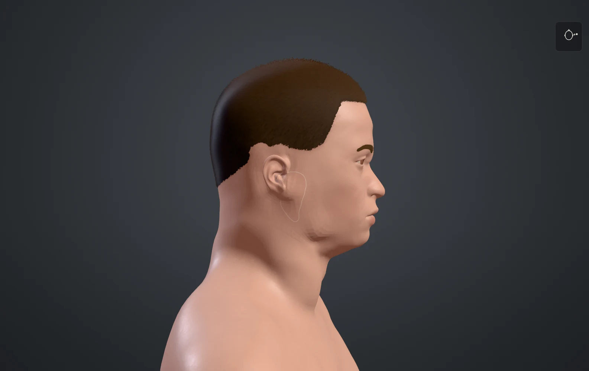
The parotid gland sits in front of and below the ear, wrapped around the back edge of the jaw. [parotid-location] Most lumps that grow in it are benign, and the most common is a pleomorphic adenoma. [pa-most-common]
This atlas follows one such tumour, from the anatomy around it to the operation that removes it. The small head at the top right shows where you are looking from. The model is built from one donated body, with some structures drawn to published anatomy where scans cannot show them, and a generic face.
Scene description (screen readers, static figure): The right side of a generic adult head seen from the side, face to the right. The skin is intact; a slight fullness sits in front of and below the ear.
Checklist items
| Area | Statement | Compared against | Evidence | Self-review | Clinical |
|---|
| Pleomorphic adenoma | A 2 cm pleomorphic adenoma in the superficial lobe, clear of the nerve. | Authored for teaching (size and position), not taken from imaging | docs/qc/m1-anatomy/lobe_split_axial.png | pass: 19 mm, entirely lateral to the nerve plane, 1.6 mm from the nearest branch; the skin fullness over it is authored (up to 2.2 mm). | pending |
| Model | The face is generic (MPFB, CC0), not the donor's. | Face fit report | docs/qc/m1-anatomy/face_fit.png | pass: Conformed to the CT only over the dissection field; the central face is unconformed MPFB. | pending |
Claims
parotid-location established-anatomy sources checked clinical review: pending
Essentials: The parotid gland sits in front of and below the ear, wrapped around the back edge of the jaw.
Anatomy: The gland lies behind and lateral to the ramus of the mandible and in front of the sternocleidomastoid, enclosed in the parotid fascia, with the posterior belly of the digastric and the stylohyoid deep to it.
- University of Iowa Department of Otolaryngology . Parotidectomy with Facial Nerve Dissection. Iowa Head and Neck Protocols. institutional-protocol [active], Pertinent anatomy link
pa-most-common established-anatomy sources checked clinical review: pending
Essentials: Most lumps that grow in the parotid are benign, and the most common is a pleomorphic adenoma.
Anatomy: Pleomorphic adenoma forms the largest group of salivary gland tumours at most sites, and is particularly common in the parotid.
Clinical: In a series of 2,410 salivary gland tumours the parotid was the principal site and pleomorphic adenomas were the largest group, particularly common in the parotid. Of 84 consecutive parotid tumours examined by MRI, 68% were benign, and 29 were pleomorphic adenomas.
Benign among parotid tumours: 68 %; Consecutive patients with a parotid tumour who had MRI before surgery, one centre, 57 of 84; Prospective inclusion, retrospective analysis
Limitations: Series from specialist centres; the share of benign tumours differs between studies (a single imaging cohort here).
- Eveson JW, Cawson RA 1985. Salivary gland tumours. A review of 2410 cases with particular reference to histological types, site, age and sex distribution. J Pathol. case-series [active], Abstract link
- Christe A, Waldherr C, Hallett R et al. 2011. MR imaging of parotid tumors: typical lesion characteristics in MR imaging improve discrimination between benign and malignant disease. AJNR Am J Neuroradiol. case-series [active], Results link
2. Where the gland lies Where the parotid is
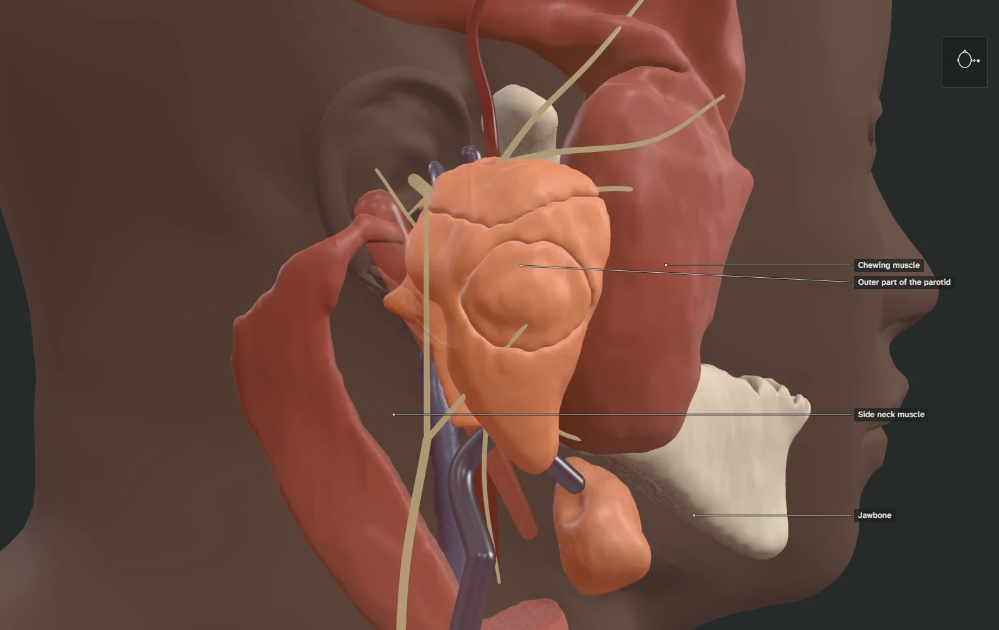
With the skin faded, the gland appears. It is the largest salivary gland, weighing about 18 g. [parotid-size] It lies over the back of the chewing muscle (masseter) and wraps behind the jawbone, in front of the long muscle of the neck. [parotid-location]
Scene description (screen readers, static figure): The skin is faded to a faint outline. The parotid gland is shown in front of and below the ear canal, lying over the back of the jaw and the chewing muscle (masseter), with the neck muscle (sternocleidomastoid) behind and below it.
Checklist items
| Area | Statement | Compared against | Evidence | Self-review | Clinical |
|---|
| Parotid gland | The gland lies in front of and below the ear, over the posterior masseter, wrapping behind the ramus, in front of the sternocleidomastoid. | Source CT with TotalSegmentator masks; Visible Human cryosections a_vm1160/1175/1190; standard atlas lateral view | docs/qc/m0-registration/ct_axial_1149.png
docs/qc/m1-cryo/cryo_1175.jpg | pass: Segmented from the donor CT; lateral boundary matches the photographed gland edge within about 3 mm. | pending |
Claims
parotid-size established-anatomy sources checked clinical review: pending
Essentials: The parotid is the largest salivary gland, weighing about 18 g.
Anatomy: In dissected glands the mean height and width were about 66 and 47 mm and the weight about 18 g.
Mean gland weight: 18.13 g; Human anatomical specimens, 19 specimens; Anatomical dissection study
Mean gland height: 66.37 mm; Human anatomical specimens, 19 specimens; Anatomical dissection study
Mean gland width: 46.84 mm; Human anatomical specimens, 19 specimens; Anatomical dissection study
Limitations: Nineteen specimens; the segmented gland in the model measures 18.2 mL in the scan.
- Pujol-Olmo A, Mirapeix RM, Sañudo-Tejero JR et al. 2020. Description and relationships of the parotid gland levels proposed by the European Salivary Gland Society staging system: an anatomical study. Surg Radiol Anat. anatomical-study [active], Results link
- University of Iowa Department of Otolaryngology . Parotidectomy with Facial Nerve Dissection. Iowa Head and Neck Protocols. institutional-protocol [active], Pertinent anatomy link
parotid-location established-anatomy sources checked clinical review: pending
Essentials: The parotid gland sits in front of and below the ear, wrapped around the back edge of the jaw.
Anatomy: The gland lies behind and lateral to the ramus of the mandible and in front of the sternocleidomastoid, enclosed in the parotid fascia, with the posterior belly of the digastric and the stylohyoid deep to it.
- University of Iowa Department of Otolaryngology . Parotidectomy with Facial Nerve Dissection. Iowa Head and Neck Protocols. institutional-protocol [active], Pertinent anatomy link
3. What the gland does Where the parotid is
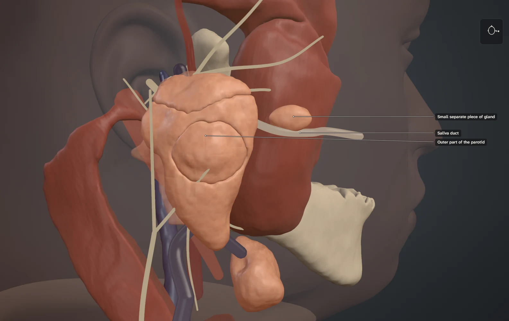
The parotid makes saliva, a thin watery fluid, and sends it to the mouth through a duct. [parotid-saliva] The duct leaves the front of the gland, runs forward across the chewing muscle, goes through the cheek muscle and opens in the mouth beside the second upper molar. [parotid-duct-course]
Some people have a small separate piece of gland tissue in front of the main parotid, resting on the duct. [accessory-parotid-prevalence]
[framed figures, claim accessory-parotid-prevalence]
[framed figures, claim parotid-duct-course]
Scene description (screen readers, static figure): The skin is a faint outline. A thin pale tube, the duct, leaves the front of the gland and runs forward across the chewing muscle. A small separate nodule of gland tissue lies just above the duct, in front of the main gland.
Claims
parotid-saliva established-anatomy sources checked clinical review: pending
Essentials: The parotid makes saliva, a thin watery fluid, and sends it to the mouth through a duct.
Anatomy: The parotid is a serous-secreting salivary gland. Its saliva-making (parasympathetic) fibres come from the otic ganglion through the auriculotemporal nerve.
- University of Iowa Department of Otolaryngology . Parotidectomy with Facial Nerve Dissection. Iowa Head and Neck Protocols. institutional-protocol [active], Pertinent anatomy link
parotid-duct-course established-anatomy sources checked clinical review: pending
Essentials: Saliva leaves the gland through a duct that runs forward across the chewing muscle (masseter) and passes through the cheek muscle (buccinator) into the mouth.
Anatomy: The parotid (Stensen's) duct leaves the anterior border of the gland, crosses the lateral surface of the masseter, penetrates the buccinator and opens in the mouth beside the second upper molar. In a cadaveric study it lay slightly above the line from the tragus to the mouth corner at the masseter's anterior border in most specimens.
Clinical: At the anterior border of the masseter the duct was slightly superior to the tragus–mouth-corner line in 84.4% of 32 hemifaces, on the line in 3.1% and below it in 12.5% (most of those with an accessory gland); it pierced the buccinator medial to the vertical through the lateral canthus in 87.5%.
Duct slightly above the tragus–mouth-corner line at the masseter’s anterior border: 84.4 %; Cadaver hemifaces from 16 adults (mean age 82; 15 Korean, 1 Caucasian), 27 of 32 hemifaces; Cadaveric dissection study
Buccinator penetration medial to the vertical through the lateral canthus: 87.5 %; Cadaver hemifaces from 16 adults (mean age 82; 15 Korean, 1 Caucasian), 28 of 32 hemifaces; Cadaveric dissection study
Limitations: Sixteen elderly cadavers, almost all Korean; the course is described relative to surface landmarks and varies between people. The model draws the duct to the buccinator only.
- Iwanaga J, Tubbs RS, Kitagawa N et al. 2026. Facial landmark-based localization of the parotid duct: a cadaveric study with ultrasonographic feasibility assessment. Sci Rep. anatomical-study [active], Abstract link
- University of Iowa Department of Otolaryngology . Parotidectomy with Facial Nerve Dissection. Iowa Head and Neck Protocols. institutional-protocol [active], Pertinent anatomy link
accessory-parotid-prevalence established-anatomy sources checked clinical review: pending
Essentials: Some people have a small separate piece of gland tissue in front of the main parotid, resting on the duct.
Anatomy: An accessory parotid gland, separate from the main gland, is a common variant. When present it can complicate parotidectomy and can be the site of tumours.
Clinical: Pooled prevalence of an accessory parotid gland was 32.1% (95% CI 21.2–44.0), higher in cadaveric studies (35.8%) than on CT (21.5%); when present it was mostly unilateral (77.8%). In 19 dissected glands it formed ESGS level V in 9 and under 5% of the gland’s weight.
Pooled prevalence of an accessory parotid gland: 32.1 % (95% CI 21.2–44); Cadaveric and CT studies from several regions (more from Asia than North America), 13 articles, 3115 subjects; Systematic review and meta-analysis
Level V (accessory) found in dissection: 47.5 %; Human anatomical specimens, 9 of 19 glands; Anatomical dissection study
Disagreement: Cadaveric studies pooled to 35.8% and CT studies to 21.5%.
Limitations: The authors note a wide discrepancy in the literature on prevalence; imaging finds fewer than dissection. The accessory lobule in the model is authored from these figures, not segmented from the scan.
- Rosa MA, Łazarz DP, Pękala JR et al. 2020. The Accessory Parotid Gland and its Clinical Significance. J Craniofac Surg. meta-analysis [active], Abstract link
- Pujol-Olmo A, Mirapeix RM, Sañudo-Tejero JR et al. 2020. Description and relationships of the parotid gland levels proposed by the European Salivary Gland Society staging system: an anatomical study. Surg Radiol Anat. anatomical-study [active], Abstract link
4. The layers over the gland Layers over the gland
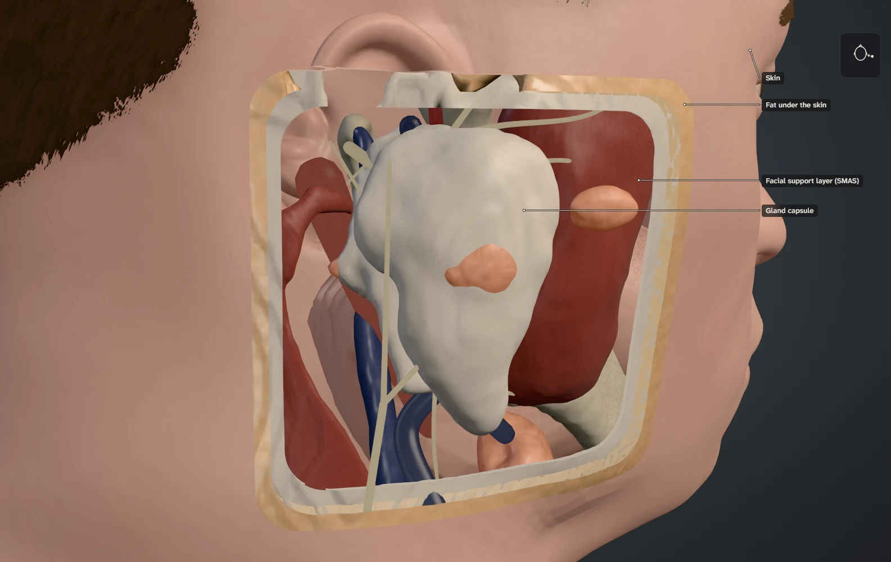
A stepped window opens the layers one by one. From outside in they are the skin, the fat beneath it, a thin supporting sheet (the SMAS), and the tough capsule around the gland. [layers-over-gland] In surgery the skin is lifted in the layer just outside that capsule. [flap-plane]
Scene description (screen readers, static figure): A stepped window is cut through the side of the face. From outside in, the rims show the skin, the yellow fat beneath it, a thin fibrous sheet (the SMAS), and the pale capsule covering the gland.
Checklist items
| Area | Statement | Compared against | Evidence | Self-review | Clinical |
|---|
| Parotid gland | The gland lies in front of and below the ear, over the posterior masseter, wrapping behind the ramus, in front of the sternocleidomastoid. | Source CT with TotalSegmentator masks; Visible Human cryosections a_vm1160/1175/1190; standard atlas lateral view | docs/qc/m0-registration/ct_axial_1149.png
docs/qc/m1-cryo/cryo_1175.jpg | pass: Segmented from the donor CT; lateral boundary matches the photographed gland edge within about 3 mm. | pending |
| Tissue layers | Skin, subcutaneous fat, SMAS and the gland capsule, in that order from outside. | Depth bands under the fitted skin | pipeline/anatomy/layers.py
docs/qc/m1-anatomy/checks.json | limit: Layers are constant-depth bands (fat to 7 mm, SMAS 1.3 mm, capsule 1 mm), not segmented; the capsule is thin because the gland lies 3.9 mm under the skin at the lower pole in the source CT. | pending |
Claims
layers-over-gland established-anatomy sources checked clinical review: pending
Essentials: Over the gland lie, from outside in, the skin, a layer of fat, a thin fibrous sheet called the SMAS, and the gland's own tough capsule.
Anatomy: The gland is enclosed in parotid fascia. Over it lie subcutaneous fat and the superficial musculoaponeurotic system (SMAS), the fibromuscular layer of the face that can be raised and sutured back as a flap.
Limitations: Thicknesses of the layers differ with age, body habit and site; the model uses constant-depth bands fitted under the skin, not segmented layers.
- University of Iowa Department of Otolaryngology . Parotidectomy with Facial Nerve Dissection. Iowa Head and Neck Protocols. institutional-protocol [active], Pertinent anatomy; incision and flap elevation link
- Dulguerov N, Makni A, Dulguerov P 2016. The superficial musculoaponeurotic system flap in the prevention of Frey syndrome: A meta-analysis. Laryngoscope. meta-analysis [active] (indirect), Abstract link
flap-plane representative-technique sources checked clinical review: pending
Essentials: The skin is lifted forward in the layer just outside the gland’s capsule.
Anatomy: The skin flap is raised in the plane immediately superficial to the parotid fascia (a facelift-like plane).
Limitations: The protocol also says the flap may be raised a little deeper than a facelift plane, just outside the periparotid fascia, to make it thicker.
- University of Iowa Department of Otolaryngology . Parotidectomy with Facial Nerve Dissection. Iowa Head and Neck Protocols. institutional-protocol [active], Operative procedure: incision and flap elevation link
5. The nerve that runs through the gland The nerve inside the gland
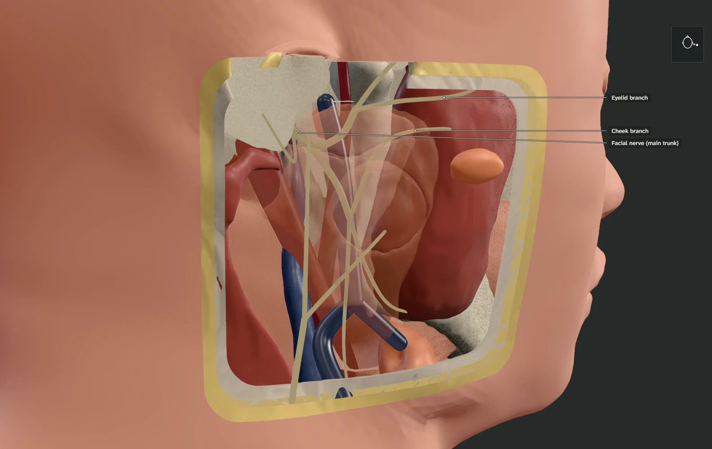
The facial nerve, the nerve that moves the face, leaves the skull just behind the jaw and passes straight into the gland. [fn-exits-stylomastoid-foramen] Its main trunk runs only about a centimetre and a half before dividing, [fn-trunk-length] and its branches fan out to the forehead, eyelids, cheek, lower lip and neck. [fn-five-branch-groups]
The branching differs between people; the pattern shown first is the simplest. [fn-branching-variation]
Scene description (screen readers, static figure): The gland is nearly transparent. An ivory nerve, about 2–3 mm thick, leaves the skull behind the jaw, enters the gland, divides in two, and fans forward into five groups of branches toward the forehead, eyelids, cheek, lower lip and neck.
Checklist items
| Area | Statement | Compared against | Evidence | Self-review | Clinical |
|---|
| Facial nerve | The trunk leaves the stylomastoid foramen, runs about 1.5 cm, enters the gland, divides at the pes and fans into five branch groups. | Cited trunk-length range 8.6-22.8 mm; landmark picks on CT | docs/qc/m1-anatomy/authored_views.png
docs/qc/m1-anatomy/checks.json | limit: Trunk 17.2 mm. One common pattern without interconnections; not verified against cryosections (the nerve is not resolvable at 0.33 mm/px). | pending |
Claims
fn-exits-stylomastoid-foramen established-anatomy sources checked clinical review: pending
Essentials: The facial nerve leaves the skull through a small opening just behind the jaw and ear, and passes straight into the gland.
Anatomy: The trunk of the facial nerve invariably emerges from the base of the skull through the stylomastoid foramen and, in most specimens, enters the parotid gland before it divides.
Clinical: In 23 formalin-fixed cadavers the nerve emerged through the stylomastoid foramen in every dissection, and divided within the gland in 85% and before entering it in 15%.
Trunk divides within the gland: 85 %; Formalin-fixed human cadavers, bilateral dissection, 23 cadavers; Cadaveric microdissection study
Limitations: One cadaver series; the point of division varies between people.
- Salame K, Ouaknine GE, Arensburg B et al. 2002. Microsurgical anatomy of the facial nerve trunk. Clin Anat. cadaveric-study [active], Abstract link
fn-trunk-length established-anatomy sources checked clinical review: pending
Essentials: The main trunk is short: about a centimetre and a half long before it divides.
Anatomy: From the stylomastoid foramen to its first division the trunk measures roughly 14–16 mm on average, with wide variation between people.
Clinical: Trunk length was 14.0 mm on average (range 8.6–22.8) in 40 adult cadavers and 16.4 ± 3.2 mm in 23 cadavers.
Trunk length, foramen to first division: 14 mm (range 8.6–22.8); Adult cadavers, microdissection, 40 cadavers; Cadaveric study
Trunk length, foramen to first division: 16.44 mm; Formalin-fixed cadavers, bilateral dissection, 23 cadavers (SD 3.2 mm); Cadaveric microdissection study
Disagreement: The two series differ by about 2.4 mm in their means.
Limitations: Two cadaver series that measured slightly differently; the trunk in an individual patient can be much shorter or longer. The model's trunk (17 mm) is inside both ranges.
- Pather N, Osman M 2006. Landmarks of the facial nerve: implications for parotidectomy. Surg Radiol Anat. cadaveric-study [active], Abstract link
- Salame K, Ouaknine GE, Arensburg B et al. 2002. Microsurgical anatomy of the facial nerve trunk. Clin Anat. cadaveric-study [active], Abstract link
fn-five-branch-groups established-anatomy sources checked clinical review: pending
Essentials: The nerve fans out into five groups of branches that move the forehead, eyelids, cheek, lower lip and neck.
Anatomy: There are five terminal groups of branches: temporal, zygomatic, buccal, marginal mandibular and cervical, reaching the face from the upper and lower divisions.
Limitations: The number of branches within each group varies from person to person; the model draws one branch for each group.
- University of Iowa Department of Otolaryngology . Parotidectomy with Facial Nerve Dissection. Iowa Head and Neck Protocols. institutional-protocol [active], Facial nerve dissection link
- Pujol-Olmo A, Mirapeix RM, Sañudo-Tejero JR et al. 2020. Description and relationships of the parotid gland levels proposed by the European Salivary Gland Society staging system: an anatomical study. Surg Radiol Anat. anatomical-study [active], Results link
fn-branching-variation established-anatomy sources checked clinical review: pending
Essentials: The branching pattern differs from person to person; the pattern shown first is the simplest, with no cross-links between branches.
Anatomy: The branches often join each other in small loops. The patterns have been classified more than once, and no classification describes the variability well.
Clinical: In a systematic review using Davis’ classification the commonest pattern was type III (26.8% of 1,497 cases) and the simple type I, the textbook pattern, was only fourth (16.3%). Katz and Catalano’s 100 patients: 24% straight, 14% a loop involving the zygomatic branch, 44% a loop involving the buccal branch, 14% complex, 3% two main trunks. A meta-analysis found a single link between the divisions in 23.1% and two links in 8.9%.
Davis type III pattern: 26.8 %; Cadaveric and operative series, 21 studies, 1,497 cases; Systematic review
Davis type I pattern: 16.3 %; Cadaveric and operative series, 21 studies, 1,497 cases; Systematic review
Straight pattern (type I): 24 %; Patients having parotid surgery, one surgical series, 100 patients; Operative photographs and diagrams
Loop involving the zygomatic branch (type II): 14 %; Patients having parotid surgery, one surgical series, 100 patients; Operative photographs and diagrams
Loop involving the buccal branch (type III): 44 %; Patients having parotid surgery, one surgical series, 100 patients; Operative photographs and diagrams
Complex pattern with several links (type IV): 14 %; Patients having parotid surgery, one surgical series, 100 patients; Operative photographs and diagrams
A single link between the two divisions: 23.1 %; Cadaveric and operative series, 19 studies, 2,453 nerves; Systematic review with meta-analysis
Two links between the two divisions: 8.9 %; Cadaveric and operative series, 19 studies, 2,453 nerves; Systematic review with meta-analysis
Disagreement: Katz and Catalano found the buccal-loop pattern in 44% of 100 patients, whereas the pooled Davis analysis puts its commonest pattern at 26.8%; the meta-analysis authors conclude that diversity is the rule.
Limitations: The classifications of Davis and of Katz and Catalano are not the same, so their percentages cannot be compared type for type. In the model the links are single twigs of typical position, drawn between existing branches; real patterns are more varied.
- Poutoglidis A, Paraskevas GK, Lazaridis N et al. 2022. Extratemporal facial nerve branching patterns: systematic review of 1497 cases. J Laryngol Otol. systematic-review [active], Abstract link
- Katz AD, Catalano P 1987. The clinical significance of the various anastomotic branches of the facial nerve. Report of 100 patients. Arch Otolaryngol Head Neck Surg. case-series [active], Abstract link
- Triantafyllou G, Tsiouris C, Chrysanthou I et al. 2024. Extratemporal Facial Nerve Interconnections and Trunk's Variability: A Systematic Review with Meta-Analysis. Diagnostics (Basel). meta-analysis [active], Abstract link
6. From the skull to the first split The nerve inside the gland
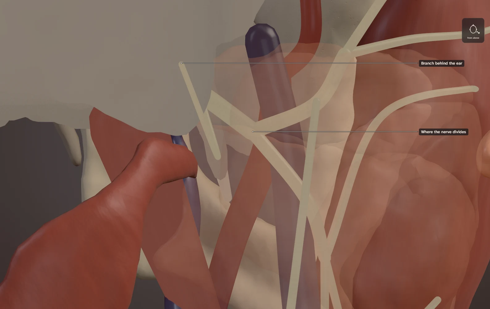
The nerve leaves the skull through a small opening behind the jaw and ear. [fn-exits-stylomastoid-foramen] The main trunk is short, about a centimetre and a half long, [fn-trunk-length] and inside the gland it usually splits into an upper and a lower division, at a point called the pes anserinus. [fn-bifurcation] Before the gland it gives off two small branches, one to the skin behind the ear and one to a muscle under the jaw. [fn-trunk-branches]
The trunk is only about 2.7 mm across where it leaves the skull. [fn-trunk-diameter]
[framed figures, claim fn-trunk-length]
Scene description (screen readers, static figure): Seen from behind and to the side, the gland is almost invisible. The nerve comes out of the skull through a small opening, runs forward as a single short trunk, and divides into an upper and a lower division. Two thin twigs leave the trunk before the gland: one climbs behind the ear, one goes to a small muscle.
Claims
fn-exits-stylomastoid-foramen established-anatomy sources checked clinical review: pending
Essentials: The facial nerve leaves the skull through a small opening just behind the jaw and ear, and passes straight into the gland.
Anatomy: The trunk of the facial nerve invariably emerges from the base of the skull through the stylomastoid foramen and, in most specimens, enters the parotid gland before it divides.
Clinical: In 23 formalin-fixed cadavers the nerve emerged through the stylomastoid foramen in every dissection, and divided within the gland in 85% and before entering it in 15%.
Trunk divides within the gland: 85 %; Formalin-fixed human cadavers, bilateral dissection, 23 cadavers; Cadaveric microdissection study
Limitations: One cadaver series; the point of division varies between people.
- Salame K, Ouaknine GE, Arensburg B et al. 2002. Microsurgical anatomy of the facial nerve trunk. Clin Anat. cadaveric-study [active], Abstract link
fn-trunk-length established-anatomy sources checked clinical review: pending
Essentials: The main trunk is short: about a centimetre and a half long before it divides.
Anatomy: From the stylomastoid foramen to its first division the trunk measures roughly 14–16 mm on average, with wide variation between people.
Clinical: Trunk length was 14.0 mm on average (range 8.6–22.8) in 40 adult cadavers and 16.4 ± 3.2 mm in 23 cadavers.
Trunk length, foramen to first division: 14 mm (range 8.6–22.8); Adult cadavers, microdissection, 40 cadavers; Cadaveric study
Trunk length, foramen to first division: 16.44 mm; Formalin-fixed cadavers, bilateral dissection, 23 cadavers (SD 3.2 mm); Cadaveric microdissection study
Disagreement: The two series differ by about 2.4 mm in their means.
Limitations: Two cadaver series that measured slightly differently; the trunk in an individual patient can be much shorter or longer. The model's trunk (17 mm) is inside both ranges.
- Pather N, Osman M 2006. Landmarks of the facial nerve: implications for parotidectomy. Surg Radiol Anat. cadaveric-study [active], Abstract link
- Salame K, Ouaknine GE, Arensburg B et al. 2002. Microsurgical anatomy of the facial nerve trunk. Clin Anat. cadaveric-study [active], Abstract link
fn-bifurcation established-anatomy sources checked clinical review: pending
Essentials: Inside the gland the trunk usually splits into an upper and a lower division.
Anatomy: At the pes anserinus the trunk usually divides into two, a temporofacial (upper) and a cervicofacial (lower) division; division into three is uncommon.
Clinical: Pooled prevalence of a bifurcated trunk was 94.1% in a meta-analysis of 2,453 nerves and 96.4% (trifurcation 3.2%) in a systematic review of 1,497 cases.
Trunk divides in two (bifurcation): 94.1 %; Cadaveric and operative series, 19 studies, 2,453 nerves; Systematic review with meta-analysis
Trunk divides in two (bifurcation): 96.4 %; Cadaveric and operative series, 21 studies, 1,497 cases; Systematic review
Trunk divides in three (trifurcation): 3.2 %; Cadaveric and operative series, 21 studies, 1,497 cases; Systematic review
Limitations: Studies classify the pattern differently; the authors note that the bifurcation is far more constant than the distal branching.
- Triantafyllou G, Tsiouris C, Chrysanthou I et al. 2024. Extratemporal Facial Nerve Interconnections and Trunk's Variability: A Systematic Review with Meta-Analysis. Diagnostics (Basel). meta-analysis [active], Abstract link
- Poutoglidis A, Paraskevas GK, Lazaridis N et al. 2022. Extratemporal facial nerve branching patterns: systematic review of 1497 cases. J Laryngol Otol. systematic-review [active], Abstract link
fn-trunk-branches established-anatomy sources checked clinical review: pending
Essentials: Before it enters the gland the trunk gives off two small branches: one to the skin behind the ear and one to a small muscle under the jaw.
Anatomy: Two branches consistently arise from the trunk: the posterior auricular nerve and the nerve to the posterior belly of the digastric. A branch to the stylohyoid and a link to the glossopharyngeal nerve are less constant.
Limitations: One cadaver series of 23.
- Salame K, Ouaknine GE, Arensburg B et al. 2002. Microsurgical anatomy of the facial nerve trunk. Clin Anat. cadaveric-study [active], Abstract link
fn-trunk-diameter established-anatomy sources checked clinical review: pending
Essentials: At its exit from the skull the nerve is only about 2–3 mm thick.
Anatomy: The trunk measures about 2.7 mm across where it leaves the stylomastoid foramen.
Trunk diameter at the stylomastoid foramen: 2.66 mm; Formalin-fixed human cadavers, 23 cadavers (SD 0.55 mm); Cadaveric microdissection study
Limitations: Fixed tissue; the diameter falls as the nerve divides, and branches are far thinner than the trunk. Branch calibres in the model are authored from published ranges.
- Salame K, Ouaknine GE, Arensburg B et al. 2002. Microsurgical anatomy of the facial nerve trunk. Clin Anat. cadaveric-study [active], Abstract link
7. Five groups, five jobs The nerve inside the gland
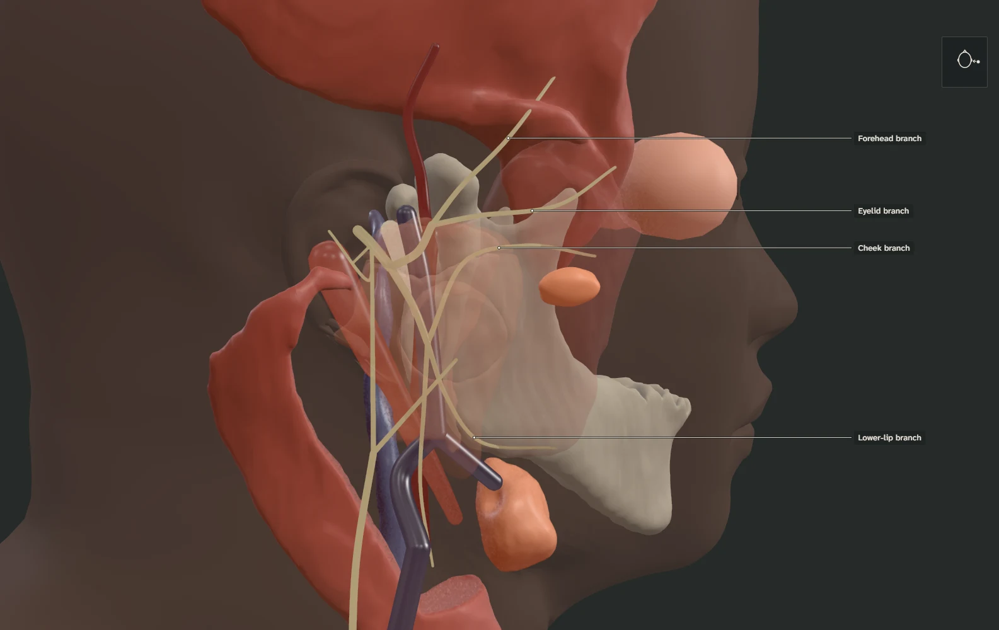
There are five groups of branches: temporal, zygomatic, buccal, marginal mandibular and cervical. [fn-five-branch-groups] They move different parts of the face: the forehead and brow and the eyelids, the cheek and upper lip, and the lower lip. [fn-branch-targets] The branch to the lower lip is the one most often weakened after the operation. [fn-branch-targets]
In the model each group is drawn as a single branch. In people the branches often join each other in small loops, and the pattern differs from person to person. [fn-branching-variation]
Scene description (screen readers, static figure): Seen from the side, the five groups of branches leave the front of the gland like the fingers of a hand: one rises to the forehead, one runs to the eyelids, one crosses the cheek, one follows the lower edge of the jaw toward the lower lip, and one runs down into the neck.
Claims
fn-five-branch-groups established-anatomy sources checked clinical review: pending
Essentials: The nerve fans out into five groups of branches that move the forehead, eyelids, cheek, lower lip and neck.
Anatomy: There are five terminal groups of branches: temporal, zygomatic, buccal, marginal mandibular and cervical, reaching the face from the upper and lower divisions.
Limitations: The number of branches within each group varies from person to person; the model draws one branch for each group.
- University of Iowa Department of Otolaryngology . Parotidectomy with Facial Nerve Dissection. Iowa Head and Neck Protocols. institutional-protocol [active], Facial nerve dissection link
- Pujol-Olmo A, Mirapeix RM, Sañudo-Tejero JR et al. 2020. Description and relationships of the parotid gland levels proposed by the European Salivary Gland Society staging system: an anatomical study. Surg Radiol Anat. anatomical-study [active], Results link
fn-branch-targets established-anatomy sources checked clinical review: pending
Essentials: Each group moves a different part of the face: the temporal and zygomatic branches the forehead and eyelids, the buccal branch the cheek and upper lip, and the marginal mandibular branch the lower lip.
Anatomy: Monitoring electrodes are placed over the frontalis (temporal branch), the orbicularis oculi (temporal and zygomatic), the orbicularis oris at the upper lip (buccal) and the mentalis at the lower lip (marginal mandibular). Marginal mandibular weakness shows as a lower lip and corner of the mouth that does not pull down.
Clinical: The marginal mandibular branch is the one most often affected after parotidectomy.
Limitations: Described from the placement of monitoring electrodes and one centre’s introduction, not from a mapping study; branches overlap and share muscles, and the cervical branch is not covered by these sources.
- Cristofaro MG, Colangeli W, Ferragina F et al. 2024. Facial Nerve Injury after Extracapsular Dissection for Benign Parotid Tumors with and without Intraoperative Monitoring: A Retrospective Study of a Single Center. Diagnostics (Basel). cohort [active], Methods, monitoring link
- Otanez ES, Fernandez Trokhimtchouk T, Semanate F et al. 2024. Incidence of Facial Nerve Paralysis After Parotidectomy: Our Experience. Cureus. case-series [active], Introduction link
fn-branching-variation established-anatomy sources checked clinical review: pending
Essentials: The branching pattern differs from person to person; the pattern shown first is the simplest, with no cross-links between branches.
Anatomy: The branches often join each other in small loops. The patterns have been classified more than once, and no classification describes the variability well.
Clinical: In a systematic review using Davis’ classification the commonest pattern was type III (26.8% of 1,497 cases) and the simple type I, the textbook pattern, was only fourth (16.3%). Katz and Catalano’s 100 patients: 24% straight, 14% a loop involving the zygomatic branch, 44% a loop involving the buccal branch, 14% complex, 3% two main trunks. A meta-analysis found a single link between the divisions in 23.1% and two links in 8.9%.
Davis type III pattern: 26.8 %; Cadaveric and operative series, 21 studies, 1,497 cases; Systematic review
Davis type I pattern: 16.3 %; Cadaveric and operative series, 21 studies, 1,497 cases; Systematic review
Straight pattern (type I): 24 %; Patients having parotid surgery, one surgical series, 100 patients; Operative photographs and diagrams
Loop involving the zygomatic branch (type II): 14 %; Patients having parotid surgery, one surgical series, 100 patients; Operative photographs and diagrams
Loop involving the buccal branch (type III): 44 %; Patients having parotid surgery, one surgical series, 100 patients; Operative photographs and diagrams
Complex pattern with several links (type IV): 14 %; Patients having parotid surgery, one surgical series, 100 patients; Operative photographs and diagrams
A single link between the two divisions: 23.1 %; Cadaveric and operative series, 19 studies, 2,453 nerves; Systematic review with meta-analysis
Two links between the two divisions: 8.9 %; Cadaveric and operative series, 19 studies, 2,453 nerves; Systematic review with meta-analysis
Disagreement: Katz and Catalano found the buccal-loop pattern in 44% of 100 patients, whereas the pooled Davis analysis puts its commonest pattern at 26.8%; the meta-analysis authors conclude that diversity is the rule.
Limitations: The classifications of Davis and of Katz and Catalano are not the same, so their percentages cannot be compared type for type. In the model the links are single twigs of typical position, drawn between existing branches; real patterns are more varied.
- Poutoglidis A, Paraskevas GK, Lazaridis N et al. 2022. Extratemporal facial nerve branching patterns: systematic review of 1497 cases. J Laryngol Otol. systematic-review [active], Abstract link
- Katz AD, Catalano P 1987. The clinical significance of the various anastomotic branches of the facial nerve. Report of 100 patients. Arch Otolaryngol Head Neck Surg. case-series [active], Abstract link
- Triantafyllou G, Tsiouris C, Chrysanthou I et al. 2024. Extratemporal Facial Nerve Interconnections and Trunk's Variability: A Systematic Review with Meta-Analysis. Diagnostics (Basel). meta-analysis [active], Abstract link
8. Outer and inner parts of the gland The nerve inside the gland
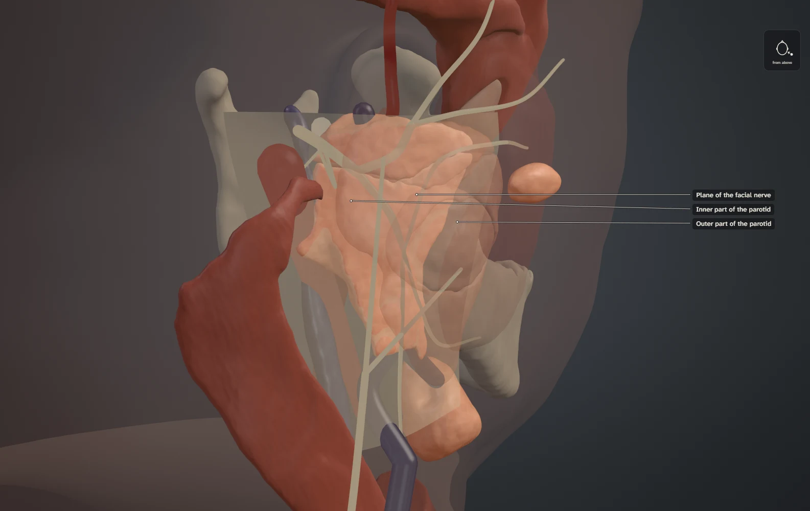
The gland has no true lobes: surgeons call the tissue on the outer side of the nerve “superficial” and the rest “deep”. By weight about two-thirds lies on the outer side. [parotid-lobes-surgical] A large vein runs down through the inner part, just inside the nerve; scans use it to estimate where the nerve lies. [fn-lateral-to-retromandibular-vein]
The sheet is a surface fitted through the nerve in the model; it is a surgical construct, not a membrane.
Scene description (screen readers, static figure): Seen from behind and above, a translucent sheet marks the plane the nerve lies in. Gland tissue on the outer side of the sheet is the superficial lobe; tissue on the inner side, around the large vein behind the jaw, is the deep lobe.
Checklist items
| Area | Statement | Compared against | Evidence | Self-review | Clinical |
|---|
| Parotid gland | Superficial and deep 'lobes' are defined by the facial-nerve plane (a surgical construct, not true lobes). | Pujol-Olmo 2020 (61-69% superficial by weight, 19 specimens) | docs/qc/m1-anatomy/lobe_split_axial.png
docs/qc/m1-anatomy/checks.json | limit: 59% superficial in this model (reported, not tuned); the plane is a smooth surface through the authored nerve. | pending |
| Parotid gland | The retromandibular (deep) portion is authored within anatomical bounds because the CT does not resolve it; muscle-density tissue beside the posterior digastric is excluded. | CT density; cryosection a_vm1175 | docs/qc/m1-anatomy/deep_lobe_digastric.png
docs/qc/m1-cryo/cryo_1175.jpg | limit: Authored region (7.7 mL); the stylomandibular-tunnel extension is not modelled; the cryosection overlay still suggests about 3 mm overlap with muscle at z 231, within registration uncertainty. | pending |
| Facial nerve and vessels | Within the gland the nerve lies lateral (superficial) to the retromandibular vein; the external carotid lies deep to the vein. | Relationship checks on CT; cryosection overlays at three levels | docs/qc/m1-anatomy/checks.json
docs/qc/m1-cryo/cryo_1160.jpg
docs/qc/m1-cryo/cryo_1190.jpg | pass: Relationships hold; the authored vessels lie 1-5 mm from the photographed vessels, within registration uncertainty. | pending |
| Pleomorphic adenoma | A 2 cm pleomorphic adenoma in the superficial lobe, clear of the nerve. | Authored for teaching (size and position), not taken from imaging | docs/qc/m1-anatomy/lobe_split_axial.png | pass: 19 mm, entirely lateral to the nerve plane, 1.6 mm from the nearest branch; the skin fullness over it is authored (up to 2.2 mm). | pending |
Claims
parotid-lobes-surgical established-anatomy sources checked clinical review: pending
Essentials: The “lobes” of the parotid are not separate parts: surgeons call the tissue on the outer side of the nerve “superficial” and the rest “deep”.
Anatomy: The superficial and deep lobes are a surgical division defined by the plane of the facial nerve; by weight about two-thirds of the gland lies superficial to it, and most tumours arise there.
Clinical: In 19 specimens the lateral levels I and II together held 61–69% of the weight (ESGS levels, the ranges for levels I and II summed).
Gland weight lateral to the nerve plane (levels I + II, reported ranges summed): % (range 61–69); Human anatomical specimens, 19 specimens; Anatomical dissection study (sum of two reported ranges)
Limitations: A sum of ranges the paper reports for each level, not a figure it states; the model’s superficial share (59%) is reported against it, not tuned to it.
- Pujol-Olmo A, Mirapeix RM, Sañudo-Tejero JR et al. 2020. Description and relationships of the parotid gland levels proposed by the European Salivary Gland Society staging system: an anatomical study. Surg Radiol Anat. anatomical-study [active], Results link
- Zanghì A, Cavallaro A, Marchi M et al. 2024. Surgical management of benign tumors of the parotid gland: the advantages of extracapsular dissection compared to traditional surgical techniques. Front Surg. narrative-review [active] (indirect), Introduction link
fn-lateral-to-retromandibular-vein established-anatomy sources checked clinical review: pending
Essentials: Inside the gland the nerve usually lies on the outer side of a large vein, which scans use to estimate where the nerve runs.
Anatomy: The retromandibular vein runs down through the gland and marks the division between its deep and superficial lobes, so it approximates the depth of the facial nerve. The lower division of the nerve usually lies lateral (superficial) to it.
Clinical: The vein was deep or medial to the marginal mandibular branch or lower division in 77.1% of 35 parotidectomies, and in 92.6% of 1,454 sides across the literature and that cohort. The nerve ran medial to the vein in 3 of 49 donor bodies.
Vein deep or medial to the lower division (classical relation): 77.1 %; Patients having parotidectomy, one centre, one year, 27 of 35 parotidectomies; Prospective surgical study
Classical relation, pooled literature and cohort: 92.6 %; Cadaveric, radiological and surgical series, 1,346 of 1,454 sides; Narrative literature review with a prospective cohort
Atypical course medial to the vein: 6 %; Donor bodies, right hemifaces, 3 of 49 donor bodies; Cadaveric dissection
Limitations: The relation is not constant; the authors stress that the vein is a landmark, not a guarantee. The model draws the usual relation.
- University of Iowa Department of Otolaryngology . Parotidectomy with Facial Nerve Dissection. Iowa Head and Neck Protocols. institutional-protocol [active], Pertinent anatomy link
- Mehel DM, Demirel E, Koç R et al. 2026. Intraoperative relationship between the retromandibular vein and the marginal mandibular branch of the facial nerve: a prospective surgical study and literature review. Surg Radiol Anat. anatomical-study [active], Abstract link
- Suchomlinov A, Noel G, Moradi A 2025. An Atypical Anatomical Variation in Facial Nerve Position: Temporal Branch Lateral and Main Trunk Medial to the Retromandibular Vein in a Series of Three Cadaveric Cases With Clinical Implications. Laryngoscope Investig Otolaryngol. anatomical-study [active], Abstract link
9. The pattern varies The nerve inside the gland
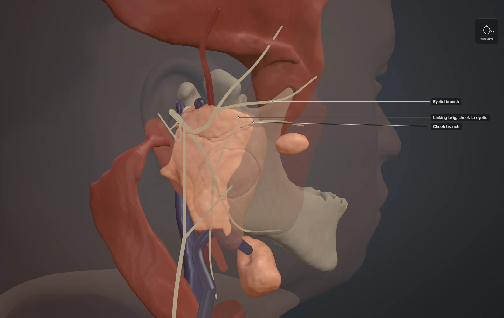
The branches often join each other in small loops, and the patterns have been classified more than once without any classification capturing the variation. [fn-branching-variation] The first split into two is far steadier than the branching beyond it. [fn-bifurcation] Because of this, surgeons look for the pattern early in the dissection. [branching-surgical-awareness]
[framed figures, claim fn-branching-variation]
[framed figures, claim fn-branching-variation]
The Explore chapter lets you switch the pattern.
Scene description (screen readers, static figure): The same branches with one extra twig drawn in, joining the cheek branch to the eyelid branch where they leave the gland. It is one of the commonest of many possible cross-links between the branches, shown here as a single small loop.
Checklist items
| Area | Statement | Compared against | Evidence | Self-review | Clinical |
|---|
| Facial nerve | Branching patterns follow the Katz-Catalano types with their pooled prevalence, drawn on the same model. | Katz and Catalano 1987; Triantafyllou 2024 | docs/qc/m1-anatomy/checks.json | limit: The interconnecting twigs are schematic in position: the sources give patterns and prevalence, not coordinates. The default pattern has no interconnections. | pending |
Claims
fn-branching-variation established-anatomy sources checked clinical review: pending
Essentials: The branching pattern differs from person to person; the pattern shown first is the simplest, with no cross-links between branches.
Anatomy: The branches often join each other in small loops. The patterns have been classified more than once, and no classification describes the variability well.
Clinical: In a systematic review using Davis’ classification the commonest pattern was type III (26.8% of 1,497 cases) and the simple type I, the textbook pattern, was only fourth (16.3%). Katz and Catalano’s 100 patients: 24% straight, 14% a loop involving the zygomatic branch, 44% a loop involving the buccal branch, 14% complex, 3% two main trunks. A meta-analysis found a single link between the divisions in 23.1% and two links in 8.9%.
Davis type III pattern: 26.8 %; Cadaveric and operative series, 21 studies, 1,497 cases; Systematic review
Davis type I pattern: 16.3 %; Cadaveric and operative series, 21 studies, 1,497 cases; Systematic review
Straight pattern (type I): 24 %; Patients having parotid surgery, one surgical series, 100 patients; Operative photographs and diagrams
Loop involving the zygomatic branch (type II): 14 %; Patients having parotid surgery, one surgical series, 100 patients; Operative photographs and diagrams
Loop involving the buccal branch (type III): 44 %; Patients having parotid surgery, one surgical series, 100 patients; Operative photographs and diagrams
Complex pattern with several links (type IV): 14 %; Patients having parotid surgery, one surgical series, 100 patients; Operative photographs and diagrams
A single link between the two divisions: 23.1 %; Cadaveric and operative series, 19 studies, 2,453 nerves; Systematic review with meta-analysis
Two links between the two divisions: 8.9 %; Cadaveric and operative series, 19 studies, 2,453 nerves; Systematic review with meta-analysis
Disagreement: Katz and Catalano found the buccal-loop pattern in 44% of 100 patients, whereas the pooled Davis analysis puts its commonest pattern at 26.8%; the meta-analysis authors conclude that diversity is the rule.
Limitations: The classifications of Davis and of Katz and Catalano are not the same, so their percentages cannot be compared type for type. In the model the links are single twigs of typical position, drawn between existing branches; real patterns are more varied.
- Poutoglidis A, Paraskevas GK, Lazaridis N et al. 2022. Extratemporal facial nerve branching patterns: systematic review of 1497 cases. J Laryngol Otol. systematic-review [active], Abstract link
- Katz AD, Catalano P 1987. The clinical significance of the various anastomotic branches of the facial nerve. Report of 100 patients. Arch Otolaryngol Head Neck Surg. case-series [active], Abstract link
- Triantafyllou G, Tsiouris C, Chrysanthou I et al. 2024. Extratemporal Facial Nerve Interconnections and Trunk's Variability: A Systematic Review with Meta-Analysis. Diagnostics (Basel). meta-analysis [active], Abstract link
fn-bifurcation established-anatomy sources checked clinical review: pending
Essentials: Inside the gland the trunk usually splits into an upper and a lower division.
Anatomy: At the pes anserinus the trunk usually divides into two, a temporofacial (upper) and a cervicofacial (lower) division; division into three is uncommon.
Clinical: Pooled prevalence of a bifurcated trunk was 94.1% in a meta-analysis of 2,453 nerves and 96.4% (trifurcation 3.2%) in a systematic review of 1,497 cases.
Trunk divides in two (bifurcation): 94.1 %; Cadaveric and operative series, 19 studies, 2,453 nerves; Systematic review with meta-analysis
Trunk divides in two (bifurcation): 96.4 %; Cadaveric and operative series, 21 studies, 1,497 cases; Systematic review
Trunk divides in three (trifurcation): 3.2 %; Cadaveric and operative series, 21 studies, 1,497 cases; Systematic review
Limitations: Studies classify the pattern differently; the authors note that the bifurcation is far more constant than the distal branching.
- Triantafyllou G, Tsiouris C, Chrysanthou I et al. 2024. Extratemporal Facial Nerve Interconnections and Trunk's Variability: A Systematic Review with Meta-Analysis. Diagnostics (Basel). meta-analysis [active], Abstract link
- Poutoglidis A, Paraskevas GK, Lazaridis N et al. 2022. Extratemporal facial nerve branching patterns: systematic review of 1497 cases. J Laryngol Otol. systematic-review [active], Abstract link
branching-surgical-awareness standard-principle sources checked clinical review: pending
Essentials: Because the pattern differs from person to person, surgeons look for it early in the dissection rather than assuming it.
Anatomy: The authors of a systematic review conclude that early identification of the branching pattern during surgery reduces the risk of injuring the nerve; those of a meta-analysis advise utmost caution at parotidectomy because no classification captures the variation.
Limitations: These are the authors’ conclusions from anatomical series; no study measured whether identifying the pattern early lowers injury rates.
- Poutoglidis A, Paraskevas GK, Lazaridis N et al. 2022. Extratemporal facial nerve branching patterns: systematic review of 1497 cases. J Laryngol Otol. systematic-review [active], Conclusion link
- Triantafyllou G, Tsiouris C, Chrysanthou I et al. 2024. Extratemporal Facial Nerve Interconnections and Trunk's Variability: A Systematic Review with Meta-Analysis. Diagnostics (Basel). meta-analysis [active], Conclusions link
10. The tumour in the outer part of the gland The tumour
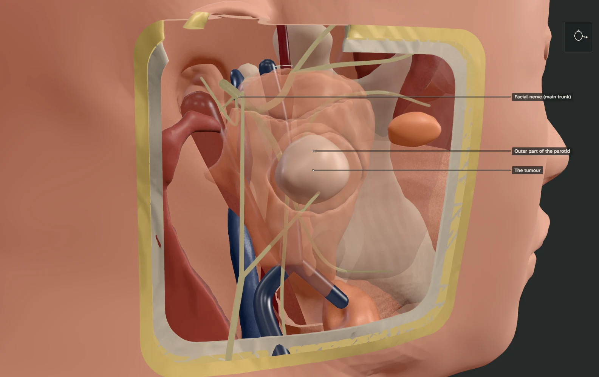
The tumour shown is about 2 cm across, in the outer part of the gland, on the outer side of the nerve. Its covering is often thin or incomplete, and small extensions can reach beyond it — one reason surgeons remove a cuff of normal gland around the tumour rather than shelling it out. [pa-capsule-features]
Scene description (screen readers, static figure): The gland capsule is opened. Within the outer part of the gland, partly see-through, a pale lobulated mass about 2 cm across sits just under the gland surface, on the outer side of the nerve.
Checklist items
| Area | Statement | Compared against | Evidence | Self-review | Clinical |
|---|
| Pleomorphic adenoma | A 2 cm pleomorphic adenoma in the superficial lobe, clear of the nerve. | Authored for teaching (size and position), not taken from imaging | docs/qc/m1-anatomy/lobe_split_axial.png | pass: 19 mm, entirely lateral to the nerve plane, 1.6 mm from the nearest branch; the skin fullness over it is authored (up to 2.2 mm). | pending |
Claims
pa-capsule-features established-anatomy sources checked clinical review: pending
Essentials: A pleomorphic adenoma’s outer layer is often thin or incomplete, and small finger-like extensions can reach beyond it, which is why surgeons take a cuff of normal gland rather than shelling the tumour out.
Anatomy: Most pleomorphic adenomas have at least one capsular feature: an incomplete capsule, penetration of the capsule, pseudopodia or satellite nodules. Left in the surrounding gland, pseudopodia and satellite tumours can cause recurrence.
Clinical: Of 218 resected parotid pleomorphic adenomas, 73% had at least one capsular feature: incomplete capsule in 33%, capsular penetration in 26%, pseudopodia in 40% and satellite nodules in 13%. Incomplete capsule and satellites were commonest in the stroma-rich (myxoid) subtype.
At least one capsular feature: 73 %; Resected parotid pleomorphic adenomas, retrospective and prospective, 160 of 218; Histopathological analysis
Incomplete capsule: 33 %; Resected parotid pleomorphic adenomas, retrospective and prospective, of 218; Histopathological analysis
Capsular penetration: 26 %; Resected parotid pleomorphic adenomas, retrospective and prospective, of 218; Histopathological analysis
Pseudopodia: 40 %; Resected parotid pleomorphic adenomas, retrospective and prospective, of 218; Histopathological analysis
Satellite nodules: 13 %; Resected parotid pleomorphic adenomas, retrospective and prospective, of 218; Histopathological analysis
Limitations: One centre’s series of resected tumours; the authors report these features are more common than earlier literature suggested, and that the prospective group had more pseudopodia and capsular penetration. The inset drawing is a schematic of these features, not a section of a real tumour.
- Zbären P, Stauffer E 2007. Pleomorphic adenoma of the parotid gland: histopathologic analysis of the capsular characteristics of 218 tumors. Head Neck. case-series [active], Abstract link
- Dulguerov P, Todic J, Pusztaszeri M et al. 2017. Why Do Parotid Pleomorphic Adenomas Recur? A Systematic Review of Pathological and Surgical Variables. Front Surg. systematic-review [active], Abstract link
pa-most-common established-anatomy sources checked clinical review: pending
Essentials: Most lumps that grow in the parotid are benign, and the most common is a pleomorphic adenoma.
Anatomy: Pleomorphic adenoma forms the largest group of salivary gland tumours at most sites, and is particularly common in the parotid.
Clinical: In a series of 2,410 salivary gland tumours the parotid was the principal site and pleomorphic adenomas were the largest group, particularly common in the parotid. Of 84 consecutive parotid tumours examined by MRI, 68% were benign, and 29 were pleomorphic adenomas.
Benign among parotid tumours: 68 %; Consecutive patients with a parotid tumour who had MRI before surgery, one centre, 57 of 84; Prospective inclusion, retrospective analysis
Limitations: Series from specialist centres; the share of benign tumours differs between studies (a single imaging cohort here).
- Eveson JW, Cawson RA 1985. Salivary gland tumours. A review of 2410 cases with particular reference to histological types, site, age and sex distribution. J Pathol. case-series [active], Abstract link
- Christe A, Waldherr C, Hallett R et al. 2011. MR imaging of parotid tumors: typical lesion characteristics in MR imaging improve discrimination between benign and malignant disease. AJNR Am J Neuroradiol. case-series [active], Results link
11. Where these tumours grow The tumour
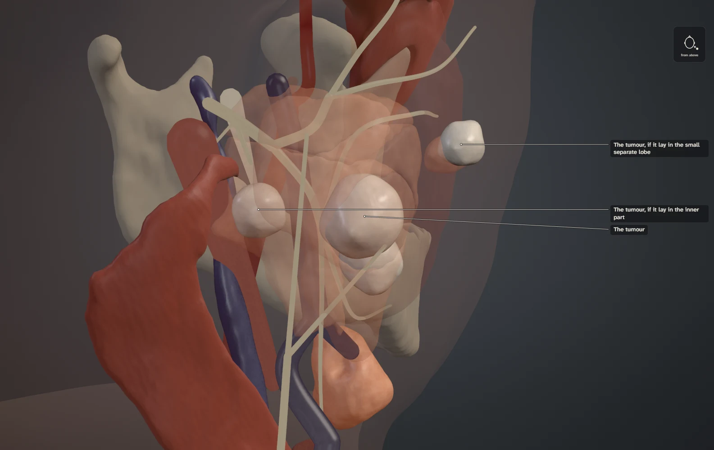
Most of these tumours grow in the outer part of the gland; some grow in the inner part, in the lower tail, or in the small separate lobe in front. [pa-positions] The same tumour is drawn in each place to show where each lies in relation to the nerve; how common each place is comes from the studies below.
[framed figures, claim pa-positions]
Scene description (screen readers, static figure): The gland is see-through, seen from behind and above, with the same kind of tumour drawn in four places: in the outer part (the one followed in this atlas), in the inner part beneath the nerve, in the lower tail of the gland, and in the small separate lobe in front of it.
Checklist items
| Area | Statement | Compared against | Evidence | Self-review | Clinical |
|---|
| Tumour | A pleomorphic adenoma can lie in the outer lobe, the inner lobe, the tail or the accessory lobule. | Placement checks (clear of nerve, vessels, bone, muscle) | docs/qc/m1-anatomy/checks.json | pass: Alternate placements are authored for teaching; sizes and positions are not taken from imaging. | pending |
Claims
pa-positions comparative-evidence sources checked clinical review: pending
Essentials: Most of these tumours grow in the outer part of the gland; some grow in the inner part, in the lower tail, or in the small separate lobe in front.
Anatomy: Pleomorphic adenomas mostly lie in the superficial portion of the parotid, only a minority in the deep lobe. Tumours also arise in the tail of the gland and in accessory parotid tissue along the duct.
Clinical: A narrative review states that about 10% of pleomorphic adenomas lie in the deep lobe, whereas a tertiary-centre surgical series had 147 deep-lobe and 222 superficial-lobe cases. A systematic review of accessory parotid gland neoplasms covered 187 patients, 61.5% with benign tumours.
Pleomorphic adenomas in the deep lobe: 10 %; Pleomorphic adenomas, as stated in a narrative review (original series not re-checked); Narrative review statement
Deep-lobe pleomorphic adenomas in one surgical series: 147 count; Previously untreated parotid pleomorphic adenoma, one tertiary centre, 1990–2015, of 369 (222 superficial); Retrospective chart review
Benign among accessory parotid gland neoplasms: 61.5 %; Patients with accessory parotid gland neoplasms, 187 patients, 15 studies; Systematic review
Disagreement: About 10% deep-lobe in a narrative review against 40% (147 of 369) in a tertiary-centre series.
Limitations: The shares differ widely because referral centres see more deep-lobe tumours and imaging finds more of them; they say nothing about an individual tumour. Accessory-gland tumours of all histologies are pooled in the last figure.
- Zanghì A, Cavallaro A, Marchi M et al. 2024. Surgical management of benign tumors of the parotid gland: the advantages of extracapsular dissection compared to traditional surgical techniques. Front Surg. narrative-review [active], Introduction link
- Levyn H, Subramanian T, Eagan A et al. 2024. Parotidectomy for deep lobe pleomorphic adenomas is associated with higher rates of complications and recurrence. Head Neck. cohort [active], Results link
- Pasick LJ, Tong JY, Benito DA et al. 2020. Surgical management and outcomes of accessory parotid gland neoplasms: A systematic review. Am J Otolaryngol. systematic-review [active], Results link
- University of Iowa Department of Otolaryngology . Parotidectomy with Facial Nerve Dissection. Iowa Head and Neck Protocols. institutional-protocol [active] (indirect), Pertinent anatomy; facial nerve dissection link
12. The tumour's edge, magnified The tumour
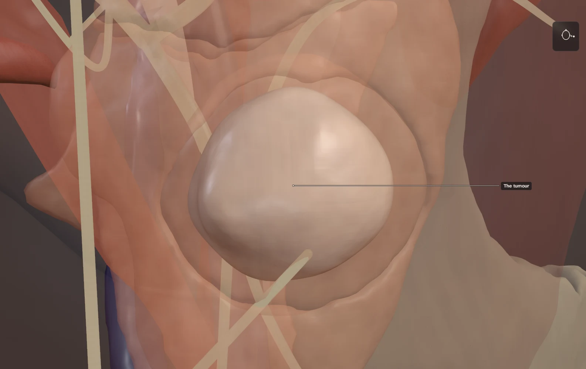
Most of these tumours have at least one flaw in their outer covering: it may be incomplete, the tumour may push through it, and finger-like extensions or small satellite nodules may lie beyond it. [pa-capsule-features]
[inset: The edge of the tumour]
[PseudocapsuleInset]
[framed figures, claim pa-capsule-features]
Scene description (screen readers, static figure): A close view of the tumour inside the see-through gland. Beside it, a magnified line drawing of the tumour's edge shows a thin capsule that stops in places, a finger-like extension through it, and small satellite nodules in the gland beyond.
Claims
pa-capsule-features established-anatomy sources checked clinical review: pending
Essentials: A pleomorphic adenoma’s outer layer is often thin or incomplete, and small finger-like extensions can reach beyond it, which is why surgeons take a cuff of normal gland rather than shelling the tumour out.
Anatomy: Most pleomorphic adenomas have at least one capsular feature: an incomplete capsule, penetration of the capsule, pseudopodia or satellite nodules. Left in the surrounding gland, pseudopodia and satellite tumours can cause recurrence.
Clinical: Of 218 resected parotid pleomorphic adenomas, 73% had at least one capsular feature: incomplete capsule in 33%, capsular penetration in 26%, pseudopodia in 40% and satellite nodules in 13%. Incomplete capsule and satellites were commonest in the stroma-rich (myxoid) subtype.
At least one capsular feature: 73 %; Resected parotid pleomorphic adenomas, retrospective and prospective, 160 of 218; Histopathological analysis
Incomplete capsule: 33 %; Resected parotid pleomorphic adenomas, retrospective and prospective, of 218; Histopathological analysis
Capsular penetration: 26 %; Resected parotid pleomorphic adenomas, retrospective and prospective, of 218; Histopathological analysis
Pseudopodia: 40 %; Resected parotid pleomorphic adenomas, retrospective and prospective, of 218; Histopathological analysis
Satellite nodules: 13 %; Resected parotid pleomorphic adenomas, retrospective and prospective, of 218; Histopathological analysis
Limitations: One centre’s series of resected tumours; the authors report these features are more common than earlier literature suggested, and that the prospective group had more pseudopodia and capsular penetration. The inset drawing is a schematic of these features, not a section of a real tumour.
- Zbären P, Stauffer E 2007. Pleomorphic adenoma of the parotid gland: histopathologic analysis of the capsular characteristics of 218 tumors. Head Neck. case-series [active], Abstract link
- Dulguerov P, Todic J, Pusztaszeri M et al. 2017. Why Do Parotid Pleomorphic Adenomas Recur? A Systematic Review of Pathological and Surgical Variables. Front Surg. systematic-review [active], Abstract link
13. Why it is not simply shelled out The tumour
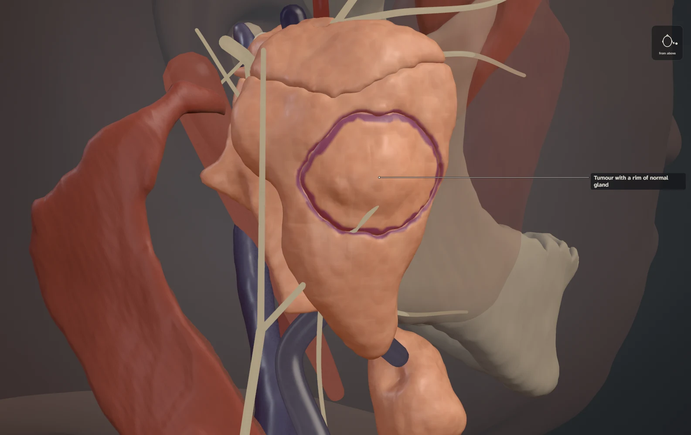
Shelling a tumour out of its capsule leaves behind the tiny extensions that reach beyond it, and the tumour tends to come back: the commonest cause of recurrence is enucleation with rupture and incomplete removal. [enucleation-recurrence] That is why even the smallest standard operation takes a rim of normal gland with the tumour. [pa-capsule-features]
[inset: Two ways of cutting]
[PseudocapsuleInset]
On the model the violet line is the margin of the rim; the width shown is illustrative.
Scene description (screen readers, static figure): On the surface of the gland a violet line rings the tumour a little way out from its edge: the rim of normal gland that is taken with it. Beside the scene, a drawing contrasts cutting along the capsule with cutting through that rim.
Claims
enucleation-recurrence comparative-evidence sources checked clinical review: pending
Essentials: Shelling a tumour out of its capsule leaves behind the tiny extensions that reach beyond it, and the tumour tends to come back.
Anatomy: The most important cause of recurrence is enucleation with rupture and incomplete excision. Incomplete pseudocapsule, extracapsular extension, pseudopodia and satellite tumours beyond the capsule are also linked to recurrence; surgical risk factors are positive margins and tumour spillage.
Clinical: Early twentieth-century enucleation had recurrence rates of the order of 20–40% in series cited in a recent paper.
Recurrence after intracapsular enucleation: % (range 20–40); Historical series of enucleation, as cited in a 2024 introduction (original series not re-checked); Citation of earlier series
Limitations: The recurrence range is a secondary citation; the systematic reviews cited here establish the causes of recurrence, not its rate after enucleation. Extracapsular dissection, which also stays close to the tumour, has recurrence similar to larger operations in selected tumours (chapter 6).
- Witt RL, Eisele DW, Morton RP et al. 2015. Etiology and management of recurrent parotid pleomorphic adenoma. Laryngoscope. narrative-review [active], Abstract link
- Dulguerov P, Todic J, Pusztaszeri M et al. 2017. Why Do Parotid Pleomorphic Adenomas Recur? A Systematic Review of Pathological and Surgical Variables. Front Surg. systematic-review [active], Abstract link
- Cristofaro MG, Colangeli W, Ferragina F et al. 2024. Facial Nerve Injury after Extracapsular Dissection for Benign Parotid Tumors with and without Intraoperative Monitoring: A Retrospective Study of a Single Center. Diagnostics (Basel). cohort [active] (indirect), Introduction link
- Zanghì A, Cavallaro A, Marchi M et al. 2024. Surgical management of benign tumors of the parotid gland: the advantages of extracapsular dissection compared to traditional surgical techniques. Front Surg. narrative-review [active] (indirect), Introduction link
pa-capsule-features established-anatomy sources checked clinical review: pending
Essentials: A pleomorphic adenoma’s outer layer is often thin or incomplete, and small finger-like extensions can reach beyond it, which is why surgeons take a cuff of normal gland rather than shelling the tumour out.
Anatomy: Most pleomorphic adenomas have at least one capsular feature: an incomplete capsule, penetration of the capsule, pseudopodia or satellite nodules. Left in the surrounding gland, pseudopodia and satellite tumours can cause recurrence.
Clinical: Of 218 resected parotid pleomorphic adenomas, 73% had at least one capsular feature: incomplete capsule in 33%, capsular penetration in 26%, pseudopodia in 40% and satellite nodules in 13%. Incomplete capsule and satellites were commonest in the stroma-rich (myxoid) subtype.
At least one capsular feature: 73 %; Resected parotid pleomorphic adenomas, retrospective and prospective, 160 of 218; Histopathological analysis
Incomplete capsule: 33 %; Resected parotid pleomorphic adenomas, retrospective and prospective, of 218; Histopathological analysis
Capsular penetration: 26 %; Resected parotid pleomorphic adenomas, retrospective and prospective, of 218; Histopathological analysis
Pseudopodia: 40 %; Resected parotid pleomorphic adenomas, retrospective and prospective, of 218; Histopathological analysis
Satellite nodules: 13 %; Resected parotid pleomorphic adenomas, retrospective and prospective, of 218; Histopathological analysis
Limitations: One centre’s series of resected tumours; the authors report these features are more common than earlier literature suggested, and that the prospective group had more pseudopodia and capsular penetration. The inset drawing is a schematic of these features, not a section of a real tumour.
- Zbären P, Stauffer E 2007. Pleomorphic adenoma of the parotid gland: histopathologic analysis of the capsular characteristics of 218 tumors. Head Neck. case-series [active], Abstract link
- Dulguerov P, Todic J, Pusztaszeri M et al. 2017. Why Do Parotid Pleomorphic Adenomas Recur? A Systematic Review of Pathological and Surgical Variables. Front Surg. systematic-review [active], Abstract link
14. A first look: ultrasound Finding out what it is
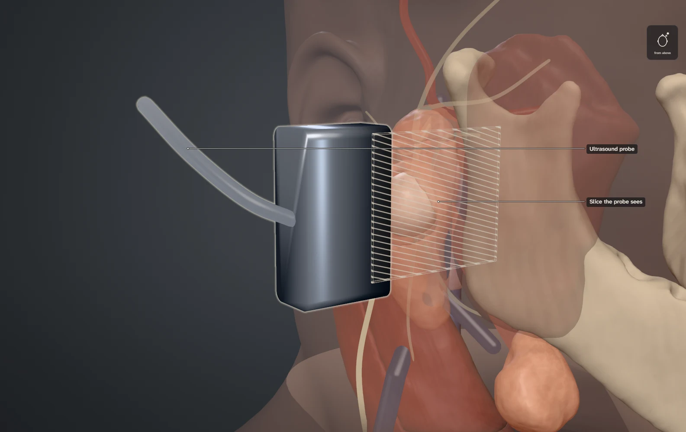
The first scan is usually ultrasound: a hand-held probe pressed on the skin that shows a thin slice of the tissue beneath it as it moves. It works in real time and uses no radiation. [ultrasound-role] It shows a lump in the outer part of the gland well, but the deep part of the gland lies under the jawbone and is hard to see. [ultrasound-role]
The probe is drawn as an instrument, in grey. The outlined slice is the plane the probe looks along; it is drawn as an outline because the atlas does not show an ultrasound picture.
The view is from in front of the cheek and a little to the side, so that the outlined slice can be seen face-on.
[framed figures, claim ultrasound-role]
Scene description (screen readers, static figure): The skin is faded to an outline. A small hand-held probe rests on the cheek over the tumour, and a thin, flat, outlined slice of tissue extends down from it through the skin, the outer part of the gland and the tumour, which it cuts across.
Checklist items
| Area | Statement | Compared against | Evidence | Self-review | Clinical |
|---|
| Finding out | Imaging is represented by the donor's normal CT slice with the tumour drawn as an outline, an ultrasound probe with its imaging plane as an outline, and a needle; no scan of a tumour is shown. | Lee 2008; Martino 2020; Brennan 2012; Christe 2011; Liu 2016; Wang 2022; Kim 2018 | apps/site/public/assets/imaging/ct-axial.png | limit: The abstracts give rates and roles, not technique; the instruments are placed for illustration. No ultrasound or MRI picture is drawn. | pending |
Claims
ultrasound-role standard-principle sources checked clinical review: pending
Essentials: Ultrasound is usually the first scan for a lump in the outer part of the parotid. It works in real time, uses no radiation and can guide the needle, but it sees the deep part of the gland poorly.
Anatomy: For lesions in the superficial parotid, ultrasound is described as an ideal tool for initial assessment. The deep lobe is only partly visible because the jawbone lies over it, so a mass whose deep edge cannot be seen on ultrasound raises the question of deep-lobe extension.
Clinical: In 37 patients with needle-confirmed benign parotid tumours who had ultrasound and also CT or MRI, 35 (95%) had a clearly outlined superficial-lobe mass on ultrasound and the cross-sectional scan added nothing; in two the deep margin could not be seen on ultrasound and MRI confirmed deep extension.
Superficial-lobe masses clearly outlined on ultrasound with no added information from CT or MRI: 95 %; Patients with needle-confirmed benign parotid tumours (11 to 45 mm, mean 22 mm; three with bilateral Warthin tumours) who had both ultrasound and CT or MRI, 35 of 37; Single-centre series; the abstract does not state whether data were collected prospectively
Limitations: Two narrative reviews and one small single-centre series; the series enrolled only tumours already confirmed as benign by needle and does not show what ultrasound alone would have missed. Ultrasound depends on the operator, and practice differs between centres. The atlas draws the probe and a plane outline, not an ultrasound picture.
- Lee YY, Wong KT, King AD et al. 2008. Imaging of salivary gland tumours. Eur J Radiol. narrative-review [active], Abstract link
- Martino M, Fodor D, Fresilli D et al. 2020. Narrative review of multiparametric ultrasound in parotid gland evaluation. Gland Surg. narrative-review [active], Abstract link
- Brennan PA, Herd MK, Howlett DC et al. 2012. Is ultrasound alone sufficient for imaging superficial lobe benign parotid tumours before surgery?. Br J Oral Maxillofac Surg. case-series [active], Abstract link
- University of Iowa Department of Otolaryngology . Parotidectomy with Facial Nerve Dissection. Iowa Head and Neck Protocols. institutional-protocol [active] (indirect), Preoperative preparation: evaluation link
15. A cross-section: CT and MRI Finding out what it is
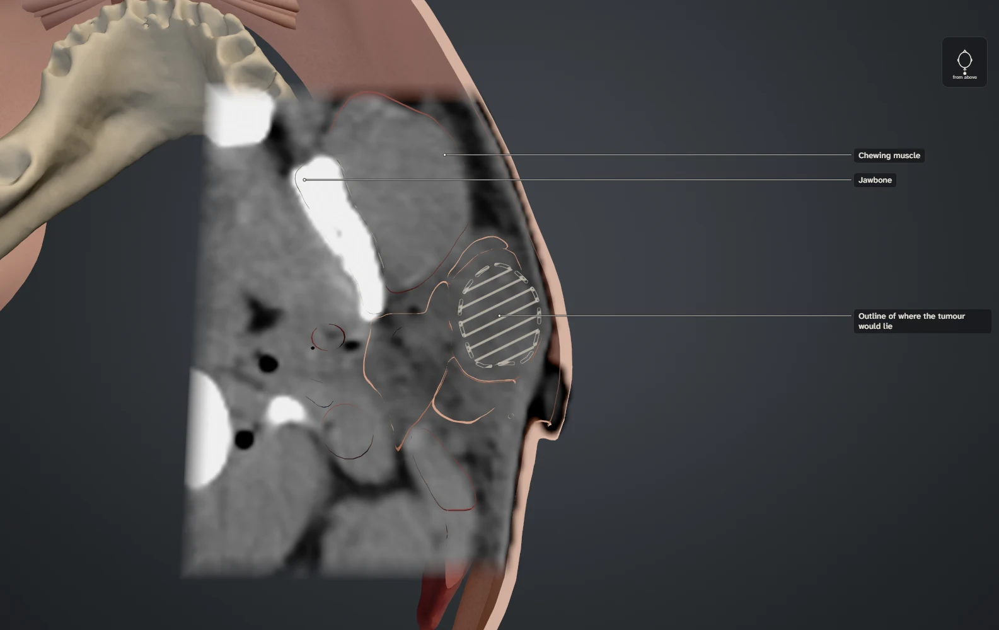
A CT or MRI scan is used when the lump may reach the deep part of the gland or when cancer is suspected. It shows how far the lump goes and what it touches. [imaging-role] On MRI, a dark signal on the T2 pictures or poorly outlined edges point toward cancer. [imaging-role]
The grey picture is a real CT slice from the donor this model is built from, at the level of the tumour. The donor had no tumour, so the tumour is drawn on the slice as a dashed outline, never as a scan. The rest of the cut is plain because the model holds only the structures around the parotid.
The view is from above, with the face toward the top of the picture, because a scan is a slice seen along the body.
[framed figures, claim imaging-role]
Scene description (screen readers, static figure): Seen from above, the head is cut flat at the level of the tumour. On the cut, a grey picture of a real CT slice fills the right side of the face, with the jawbone bright white. A dashed, hatched outline marks where the tumour would lie, just in front of the ear on the outer part of the gland.
Checklist items
| Area | Statement | Compared against | Evidence | Self-review | Clinical |
|---|
| Finding out | Imaging is represented by the donor's normal CT slice with the tumour drawn as an outline, an ultrasound probe with its imaging plane as an outline, and a needle; no scan of a tumour is shown. | Lee 2008; Martino 2020; Brennan 2012; Christe 2011; Liu 2016; Wang 2022; Kim 2018 | apps/site/public/assets/imaging/ct-axial.png | limit: The abstracts give rates and roles, not technique; the instruments are placed for illustration. No ultrasound or MRI picture is drawn. | pending |
Claims
imaging-role standard-principle sources checked clinical review: pending
Essentials: A CT or MRI scan is used when the lump may reach the deep part of the gland or when cancer is suspected, to show how far it goes and what it touches.
Anatomy: Imaging defines whether a mass is inside the gland or outside it, looks for features of cancer, and checks for spread. For deep-lobe lesions MRI and CT are the modalities of choice. On MRI, a dark signal on T2-weighted pictures and poorly outlined margins point toward malignancy.
Clinical: In 84 consecutive patients with parotid tumours who had MRI before surgery (57 benign, 27 malignant), T2 hypointensity, ill-defined margins, diffuse growth, infiltration of subcutaneous tissue and lymph node enlargement were each associated with malignant histology (P between .001 and .048).
Patients with parotid tumours who had MRI before surgery: 84 count; Consecutive patients with parotid gland tumours at one university hospital (median age 56 years, range 9 to 85); 29 pleomorphic adenomas, 17 Warthin tumours, 27 malignant tumours; Prospectively included, retrospectively analysed single-centre series
Limitations: The MRI series is a single centre with a mixed set of tumour types, of which 29 of 84 were pleomorphic adenomas; its P values show association with malignancy, not predictive accuracy for an individual patient. The cross-section drawn in the atlas is the donor's own normal CT, with the tumour added as an outline: it shows where such a scan cuts, not what a tumour looks like on it.
- Lee YY, Wong KT, King AD et al. 2008. Imaging of salivary gland tumours. Eur J Radiol. narrative-review [active], Abstract link
- Christe A, Waldherr C, Hallett R et al. 2011. MR imaging of parotid tumors: typical lesion characteristics in MR imaging improve discrimination between benign and malignant disease. AJNR Am J Neuroradiol. case-series [active], Abstract, Results and Conclusions link
- Brennan PA, Herd MK, Howlett DC et al. 2012. Is ultrasound alone sufficient for imaging superficial lobe benign parotid tumours before surgery?. Br J Oral Maxillofac Surg. case-series [active] (indirect), Abstract link
- University of Iowa Department of Otolaryngology . Parotidectomy with Facial Nerve Dissection. Iowa Head and Neck Protocols. institutional-protocol [active] (indirect), Preoperative preparation: evaluation link
16. A sample: the needle test Finding out what it is
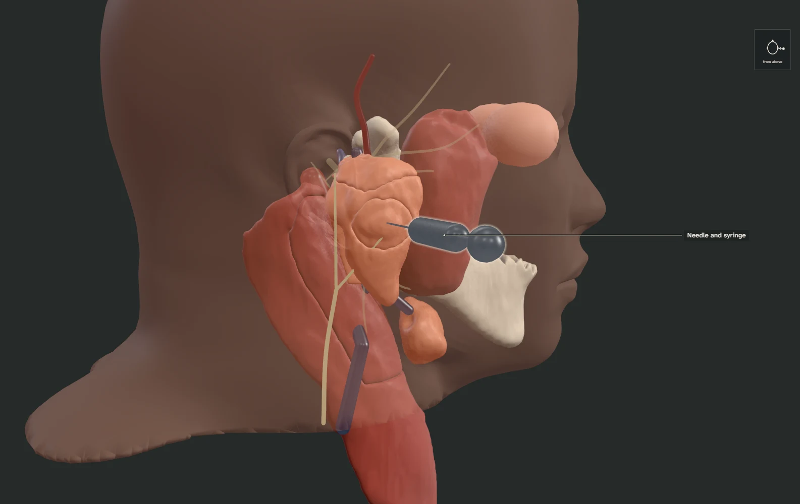
A thin needle passed into the lump draws out a few cells for a pathologist; ultrasound can guide it. A wider needle can take a small core of tissue instead. [fna-accuracy] The result usually separates cancer from non-cancer, but it is not perfect: it misses some cancers and sometimes cannot give an answer. [fna-accuracy]
The needle and syringe are drawn as instruments, in grey, and are not to scale for a real procedure.
[framed figures, claim fna-accuracy]
[framed figures, claim fna-accuracy]
Scene description (screen readers, static figure): The skin is faded to an outline. A thin needle on a syringe passes through the cheek into the tumour, ending just inside it.
Checklist items
| Area | Statement | Compared against | Evidence | Self-review | Clinical |
|---|
| Finding out | Imaging is represented by the donor's normal CT slice with the tumour drawn as an outline, an ultrasound probe with its imaging plane as an outline, and a needle; no scan of a tumour is shown. | Lee 2008; Martino 2020; Brennan 2012; Christe 2011; Liu 2016; Wang 2022; Kim 2018 | apps/site/public/assets/imaging/ct-axial.png | limit: The abstracts give rates and roles, not technique; the instruments are placed for illustration. No ultrasound or MRI picture is drawn. | pending |
Claims
fna-accuracy comparative-evidence sources checked clinical review: pending
Essentials: A fine needle can take a few cells from the lump. The result usually separates cancer from non-cancer, but it is not perfect: it misses some cancers and sometimes cannot give an answer.
Anatomy: In fine-needle aspiration a thin needle is passed through the skin into the lump and a few cells are drawn out for a pathologist; ultrasound can guide it. A wider needle can take a small core of tissue instead (core needle biopsy).
Clinical: In prospective studies pooled in one review, fine-needle aspiration had a sensitivity of 88.2% and a specificity of 99.5% for telling malignant from benign parotid lesions; about 5% of results were nondiagnostic and about 15% indeterminate. A pooled analysis of reports using the Milan system found a sensitivity of 88.0% and a specificity of 98.5% for salivary glands. Pooled ultrasound-guided core needle biopsy had a sensitivity of 94% and a specificity of 98%, with seven haematomas and no tumour seeding in 1,315 procedures.
Sensitivity of fine-needle aspiration for malignancy: 88.2 % (95% CI 50.9–98.2); Patients with a parotid mass who had both fine-needle aspiration and surgical excision, prospective-study subgroup, prospective subgroup of 63 studies (5,647 patients overall); Systematic review and meta-analysis, two-level mixed logistic regression
Specificity of fine-needle aspiration for malignancy: 99.5 % (95% CI 96–99.9); Patients with a parotid mass who had both fine-needle aspiration and surgical excision, prospective-study subgroup, prospective subgroup of 63 studies (5,647 patients overall); Systematic review and meta-analysis, two-level mixed logistic regression
Probability of a nondiagnostic result: 5.3 % (95% CI 3–7.5); Patients with a parotid mass who had both fine-needle aspiration and surgical excision (the abstract does not say whether this estimate is for the prospective subgroup), 63 studies, 5,647 patients; Systematic review and meta-analysis
Probability of an indeterminate result: 14.7 % (95% CI 10.6–18.8); Patients with a parotid mass who had both fine-needle aspiration and surgical excision (the abstract does not say whether this estimate is for the prospective subgroup), 63 studies, 5,647 patients; Systematic review and meta-analysis
Sensitivity of Milan-system fine-needle aspiration for malignancy: 88 %; Salivary gland aspirations reported with the Milan system since 2018 (all salivary glands, not the parotid alone), 35 studies, 10,706 aspirations (7,168 with histology); Systematic review and meta-analysis of cohort studies
Specificity of Milan-system fine-needle aspiration for malignancy: 98.5 %; Salivary gland aspirations reported with the Milan system since 2018 (all salivary glands, not the parotid alone), 35 studies, 10,706 aspirations (7,168 with histology); Systematic review and meta-analysis of cohort studies
Sensitivity of ultrasound-guided core needle biopsy: 94 % (95% CI 92–96); Patients having ultrasound-guided core needle biopsy of salivary gland lesions (all salivary glands), 10 studies; Meta-analysis of observational studies, random-effects
Specificity of ultrasound-guided core needle biopsy: 98 % (95% CI 97–99); Patients having ultrasound-guided core needle biopsy of salivary gland lesions (all salivary glands), 10 studies; Meta-analysis of observational studies, random-effects
Limitations: Sensitivity and specificity here are for separating malignant from benign, not for naming the tumour type, and the abstracts do not give figures for pleomorphic adenoma alone. The prospective-subgroup sensitivity has a very wide interval (50.9% to 98.2%) and most of the pooled analyses were heterogeneous (I-squared above 70%). The Milan and core-biopsy figures describe all salivary glands, not the parotid alone. Results depend on the sampling, the pathologist and the centre.
- Liu CC, Jethwa AR, Khariwala SS et al. 2016. Sensitivity, Specificity, and Posttest Probability of Parotid Fine-Needle Aspiration: A Systematic Review and Meta-analysis. Otolaryngol Head Neck Surg. meta-analysis [active], Abstract, Results and Conclusion link
- Wang Z, Zhao H, Guo H et al. 2022. Application of the Milan System for Reporting Salivary Gland Cytopathology: A systematic review and meta-analysis. Cancer Cytopathol. meta-analysis [active], Abstract, Results link
- Kim HJ, Kim JS 2018. Ultrasound-guided core needle biopsy in salivary glands: A meta-analysis. Laryngoscope. meta-analysis [active], Abstract, Results link
- Lee YY, Wong KT, King AD et al. 2008. Imaging of salivary gland tumours. Eur J Radiol. narrative-review [active] (indirect), Abstract link
17. Reading the result Finding out what it is
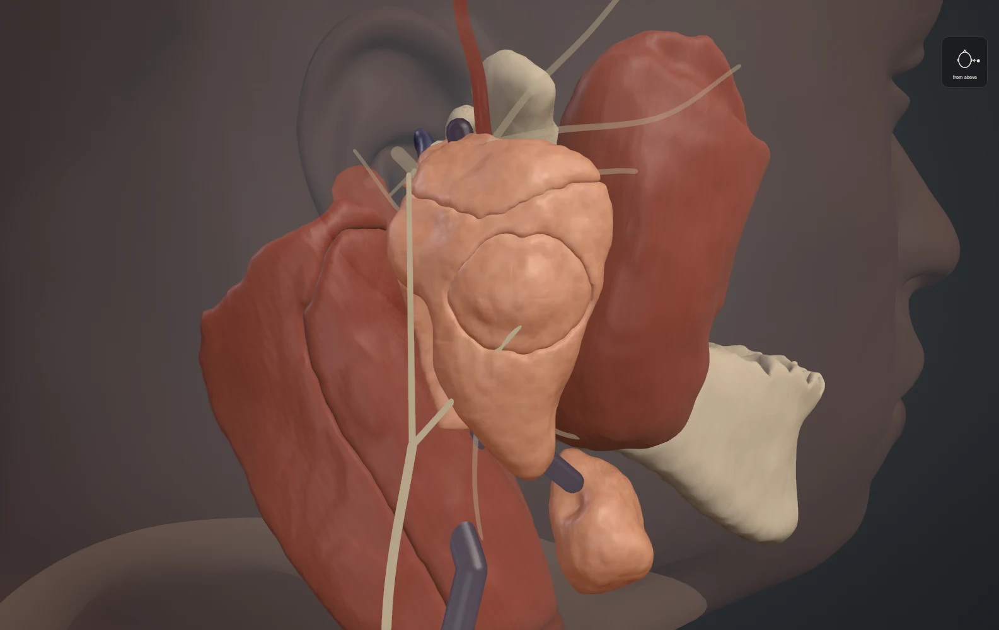
Needle results are sorted into standard tiers, and each tier carries its own chance of cancer: low when the result is a benign tumour, high when it is suspicious or malignant. [milan-categories]
[inset: Milan system: how often each result proved to be cancer]
[framed figures, claim milan-categories]
The needle test cannot name every tumour: a result may be nondiagnostic or indeterminate, which in one pooled review happened in about 5% and about 15% of aspirations. [fna-accuracy]
Scene description (screen readers, static figure): The needle is gone and the tumour sits in the outer part of the gland, as before. A table beside the text lists the standard result categories with the chance of cancer for each.
Checklist items
| Area | Statement | Compared against | Evidence | Self-review | Clinical |
|---|
| Finding out | Imaging is represented by the donor's normal CT slice with the tumour drawn as an outline, an ultrasound probe with its imaging plane as an outline, and a needle; no scan of a tumour is shown. | Lee 2008; Martino 2020; Brennan 2012; Christe 2011; Liu 2016; Wang 2022; Kim 2018 | apps/site/public/assets/imaging/ct-axial.png | limit: The abstracts give rates and roles, not technique; the instruments are placed for illustration. No ultrasound or MRI picture is drawn. | pending |
Claims
milan-categories comparative-evidence sources checked clinical review: pending
Essentials: Needle-test results are sorted into standard tiers, and each tier carries its own chance of cancer: low when the result is a benign tumour, high when it is suspicious or malignant.
Anatomy: The Milan System for Reporting Salivary Gland Cytopathology puts every needle result in a diagnostic category. The proportion of tumours in each category that proved malignant on histology is its risk of malignancy.
Clinical: In 35 studies of salivary gland aspirates reported with the Milan system, the risk of malignancy was 11.4% for nondiagnostic, 10.9% for nonneoplastic, 30.5% for atypia of undetermined significance, 2.8% for neoplasm-benign, 37.7% for salivary gland neoplasm of uncertain malignant potential, 83.8% for suspicious for malignancy and 97.7% for malignant. The suspicious-for-malignancy value was significantly higher than the reference value.
Risk of malignancy, nondiagnostic: 11.4 %; Salivary gland aspirates with histologic follow-up (7,168 of 10,706), all salivary glands; Systematic review and meta-analysis of 35 cohort studies
Risk of malignancy, nonneoplastic: 10.9 %; Salivary gland aspirates with histologic follow-up (7,168 of 10,706), all salivary glands; Systematic review and meta-analysis of 35 cohort studies
Risk of malignancy, atypia of undetermined significance: 30.5 %; Salivary gland aspirates with histologic follow-up (7,168 of 10,706), all salivary glands; Systematic review and meta-analysis of 35 cohort studies
Risk of malignancy, neoplasm-benign: 2.8 %; Salivary gland aspirates with histologic follow-up (7,168 of 10,706), all salivary glands; Systematic review and meta-analysis of 35 cohort studies
Risk of malignancy, salivary gland neoplasm of uncertain malignant potential: 37.7 %; Salivary gland aspirates with histologic follow-up (7,168 of 10,706), all salivary glands; Systematic review and meta-analysis of 35 cohort studies
Risk of malignancy, suspicious for malignancy: 83.8 %; Salivary gland aspirates with histologic follow-up (7,168 of 10,706), all salivary glands; Systematic review and meta-analysis of 35 cohort studies
Risk of malignancy, malignant: 97.7 %; Salivary gland aspirates with histologic follow-up (7,168 of 10,706), all salivary glands; Systematic review and meta-analysis of 35 cohort studies
Limitations: The pooled figures describe all salivary glands, not the parotid alone, and only aspirates that went on to surgery have histology, which tilts the sample toward lesions the surgeon already suspected. The abstract does not give confidence intervals for the individual categories.
- Wang Z, Zhao H, Guo H et al. 2022. Application of the Milan System for Reporting Salivary Gland Cytopathology: A systematic review and meta-analysis. Cancer Cytopathol. meta-analysis [active], Abstract, Results and Conclusions link
fna-accuracy comparative-evidence sources checked clinical review: pending
Essentials: A fine needle can take a few cells from the lump. The result usually separates cancer from non-cancer, but it is not perfect: it misses some cancers and sometimes cannot give an answer.
Anatomy: In fine-needle aspiration a thin needle is passed through the skin into the lump and a few cells are drawn out for a pathologist; ultrasound can guide it. A wider needle can take a small core of tissue instead (core needle biopsy).
Clinical: In prospective studies pooled in one review, fine-needle aspiration had a sensitivity of 88.2% and a specificity of 99.5% for telling malignant from benign parotid lesions; about 5% of results were nondiagnostic and about 15% indeterminate. A pooled analysis of reports using the Milan system found a sensitivity of 88.0% and a specificity of 98.5% for salivary glands. Pooled ultrasound-guided core needle biopsy had a sensitivity of 94% and a specificity of 98%, with seven haematomas and no tumour seeding in 1,315 procedures.
Sensitivity of fine-needle aspiration for malignancy: 88.2 % (95% CI 50.9–98.2); Patients with a parotid mass who had both fine-needle aspiration and surgical excision, prospective-study subgroup, prospective subgroup of 63 studies (5,647 patients overall); Systematic review and meta-analysis, two-level mixed logistic regression
Specificity of fine-needle aspiration for malignancy: 99.5 % (95% CI 96–99.9); Patients with a parotid mass who had both fine-needle aspiration and surgical excision, prospective-study subgroup, prospective subgroup of 63 studies (5,647 patients overall); Systematic review and meta-analysis, two-level mixed logistic regression
Probability of a nondiagnostic result: 5.3 % (95% CI 3–7.5); Patients with a parotid mass who had both fine-needle aspiration and surgical excision (the abstract does not say whether this estimate is for the prospective subgroup), 63 studies, 5,647 patients; Systematic review and meta-analysis
Probability of an indeterminate result: 14.7 % (95% CI 10.6–18.8); Patients with a parotid mass who had both fine-needle aspiration and surgical excision (the abstract does not say whether this estimate is for the prospective subgroup), 63 studies, 5,647 patients; Systematic review and meta-analysis
Sensitivity of Milan-system fine-needle aspiration for malignancy: 88 %; Salivary gland aspirations reported with the Milan system since 2018 (all salivary glands, not the parotid alone), 35 studies, 10,706 aspirations (7,168 with histology); Systematic review and meta-analysis of cohort studies
Specificity of Milan-system fine-needle aspiration for malignancy: 98.5 %; Salivary gland aspirations reported with the Milan system since 2018 (all salivary glands, not the parotid alone), 35 studies, 10,706 aspirations (7,168 with histology); Systematic review and meta-analysis of cohort studies
Sensitivity of ultrasound-guided core needle biopsy: 94 % (95% CI 92–96); Patients having ultrasound-guided core needle biopsy of salivary gland lesions (all salivary glands), 10 studies; Meta-analysis of observational studies, random-effects
Specificity of ultrasound-guided core needle biopsy: 98 % (95% CI 97–99); Patients having ultrasound-guided core needle biopsy of salivary gland lesions (all salivary glands), 10 studies; Meta-analysis of observational studies, random-effects
Limitations: Sensitivity and specificity here are for separating malignant from benign, not for naming the tumour type, and the abstracts do not give figures for pleomorphic adenoma alone. The prospective-subgroup sensitivity has a very wide interval (50.9% to 98.2%) and most of the pooled analyses were heterogeneous (I-squared above 70%). The Milan and core-biopsy figures describe all salivary glands, not the parotid alone. Results depend on the sampling, the pathologist and the centre.
- Liu CC, Jethwa AR, Khariwala SS et al. 2016. Sensitivity, Specificity, and Posttest Probability of Parotid Fine-Needle Aspiration: A Systematic Review and Meta-analysis. Otolaryngol Head Neck Surg. meta-analysis [active], Abstract, Results and Conclusion link
- Wang Z, Zhao H, Guo H et al. 2022. Application of the Milan System for Reporting Salivary Gland Cytopathology: A systematic review and meta-analysis. Cancer Cytopathol. meta-analysis [active], Abstract, Results link
- Kim HJ, Kim JS 2018. Ultrasound-guided core needle biopsy in salivary glands: A meta-analysis. Laryngoscope. meta-analysis [active], Abstract, Results link
- Lee YY, Wong KT, King AD et al. 2008. Imaging of salivary gland tumours. Eur J Radiol. narrative-review [active] (indirect), Abstract link
18. Five parts of the gland Choosing the operation
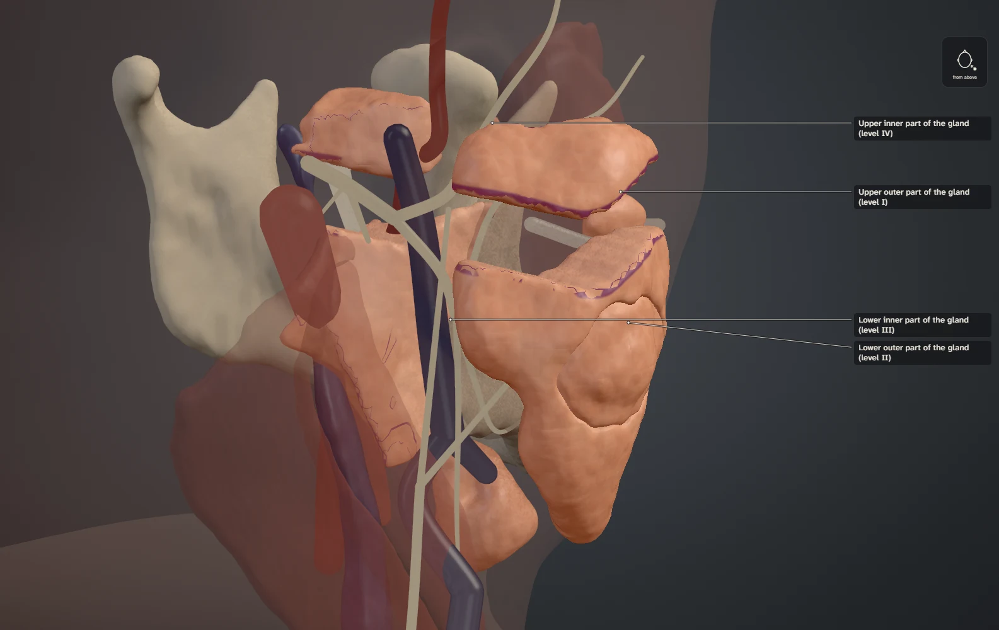
Surgeons divide the gland into five parts, called levels, so that an operation can be described by what it removes. [esgs-five-levels] The plane of the facial nerve separates outer from inner, and the point where the trunk divides separates upper from lower. [esgs-five-levels] A fifth, small separate lobe sits in front of the gland in about a third of people. [accessory-parotid-prevalence]
The lower outer part, level II, is the largest. [esgs-level-weights] The violet lines mark the boundaries as a surgeon might ink them on the gland.
The boundary between upper and lower follows the territories of the two divisions of the nerve. [esgs-five-levels] In this model it passes through the cheek branch. The model's levels hold different shares of the gland from the published weights, which are reported rather than adjusted:
[framed figures, claim esgs-level-weights]
Scene description (screen readers, static figure): The skin is a faint outline and the gland is see-through, seen from behind and to the side. Violet ink lines divide it into an upper and a lower part along the line where the nerve divides, and into an outer and an inner part along the plane of the nerve. The lower outer part is the largest. A small separate nodule of gland lies in front on the chewing muscle, above the duct.
Checklist items
| Area | Statement | Compared against | Evidence | Self-review | Clinical |
|---|
| Choosing | The gland is divided into the five ESGS levels (I-IV of the body and the accessory lobule) with the extracapsular cuff around the tumour, and each operation takes the pieces its definition names. | Quer 2016 (ESGS classification; full text unavailable); Pujol-Olmo 2020 level weights; Zanghì 2024 definitions | docs/qc/m1-anatomy/esgs_levels.png
docs/qc/m1-anatomy/checks.json | limit: Level boundaries follow the nerve plane and a surface through the buccal branch, so the level shares (I 8%, II 51%, III 30%, IV 10%) differ from the published ones. Reported, not tuned. | pending |
Claims
esgs-five-levels standard-principle sources checked clinical review: pending
Essentials: Surgeons divide the gland into five parts, called levels, so that an operation can be described by what it removes.
Anatomy: The European Salivary Gland Society divides the parotid into five levels: I (lateral superior), II (lateral inferior), III (deep inferior), IV (deep superior) and V (accessory). Lateral and deep are set by the plane of the facial nerve; superior and inferior by where the main trunk divides into its temporofacial and cervicofacial branches.
Clinical: Parotidectomies are classified by the levels removed and the extra-parotid structures ablated. Extracapsular dissection is classed separately: it avoids facial nerve dissection and removes less than one level, so level I or II is recorded only to show where the tumour lay.
Limitations: A consensus classification, not a measurement. The model places the superior/inferior boundary through the buccal branch between the temporofacial and cervicofacial territories; the primary paper’s full text was not available, so this boundary is the project’s reading of the secondary description.
- Quer M, Guntinas-Lichius O, Marchal F et al. 2016. Classification of parotidectomies: a proposal of the European Salivary Gland Society. Eur Arch Otorhinolaryngol. consensus [active], Abstract link
- Zanghì A, Cavallaro A, Marchi M et al. 2024. Surgical management of benign tumors of the parotid gland: the advantages of extracapsular dissection compared to traditional surgical techniques. Front Surg. narrative-review [active], Section 2, Surgical techniques link
accessory-parotid-prevalence established-anatomy sources checked clinical review: pending
Essentials: Some people have a small separate piece of gland tissue in front of the main parotid, resting on the duct.
Anatomy: An accessory parotid gland, separate from the main gland, is a common variant. When present it can complicate parotidectomy and can be the site of tumours.
Clinical: Pooled prevalence of an accessory parotid gland was 32.1% (95% CI 21.2–44.0), higher in cadaveric studies (35.8%) than on CT (21.5%); when present it was mostly unilateral (77.8%). In 19 dissected glands it formed ESGS level V in 9 and under 5% of the gland’s weight.
Pooled prevalence of an accessory parotid gland: 32.1 % (95% CI 21.2–44); Cadaveric and CT studies from several regions (more from Asia than North America), 13 articles, 3115 subjects; Systematic review and meta-analysis
Level V (accessory) found in dissection: 47.5 %; Human anatomical specimens, 9 of 19 glands; Anatomical dissection study
Disagreement: Cadaveric studies pooled to 35.8% and CT studies to 21.5%.
Limitations: The authors note a wide discrepancy in the literature on prevalence; imaging finds fewer than dissection. The accessory lobule in the model is authored from these figures, not segmented from the scan.
- Rosa MA, Łazarz DP, Pękala JR et al. 2020. The Accessory Parotid Gland and its Clinical Significance. J Craniofac Surg. meta-analysis [active], Abstract link
- Pujol-Olmo A, Mirapeix RM, Sañudo-Tejero JR et al. 2020. Description and relationships of the parotid gland levels proposed by the European Salivary Gland Society staging system: an anatomical study. Surg Radiol Anat. anatomical-study [active], Abstract link
esgs-level-weights established-anatomy sources checked clinical review: pending
Essentials: The lower outer part of the gland is the largest of the five.
Anatomy: By weight the lower outer part (level II) is the heaviest level of the gland, followed by levels I and III, which are similar; the upper inner part (level IV) is the lightest of the four body levels.
Clinical: In 19 dissected glands level II made up 41–47% of the weight, levels I and III 20–22% each, level IV 8–10%, and level V, when present, under 5%.
Level II share of gland weight: % (range 41–47); Human anatomical specimens, 19 specimens; Anatomical dissection study
Levels I and III, each: % (range 20–22); Human anatomical specimens, 19 specimens; Anatomical dissection study
Level IV share of gland weight: % (range 8–10); Human anatomical specimens, 19 specimens; Anatomical dissection study
Limitations: Weights of one study of 19 specimens; the ranges depend on whether level V was present. The levels in the model are cut by the project’s own boundaries, and its volume shares differ from these figures (reported in the QC log, not tuned).
- Pujol-Olmo A, Mirapeix RM, Sañudo-Tejero JR et al. 2020. Description and relationships of the parotid gland levels proposed by the European Salivary Gland Society staging system: an anatomical study. Surg Radiol Anat. anatomical-study [active], Results link
19. Extracapsular dissection Choosing the operation
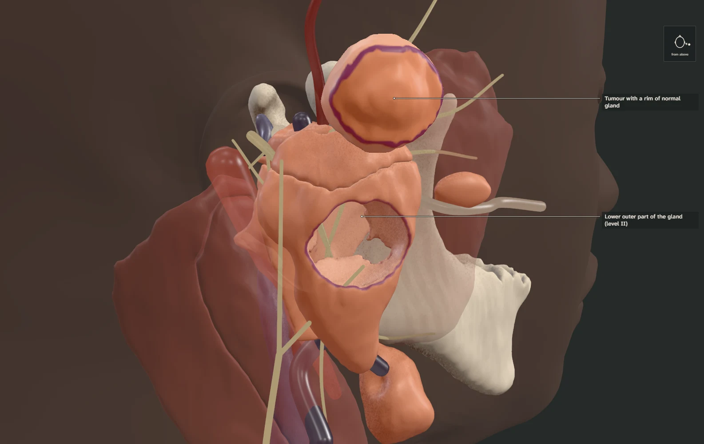
Extracapsular dissection takes the tumour out with a thin rim of normal gland, and does not search for the facial nerve. [ecd-definition] The violet line is the margin; the piece raised above the gland is what comes out.
For small, mobile tumours of the outer lobe, studies find similar recurrence after it, with less temporary facial weakness and less Frey syndrome than after the larger operation. [ecd-vs-superficial-outcomes] It removes less than one level of the gland. [ecd-definition]
Scene description (screen readers, static figure): The skin is a faint outline. A violet line rings the tumour on the outer surface of the gland. The tumour and a thin rim of gland around it have been lifted a little way out of a bowl-shaped hollow in the lower outer part of the gland. The nerve is not exposed: the hollow lies wholly on the outer side of it.
Checklist items
| Area | Statement | Compared against | Evidence | Self-review | Clinical |
|---|
| Choosing | The gland is divided into the five ESGS levels (I-IV of the body and the accessory lobule) with the extracapsular cuff around the tumour, and each operation takes the pieces its definition names. | Quer 2016 (ESGS classification; full text unavailable); Pujol-Olmo 2020 level weights; Zanghì 2024 definitions | docs/qc/m1-anatomy/esgs_levels.png
docs/qc/m1-anatomy/checks.json | limit: Level boundaries follow the nerve plane and a surface through the buccal branch, so the level shares (I 8%, II 51%, III 30%, IV 10%) differ from the published ones. Reported, not tuned. | pending |
Claims
ecd-definition standard-principle sources checked clinical review: pending
Essentials: Extracapsular dissection takes out the tumour with a thin rim of normal gland, without searching for the facial nerve.
Anatomy: Extracapsular dissection is classed apart from formal parotidectomy: the facial nerve is not dissected, and less than one level of the gland is removed.
Clinical: In the ESGS classification extracapsular dissection avoids facial nerve dissection and removes less than one level, so level I or II is recorded only to show where the tumour lay. It has been described as a minimal-margin operation.
Limitations: Definitions follow the ESGS classification; individual surgeons use the term more or less strictly, and the width of the rim is not standardised (the cuff drawn here is illustrative).
- Quer M, Guntinas-Lichius O, Marchal F et al. 2016. Classification of parotidectomies: a proposal of the European Salivary Gland Society. Eur Arch Otorhinolaryngol. consensus [active], Abstract link
- Zanghì A, Cavallaro A, Marchi M et al. 2024. Surgical management of benign tumors of the parotid gland: the advantages of extracapsular dissection compared to traditional surgical techniques. Front Surg. narrative-review [active], Section 2 link
- Zbären P, Vander Poorten V, Witt RL et al. 2013. Pleomorphic adenoma of the parotid: formal parotidectomy or limited surgery?. Am J Surg. narrative-review [active], Conclusions link
ecd-vs-superficial-outcomes comparative-evidence sources checked clinical review: pending
Essentials: For small, mobile tumours in the outer lobe, studies find similar recurrence after the smaller operation, with less temporary facial weakness and less Frey syndrome.
Anatomy: In pooled analyses of pleomorphic adenoma, recurrence was similar after extracapsular dissection and superficial parotidectomy; temporary facial weakness and Frey syndrome were less frequent after extracapsular dissection, and permanent weakness was similar.
Clinical: Single-arm pooled rates in 2,507 patients: recurrence 3% after extracapsular dissection and 4% after superficial parotidectomy; temporary facial weakness 5% and 26%; permanent weakness 3% and 4%; Frey syndrome 4% and 13%. An earlier meta-analysis of benign parotid tumours found temporary weakness in 8.0% and 20.4% and Frey syndrome in 4.5% and 26.1%.
Recurrence after extracapsular dissection: 3 % (95% CI 2–9); Patients with a pathological diagnosis of pleomorphic adenoma, 21 mostly retrospective studies, 37 of 1,359; Systematic review, single-arm pooled proportions
Recurrence after superficial parotidectomy: 4 % (95% CI 3–6); Patients with a pathological diagnosis of pleomorphic adenoma, 21 mostly retrospective studies, 26 of 1,032; Systematic review, single-arm pooled proportions
Temporary facial weakness after extracapsular dissection: 5 % (95% CI 3–8); Patients with a pathological diagnosis of pleomorphic adenoma, 21 mostly retrospective studies, 70 of 1,208; Systematic review, single-arm pooled proportions
Temporary facial weakness after superficial parotidectomy: 26 % (95% CI 17–37); Patients with a pathological diagnosis of pleomorphic adenoma, 21 mostly retrospective studies, 256 of 785; Systematic review, single-arm pooled proportions
Permanent facial weakness after extracapsular dissection: 3 % (95% CI 2–4); Patients with a pathological diagnosis of pleomorphic adenoma, 21 mostly retrospective studies, 24 of 1,316; Systematic review, single-arm pooled proportions
Permanent facial weakness after superficial parotidectomy: 4 % (95% CI 2–5); Patients with a pathological diagnosis of pleomorphic adenoma, 21 mostly retrospective studies, 19 of 782; Systematic review, single-arm pooled proportions
Frey syndrome after extracapsular dissection: 4 % (95% CI 3–6); Patients with a pathological diagnosis of pleomorphic adenoma, 21 mostly retrospective studies, 25 of 941; Systematic review, single-arm pooled proportions
Frey syndrome after superficial parotidectomy: 13 % (95% CI 7–25); Patients with a pathological diagnosis of pleomorphic adenoma, 21 mostly retrospective studies, 77 of 462; Systematic review, single-arm pooled proportions
Temporary facial weakness after extracapsular dissection: 8 %; Solitary benign parotid tumours of mixed histology, 9 studies, 59 of 741; Systematic review with meta-analysis
Temporary facial weakness after superficial parotidectomy: 20.4 %; Solitary benign parotid tumours of mixed histology, 9 studies, 81 of 397; Systematic review with meta-analysis
Disagreement: Albergotti 2012 pooled mixed benign tumours and reports different rates from Salzano 2025, which pooled pleomorphic adenoma alone.
Limitations: The studies compared two groups chosen by surgeons, not randomised ones: the smaller operation went to smaller, more mobile, more superficial tumours. Salzano’s pooling treats each operation as its own single arm, found substantial heterogeneity and likely publication bias for some outcomes, and no included study stated how the operation was chosen. Some intervals in that paper do not contain their point estimates (for example intraoperative capsular rupture); only outcomes that are internally consistent are shown. These numbers do not apply to deep-lobe, large, recurrent or malignant tumours.
- Salzano G, Scocca V, Troise S et al. 2025. Pleomorphic Adenoma: Extracapsular Dissection vs. Superficial Parotidectomy-An Updated Systematic Review and Meta-Analysis. Med Sci (Basel). meta-analysis [active], Section 3.3; Section 4 link
- Albergotti WG, Nguyen SA, Zenk J et al. 2012. Extracapsular dissection for benign parotid tumors: a meta-analysis. Laryngoscope. meta-analysis [active], Abstract link
20. Partial superficial parotidectomy Choosing the operation
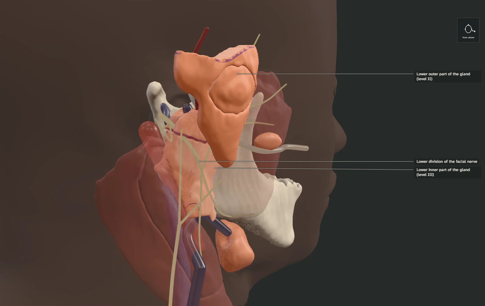
A partial superficial parotidectomy takes the tumour with a wider cuff of normal gland — here the whole lower outer level — and dissects the nerve branches near it, but leaves the rest of the outer lobe. [partial-superficial-definition]
In this model the tumour lies in level II, so level II is the piece shown lifted. One review would use it for tumours of the lower part of the gland that touch the main trunk. [partial-superficial-definition]
Scene description (screen readers, static figure): The lower outer part of the gland, with the tumour inside it, has been lifted clear. Where it lay, the branches of the nerve's lower division are exposed on the inner part of the gland. The upper outer part of the gland has been left in place, and the violet lines show the edges of the piece that comes out.
Checklist items
| Area | Statement | Compared against | Evidence | Self-review | Clinical |
|---|
| Choosing | The gland is divided into the five ESGS levels (I-IV of the body and the accessory lobule) with the extracapsular cuff around the tumour, and each operation takes the pieces its definition names. | Quer 2016 (ESGS classification; full text unavailable); Pujol-Olmo 2020 level weights; Zanghì 2024 definitions | docs/qc/m1-anatomy/esgs_levels.png
docs/qc/m1-anatomy/checks.json | limit: Level boundaries follow the nerve plane and a surface through the buccal branch, so the level shares (I 8%, II 51%, III 30%, IV 10%) differ from the published ones. Reported, not tuned. | pending |
Claims
partial-superficial-definition varies-by-surgeon sources checked clinical review: pending
Essentials: A partial superficial parotidectomy removes the tumour with a wider cuff of normal gland than extracapsular dissection, but not the whole outer lobe.
Anatomy: Partial superficial parotidectomy removes the tumour with a greater cuff of healthy parotid tissue than extracapsular dissection, and far less than a formal superficial parotidectomy; the facial nerve branches near the tumour are dissected.
Clinical: One review would use it for tumours of the caudal part of the gland (ESGS level II) that touch the main trunk, and for large (over 4 cm) caudal tumours that also touch the cervicofacial branch. Removing less healthy tissue than a formal parotidectomy may limit facial nerve dysfunction and Frey syndrome.
Limitations: Indications are an author’s recommendation from case series, not trial results; surgeons differ on where partial superficial parotidectomy ends and superficial parotidectomy begins.
- Zbären P, Vander Poorten V, Witt RL et al. 2013. Pleomorphic adenoma of the parotid: formal parotidectomy or limited surgery?. Am J Surg. narrative-review [active], Conclusions link
- Zanghì A, Cavallaro A, Marchi M et al. 2024. Surgical management of benign tumors of the parotid gland: the advantages of extracapsular dissection compared to traditional surgical techniques. Front Surg. narrative-review [active], Section 2 link
21. Superficial parotidectomy Choosing the operation
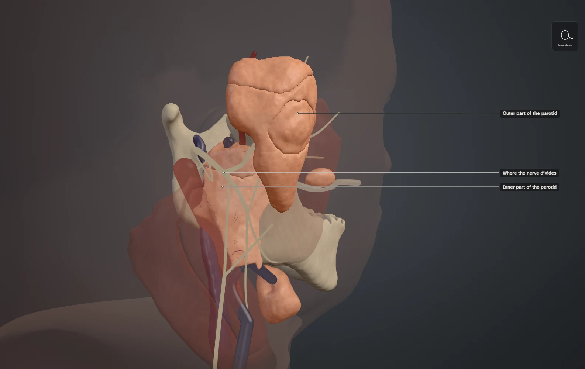
A superficial parotidectomy removes the whole outer lobe of the gland, the part that lies outside the facial nerve, with the nerve dissected throughout. [superficial-parotidectomy-definition]
It is typically kept for medium-sized tumours that touch both main divisions of the nerve. [superficial-parotidectomy-definition] The next chapter follows this operation step by step.
Scene description (screen readers, static figure): The whole outer part of the gland, both levels, with the tumour inside, has been lifted clear. The nerve now lies bare along the face of the inner part of the gland, from its trunk behind to its branches in front.
Checklist items
| Area | Statement | Compared against | Evidence | Self-review | Clinical |
|---|
| Choosing | The gland is divided into the five ESGS levels (I-IV of the body and the accessory lobule) with the extracapsular cuff around the tumour, and each operation takes the pieces its definition names. | Quer 2016 (ESGS classification; full text unavailable); Pujol-Olmo 2020 level weights; Zanghì 2024 definitions | docs/qc/m1-anatomy/esgs_levels.png
docs/qc/m1-anatomy/checks.json | limit: Level boundaries follow the nerve plane and a surface through the buccal branch, so the level shares (I 8%, II 51%, III 30%, IV 10%) differ from the published ones. Reported, not tuned. | pending |
Claims
superficial-parotidectomy-definition standard-principle sources checked clinical review: pending
Essentials: A superficial parotidectomy removes the whole outer lobe of the gland, the part that lies outside the facial nerve.
Anatomy: Superficial parotidectomy is excision of the entire lateral segment of the gland, superficial to the facial nerve (ESGS levels I and II), with the nerve dissected throughout.
Clinical: It is typically reserved for medium-sized tumours that contact both main divisions, and for large tumours of the cranial part (level I) that contact the temporal branch and reach the main trunk. It can also be used for any benign tumour of the superficial lobe when extracapsular dissection would not ensure complete excision.
Limitations: Indications are from one review’s description of practice; the choice depends on the tumour and the surgeon.
- Zanghì A, Cavallaro A, Marchi M et al. 2024. Surgical management of benign tumors of the parotid gland: the advantages of extracapsular dissection compared to traditional surgical techniques. Front Surg. narrative-review [active], Introduction; Section 2 link
- Quer M, Guntinas-Lichius O, Marchal F et al. 2016. Classification of parotidectomies: a proposal of the European Salivary Gland Society. Eur Arch Otorhinolaryngol. consensus [active], Abstract link
22. Total parotidectomy Choosing the operation
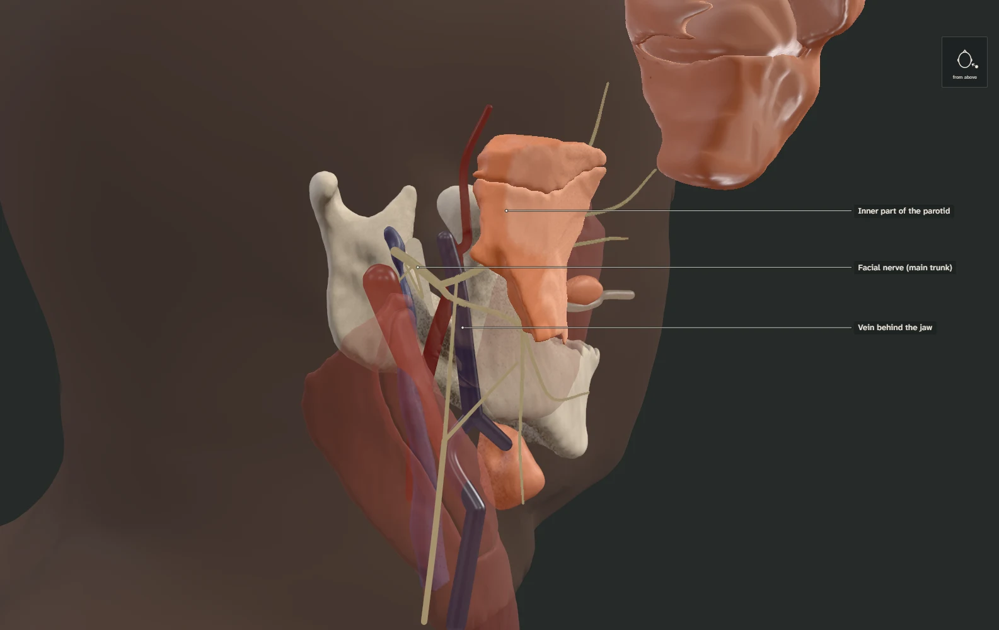
A total parotidectomy also removes the inner levels, working from beneath the nerve, which is kept. In benign disease it is usually kept for tumours that reach the inner part of the gland. [total-parotidectomy-definition]
Its main downsides are more temporary and permanent weakness of the face, Frey syndrome and a change in contour. [total-parotidectomy-definition] The way the inner part is delivered from beneath the nerve is drawn schematically here.
Scene description (screen readers, static figure): With the outer part of the gland already removed, the branches of the nerve have been lifted a little to one side and the inner part of the gland is being drawn out from underneath them. The nerve is kept intact; only the gland is removed. This step is drawn schematically.
Checklist items
| Area | Statement | Compared against | Evidence | Self-review | Clinical |
|---|
| Choosing | The gland is divided into the five ESGS levels (I-IV of the body and the accessory lobule) with the extracapsular cuff around the tumour, and each operation takes the pieces its definition names. | Quer 2016 (ESGS classification; full text unavailable); Pujol-Olmo 2020 level weights; Zanghì 2024 definitions | docs/qc/m1-anatomy/esgs_levels.png
docs/qc/m1-anatomy/checks.json | limit: Level boundaries follow the nerve plane and a surface through the buccal branch, so the level shares (I 8%, II 51%, III 30%, IV 10%) differ from the published ones. Reported, not tuned. | pending |
Claims
total-parotidectomy-definition standard-principle sources checked clinical review: pending
Essentials: A total parotidectomy removes both the outer and the inner parts of the gland while the nerve is kept; in benign disease it is kept for tumours that reach the inner part.
Anatomy: Total parotidectomy removes the superficial and deep lobes with the facial nerve preserved. In benign disease it is usually kept for deep-lobe tumours that contact the nerve, dumbbell tumours beneath the nerve, tumours of the superficial lobe that extend into the deep lobe, and multiple tumours.
Clinical: Its main downsides are more temporary and permanent facial nerve palsy, Frey syndrome and contour deformity. It is indicated for malignant tumours.
Limitations: A narrative review’s account of indications, not a measurement. In this atlas the delivery of the deep lobe from beneath the nerve is drawn schematically.
- Zanghì A, Cavallaro A, Marchi M et al. 2024. Surgical management of benign tumors of the parotid gland: the advantages of extracapsular dissection compared to traditional surgical techniques. Front Surg. narrative-review [active], Section 2 link
23. What moves the choice Choosing the operation
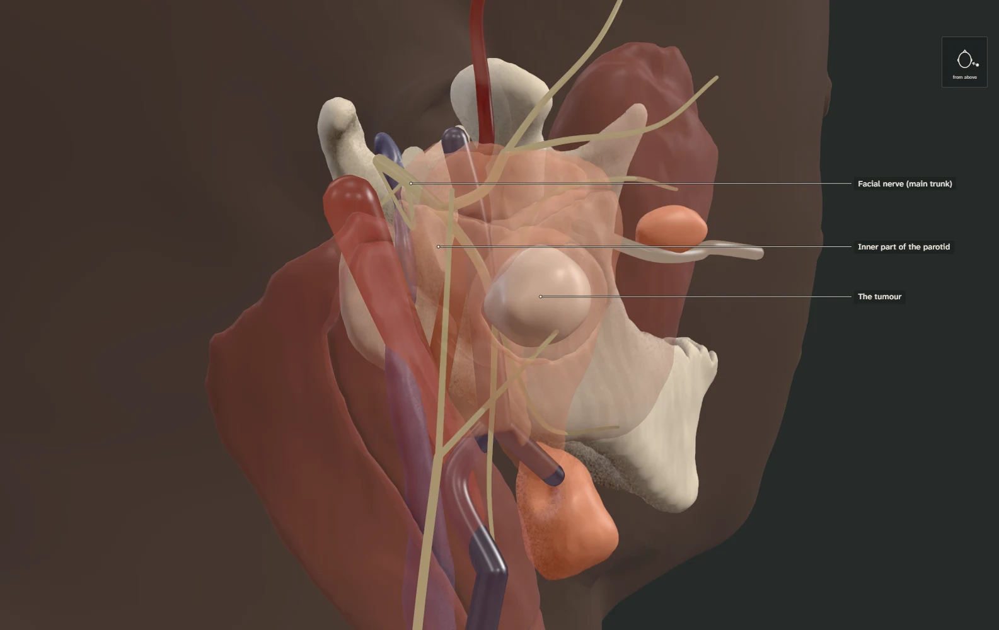
Which operation is chosen depends on the tumour's size, how freely it moves, how deep it lies and how close it is to the nerve's branches — and on the surgeon. [choice-factors] Reviews describe extracapsular dissection as an option for small, mobile tumours of the outer lobe, up to about 3 cm; larger tumours, and those that touch several branches, call for a wider operation. [choice-factors]
Tumours in the inner part of the gland are less common, and their operations carry more complications and more recurrence. [deep-lobe-pa-outcomes]
[framed figures, claim deep-lobe-pa-outcomes]
[inset: The four operations on the same gland]
[ChoiceTable]
The share of the gland is measured on the model's own pieces; it is a property of this one gland, not a general figure.
Scene description (screen readers, static figure): The whole gland is shown see-through with the tumour in the outer part and the nerve running between the outer and inner parts, as a reminder of what the choice depends on: how big the tumour is, how freely it moves, how deep it lies and how close it is to the nerve's branches.
Claims
choice-factors varies-by-surgeon sources checked clinical review: pending
Essentials: Which operation is chosen depends on the tumour’s size, how freely it moves, how deep it lies and how close it is to the nerve’s branches, and on the surgeon.
Anatomy: Reviews describe extracapsular dissection as an option for small, mobile tumours of the superficial lobe, up to about 3 cm. Tumours that touch several branches, that are large, or that lie deep call for a wider operation.
Clinical: One meta-analysis concluded that extracapsular dissection may be the treatment of choice for pleomorphic adenomas up to 3 cm, mobile and in the superficial lobe. Another review would also use it for caudal tumours over 2.5 cm that only touch the cervicofacial branch, and notes that in the hands of an occasional parotid surgeon extracapsular dissection, a minimal-margin operation, may recur more often.
Limitations: Authors’ recommendations from retrospective series; none of these sources provides a rule that decides the operation for an individual patient, and the atlas does not.
- Salzano G, Scocca V, Troise S et al. 2025. Pleomorphic Adenoma: Extracapsular Dissection vs. Superficial Parotidectomy-An Updated Systematic Review and Meta-Analysis. Med Sci (Basel). meta-analysis [active], Section 5, Conclusions link
- Zanghì A, Cavallaro A, Marchi M et al. 2024. Surgical management of benign tumors of the parotid gland: the advantages of extracapsular dissection compared to traditional surgical techniques. Front Surg. narrative-review [active], Section 2 link
- Zbären P, Vander Poorten V, Witt RL et al. 2013. Pleomorphic adenoma of the parotid: formal parotidectomy or limited surgery?. Am J Surg. narrative-review [active], Conclusions link
deep-lobe-pa-outcomes comparative-evidence sources checked clinical review: pending
Essentials: Tumours in the inner part of the gland are less common, are often larger when found, and their operations carry more complications and more recurrence.
Anatomy: In a single-centre series, deep-lobe pleomorphic adenomas were larger than superficial-lobe ones, were more often found by chance on imaging, and had more complications (mainly temporary facial weakness) and more recurrence.
Clinical: Complications occurred in 41% of 147 deep-lobe and 30% of 222 superficial-lobe pleomorphic adenomas (p = 0.025); recurrence in 4.1% and 0.4% (p = 0.016); median size 2.6 cm and 2.0 cm.
Complications after deep-lobe pleomorphic adenoma surgery: 41 %; Previously untreated parotid pleomorphic adenoma, one centre, 1990–2015, 147 patients; Retrospective chart review
Complications after superficial-lobe pleomorphic adenoma surgery: 30 %; Previously untreated parotid pleomorphic adenoma, one centre, 1990–2015, 222 patients; Retrospective chart review
Recurrence after deep-lobe pleomorphic adenoma surgery: 4.1 %; Previously untreated parotid pleomorphic adenoma, one centre, 1990–2015, 6 of 147; Retrospective chart review
Recurrence after superficial-lobe pleomorphic adenoma surgery: 0.4 %; Previously untreated parotid pleomorphic adenoma, one centre, 1990–2015, 1 of 222; Retrospective chart review
Limitations: One centre’s retrospective charts over 25 years; the groups differ in tumour size and presentation, and the operations were not the same.
- Levyn H, Subramanian T, Eagan A et al. 2024. Parotidectomy for deep lobe pleomorphic adenomas is associated with higher rates of complications and recurrence. Head Neck. cohort [active], Results link
24. What the studies can and cannot tell Choosing the operation
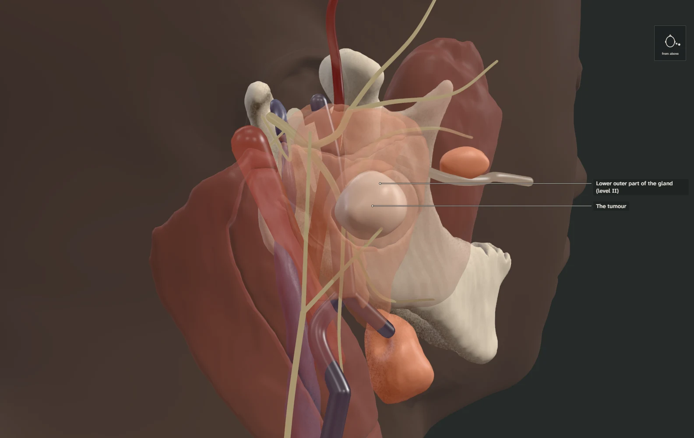
No randomised trial has compared the operations, and the studies we have mostly record what surgeons chose, so they cannot show that one operation is safer than another for the same tumour. [evidence-limits-choice]
[framed figures, claim ecd-vs-superficial-outcomes]
The studies differ in size, follow-up and tumour mix, and rarely say how the operation was chosen. [evidence-limits-choice] The comparison above pools each operation on its own, and applies to small, mobile, superficial tumours, not to deep, large, recurrent or malignant ones. [ecd-vs-superficial-outcomes]
Scene description (screen readers, static figure): The same see-through gland and tumour, with the figures from the studies that compared the operations set out in the text beside it. The studies compare groups that surgeons chose, not groups that were assigned by chance.
Claims
evidence-limits-choice uncertain sources checked clinical review: pending
Essentials: Most comparisons between operations come from records of what surgeons chose, so they cannot show that one operation is safer than another for the same tumour.
Anatomy: No randomised trial has compared extracapsular dissection with superficial parotidectomy. The studies are retrospective, differ in size, follow-up and tumour mix, and rarely say how the operation was chosen, which introduces selection bias.
Clinical: The UK national guideline asks only that benign parotid tumours be completely excised, which offers good cure rates.
Limitations: Salzano 2025 is itself a single-arm pooled analysis of mostly retrospective studies with some internally inconsistent figures.
- Salzano G, Scocca V, Troise S et al. 2025. Pleomorphic Adenoma: Extracapsular Dissection vs. Superficial Parotidectomy-An Updated Systematic Review and Meta-Analysis. Med Sci (Basel). meta-analysis [active], Section 4, Limitations link
- Sood S, McGurk M, Vaz F 2016. Management of Salivary Gland Tumours: United Kingdom National Multidisciplinary Guidelines. J Laryngol Otol. guideline [active], Recommendations link
ecd-vs-superficial-outcomes comparative-evidence sources checked clinical review: pending
Essentials: For small, mobile tumours in the outer lobe, studies find similar recurrence after the smaller operation, with less temporary facial weakness and less Frey syndrome.
Anatomy: In pooled analyses of pleomorphic adenoma, recurrence was similar after extracapsular dissection and superficial parotidectomy; temporary facial weakness and Frey syndrome were less frequent after extracapsular dissection, and permanent weakness was similar.
Clinical: Single-arm pooled rates in 2,507 patients: recurrence 3% after extracapsular dissection and 4% after superficial parotidectomy; temporary facial weakness 5% and 26%; permanent weakness 3% and 4%; Frey syndrome 4% and 13%. An earlier meta-analysis of benign parotid tumours found temporary weakness in 8.0% and 20.4% and Frey syndrome in 4.5% and 26.1%.
Recurrence after extracapsular dissection: 3 % (95% CI 2–9); Patients with a pathological diagnosis of pleomorphic adenoma, 21 mostly retrospective studies, 37 of 1,359; Systematic review, single-arm pooled proportions
Recurrence after superficial parotidectomy: 4 % (95% CI 3–6); Patients with a pathological diagnosis of pleomorphic adenoma, 21 mostly retrospective studies, 26 of 1,032; Systematic review, single-arm pooled proportions
Temporary facial weakness after extracapsular dissection: 5 % (95% CI 3–8); Patients with a pathological diagnosis of pleomorphic adenoma, 21 mostly retrospective studies, 70 of 1,208; Systematic review, single-arm pooled proportions
Temporary facial weakness after superficial parotidectomy: 26 % (95% CI 17–37); Patients with a pathological diagnosis of pleomorphic adenoma, 21 mostly retrospective studies, 256 of 785; Systematic review, single-arm pooled proportions
Permanent facial weakness after extracapsular dissection: 3 % (95% CI 2–4); Patients with a pathological diagnosis of pleomorphic adenoma, 21 mostly retrospective studies, 24 of 1,316; Systematic review, single-arm pooled proportions
Permanent facial weakness after superficial parotidectomy: 4 % (95% CI 2–5); Patients with a pathological diagnosis of pleomorphic adenoma, 21 mostly retrospective studies, 19 of 782; Systematic review, single-arm pooled proportions
Frey syndrome after extracapsular dissection: 4 % (95% CI 3–6); Patients with a pathological diagnosis of pleomorphic adenoma, 21 mostly retrospective studies, 25 of 941; Systematic review, single-arm pooled proportions
Frey syndrome after superficial parotidectomy: 13 % (95% CI 7–25); Patients with a pathological diagnosis of pleomorphic adenoma, 21 mostly retrospective studies, 77 of 462; Systematic review, single-arm pooled proportions
Temporary facial weakness after extracapsular dissection: 8 %; Solitary benign parotid tumours of mixed histology, 9 studies, 59 of 741; Systematic review with meta-analysis
Temporary facial weakness after superficial parotidectomy: 20.4 %; Solitary benign parotid tumours of mixed histology, 9 studies, 81 of 397; Systematic review with meta-analysis
Disagreement: Albergotti 2012 pooled mixed benign tumours and reports different rates from Salzano 2025, which pooled pleomorphic adenoma alone.
Limitations: The studies compared two groups chosen by surgeons, not randomised ones: the smaller operation went to smaller, more mobile, more superficial tumours. Salzano’s pooling treats each operation as its own single arm, found substantial heterogeneity and likely publication bias for some outcomes, and no included study stated how the operation was chosen. Some intervals in that paper do not contain their point estimates (for example intraoperative capsular rupture); only outcomes that are internally consistent are shown. These numbers do not apply to deep-lobe, large, recurrent or malignant tumours.
- Salzano G, Scocca V, Troise S et al. 2025. Pleomorphic Adenoma: Extracapsular Dissection vs. Superficial Parotidectomy-An Updated Systematic Review and Meta-Analysis. Med Sci (Basel). meta-analysis [active], Section 3.3; Section 4 link
- Albergotti WG, Nguyen SA, Zenk J et al. 2012. Extracapsular dissection for benign parotid tumors: a meta-analysis. Laryngoscope. meta-analysis [active], Abstract link
25. The incision is marked The operation
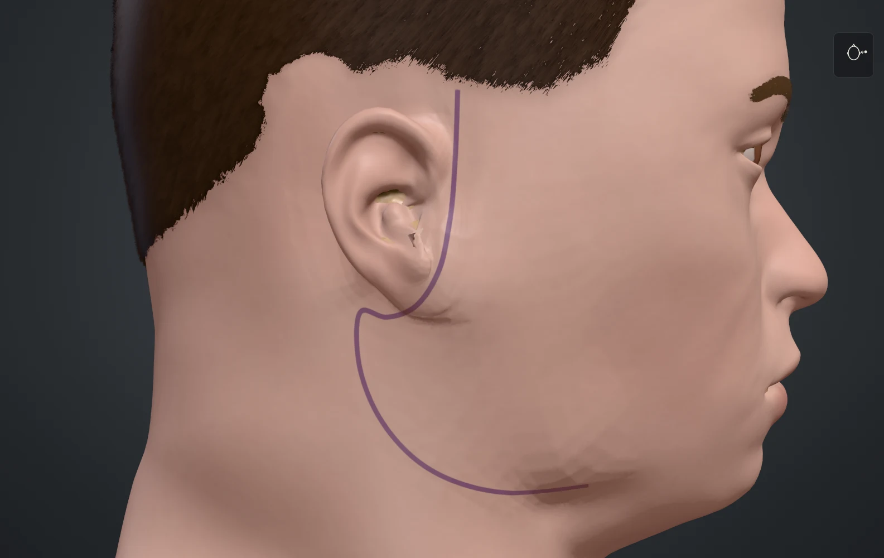
A common incision runs in the crease in front of the ear, curves around the earlobe, and continues into a natural crease in the neck below the jaw. [incision-modified-blair] In the model it is drawn as a marker line on the skin.
This is one representative incision; the choice depends on the surgeon and the tumour. [incision-modified-blair]
Scene description (screen readers, static figure): The right side of the face and upper neck with the skin closed, seen from the side. A violet ink line marks the planned incision, running down the crease in front of the ear, around under the earlobe, then forward in a crease of the neck below the angle of the jaw.
Checklist items
| Area | Statement | Compared against | Evidence | Self-review | Clinical |
|---|
| Operation | A modified Blair incision: preauricular crease, around the lobule, into a neck crease below the angle. | Iowa protocol; StatPearls (representative technique) | docs/qc/m1-anatomy/incision_flap.png | pass: Representative, not universal; the facelift variant is out of M1 scope. | pending |
| Model | The face is generic (MPFB, CC0), not the donor's. | Face fit report | docs/qc/m1-anatomy/face_fit.png | pass: Conformed to the CT only over the dissection field; the central face is unconformed MPFB. | pending |
Claims
incision-modified-blair representative-technique sources checked clinical review: pending
Essentials: A common incision runs in the crease in front of the ear, curves around the earlobe, and continues into a natural neck crease below the jaw.
Anatomy: The modified Blair incision is a common approach; a facelift-type incision is an alternative in selected cases.
Limitations: Incision choice varies by surgeon and tumour.
- University of Iowa Department of Otolaryngology . Parotidectomy with Facial Nerve Dissection. Iowa Head and Neck Protocols. institutional-protocol [active], Operative procedure: incision and flap elevation; sample dictation link
26. A different incision The operation
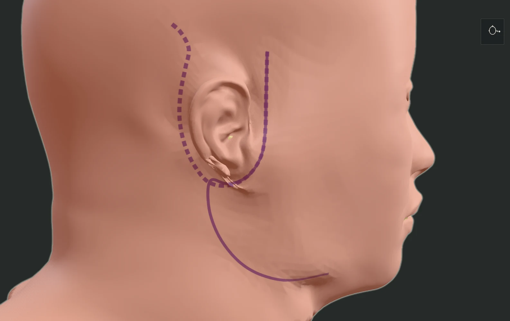
An alternative incision, borrowed from facelift surgery, hides the scar in front of and behind the ear and in the hairline instead of in the neck. [facelift-incision] It is drawn dashed beside the solid line of the first incision.
It gives adequate exposure for selected tumours, mostly small, mobile and benign, and in studies patients rate the scar better and develop less Frey syndrome — though these were surgeons' choices of patients, not a randomised comparison. [facelift-incision]
[framed figures, claim facelift-incision]
Scene description (screen readers, static figure): The same view of the skin with a second, dashed violet line added. It follows the first line down in front of the ear and around the lobe, but then turns up behind the ear toward the hairline instead of running forward into the neck.
Claims
facelift-incision varies-by-surgeon sources checked clinical review: pending
Essentials: An alternative incision, borrowed from facelift surgery, hides the scar in front of and behind the ear and in the hairline instead of in the neck.
Anatomy: The modified facelift incision follows the edge of the tragus to the earlobe, passes round the lobule and runs up behind the ear toward the hairline. It avoids a neck scar and gives adequate exposure for selected tumours, which are mostly small, mobile and benign.
Clinical: In a meta-analysis of seven studies of presumed benign tumours the facelift incision scored higher for cosmetic satisfaction and caused less Frey syndrome, with similar rates of facial palsy and salivary complications; operations took somewhat longer and the tumours were smaller. One series used it only for benign, mobile tumours under 4 cm and found tumours at the far periphery, and the upper neck nodes, not always reachable.
Cosmetic satisfaction score, facelift minus Blair incision: 1.66 points (95% CI 0.87–2.46); Adults having open parotidectomy for presumed benign tumours, 7 studies; Systematic review and meta-analysis (mean difference; the scales differ between studies)
Frey syndrome, facelift minus Blair incision (risk difference): -18 % (95% CI -27–-10); Adults having open parotidectomy for presumed benign tumours, 7 studies; Systematic review and meta-analysis
Limitations: Observational comparisons: the facelift incision went to smaller, more benign tumours in surgeons who chose it. A narrative review notes that well-designed prospective studies are lacking and that these incisions remain largely with experienced surgeons at high-volume centres. The path drawn in the model is one representative facelift-type incision.
- Lee YC, Liao WC, Yang SW et al. 2021. Systematic review and meta-analysis of modified facelift incision versus modified Blair incision in parotidectomy. Sci Rep. meta-analysis [active], Abstract link
- Terris DJ, Tuffo KM, Fee WE 1994. Modified facelift incision for parotidectomy. J Laryngol Otol. case-series [active], Abstract link
- Movassaghi K, Lewis M, Shahzad F et al. 2019. Optimizing the Aesthetic Result of Parotidectomy with a Facelift Incision and Temporoparietal Fascia Flap. Plast Reconstr Surg Glob Open. case-series [active], Operative technique link
- Lorenz KJ, Behringer PA, Höcherl D et al. 2013. Improving the quality of life of parotid surgery patients through a modified facelift incision and great auricular nerve preservation. GMS Interdiscip Plast Reconstr Surg DGPW. case-series [active], Introduction; Patients and methods link
- Aggarwal V 2021. Incisions for Parotidectomy: A Narrative Review. Ann Plast Surg. narrative-review [active] (indirect), Abstract link
27. The skin flap is raised The operation
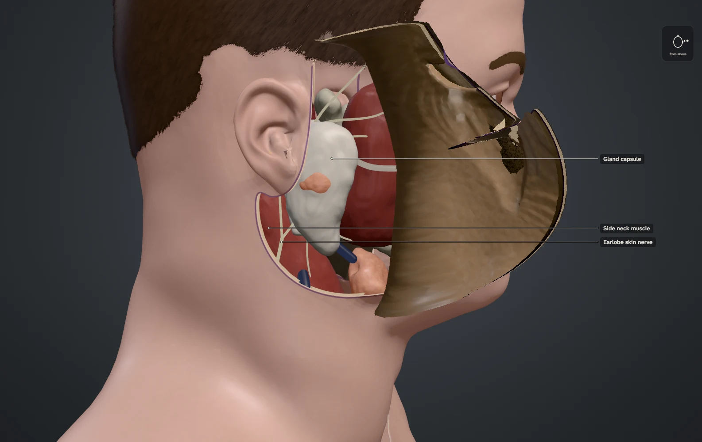
The skin and the fat beneath it are lifted forward in the layer just outside the gland's capsule. [flap-plane] Behind the gland, a thin nerve to the skin of the earlobe crosses the neck muscle toward the ear; the operation often numbs part of the earlobe. [great-auricular-nerve-course]
In the model the flap folds forward in one piece.
Scene description (screen readers, static figure): The skin and the fat beneath it are cut along the ink line and folded forward over the cheek, still attached in front. Beneath lies the pale capsule of the gland; behind and below it, a thin nerve to the earlobe (the great auricular nerve) crosses the neck muscle beside a vein. The thin muscle sheet of the neck (platysma) is not shown.
Checklist items
| Area | Statement | Compared against | Evidence | Self-review | Clinical |
|---|
| Great auricular nerve | The great auricular nerve ascends over the sternocleidomastoid toward the lobule, dividing near the lower pole of the gland. | StatPearls; relationship to the SCM surface | pipeline/specs/anatomy.yaml | limit: Authored from the spec on the SCM surface; not traced on cryosections. | pending |
| Tissue layers | Skin, subcutaneous fat, SMAS and the gland capsule, in that order from outside. | Depth bands under the fitted skin | pipeline/anatomy/layers.py
docs/qc/m1-anatomy/checks.json | limit: Layers are constant-depth bands (fat to 7 mm, SMAS 1.3 mm, capsule 1 mm), not segmented; the capsule is thin because the gland lies 3.9 mm under the skin at the lower pole in the source CT. | pending |
| Operation | The skin flap is raised superficial to the parotid fascia and held forward. | Iowa protocol; StatPearls | docs/qc/m1-anatomy/incision_flap.png | limit: Skin and fat fold forward as one curl; the neck part is subplatysmal in practice but there is no platysma mesh, so the operative plates hide the SMAS outside the capsule. | pending |
Claims
flap-plane representative-technique sources checked clinical review: pending
Essentials: The skin is lifted forward in the layer just outside the gland’s capsule.
Anatomy: The skin flap is raised in the plane immediately superficial to the parotid fascia (a facelift-like plane).
Limitations: The protocol also says the flap may be raised a little deeper than a facelift plane, just outside the periparotid fascia, to make it thicker.
- University of Iowa Department of Otolaryngology . Parotidectomy with Facial Nerve Dissection. Iowa Head and Neck Protocols. institutional-protocol [active], Operative procedure: incision and flap elevation link
great-auricular-nerve-course representative-technique sources checked clinical review: pending
Essentials: A skin nerve for the earlobe lies on the neck muscle below the gland and is often numbed by the operation; its back branches can usually be kept.
Anatomy: The great auricular nerve lies on the sternocleidomastoid and divides into branches; the posterior branches supplying the lower ear can be preserved in the majority of cases. The skin cut about the earlobe can injure its small superficial branches. Numbness about the incision and the ear is a described consequence.
Limitations: One institution's protocol; how often the nerve is preserved and how often numbness follows are given by other claims (gan-preservation, minor-complications).
- University of Iowa Department of Otolaryngology . Parotidectomy with Facial Nerve Dissection. Iowa Head and Neck Protocols. institutional-protocol [active], Operative procedure; Describe expected sequelae link
28. The earlobe nerve The operation
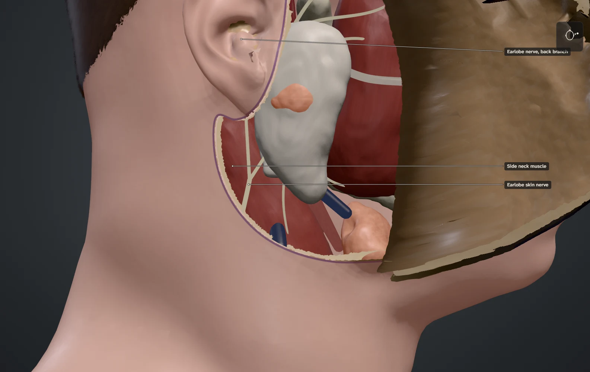
Behind and below the gland a thin nerve to the skin of the earlobe climbs over the neck muscle and divides into a front and a back branch. [great-auricular-nerve-course] The back branch can often be kept, and keeping it is linked with better feeling in the earlobe afterwards. [gan-preservation]
[framed figures, claim gan-preservation]
Scene description (screen readers, static figure): A closer view of the neck below and behind the gland. The thin nerve to the earlobe climbs over the neck muscle beside a vein and divides into a front and a back branch near the lower end of the gland.
Claims
great-auricular-nerve-course representative-technique sources checked clinical review: pending
Essentials: A skin nerve for the earlobe lies on the neck muscle below the gland and is often numbed by the operation; its back branches can usually be kept.
Anatomy: The great auricular nerve lies on the sternocleidomastoid and divides into branches; the posterior branches supplying the lower ear can be preserved in the majority of cases. The skin cut about the earlobe can injure its small superficial branches. Numbness about the incision and the ear is a described consequence.
Limitations: One institution's protocol; how often the nerve is preserved and how often numbness follows are given by other claims (gan-preservation, minor-complications).
- University of Iowa Department of Otolaryngology . Parotidectomy with Facial Nerve Dissection. Iowa Head and Neck Protocols. institutional-protocol [active], Operative procedure; Describe expected sequelae link
gan-preservation comparative-evidence sources checked clinical review: pending
Essentials: The nerve that gives feeling to the earlobe can often be kept; when it is cut, the numbness can last a long time.
Anatomy: In a prospective trial the posterior branches of the great auricular nerve could be preserved in most patients without compromising the tumour clearance; their sensation recovered, while after division a measurable loss persisted for up to two years.
Clinical: Hui 2003 (81 patients): preservation was achievable in 69%, the deficit was transient when preserved, and preservation took about ten minutes longer. Vieira 2002 (30 patients randomised): tactile sensitivity returned to the preoperative level by six months in the preservation group and recovered only partly in the sacrifice group. Other series have found no significant difference.
Great auricular nerve branches preserved: 69 %; Patients having parotidectomy at one university department, of 81 patients; Prospective controlled double-blind trial
Disagreement: Some studies report no significant difference in sensation between preserving and dividing the nerve (as summarised in Lorenz 2013).
Limitations: Small trials; the branches were preserved only when tumour clearance was not compromised. Lorenz 2013 reports that two other studies found no significant difference between preservation and division, so the benefit is not universal.
- Hui Y, Wong DS, Wong LY et al. 2003. A prospective controlled double-blind trial of great auricular nerve preservation at parotidectomy. Am J Surg. randomised-trial [active], Abstract link
- Vieira MB, Maia AF, Ribeiro JC 2002. Randomized prospective study of the validity of the great auricular nerve preservation in parotidectomy. Arch Otolaryngol Head Neck Surg. randomised-trial [active], Abstract link
- Lorenz KJ, Behringer PA, Höcherl D et al. 2013. Improving the quality of life of parotid surgery patients through a modified facelift incision and great auricular nerve preservation. GMS Interdiscip Plast Reconstr Surg DGPW. case-series [active] (indirect), Discussion link
29. How surgeons find the nerve The operation
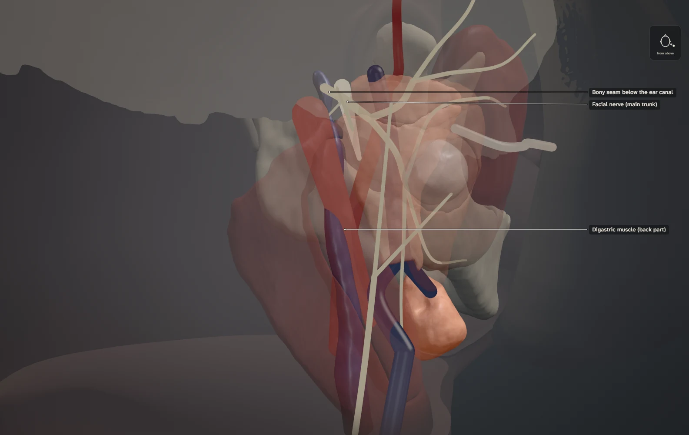
The surgeon frees the front edge of the large neck muscle and finds the small muscle under the jaw, the digastric, then follows it toward the bony knob behind the ear. [neck-muscle-exposure] Surgeons usually find the main trunk first, then follow it forward. [antegrade-dissection] Several landmarks point to it: a seam in the bone below the ear canal, which the trunk lies a few millimetres below; [landmark-tympanomastoid-suture] the upper edge of the digastric; [landmark-posterior-belly-digastric] and the cartilage of the ear canal, a less exact guide because it moves. [landmark-tragal-pointer] A thin spur of bone, the styloid, lies near the trunk, about a centimetre away on average. [landmark-styloid]
In this view the skin is faded and the gland and neck muscle are shown see-through.
Scene description (screen readers, static figure): A closer view behind the jaw. The skin is faded to an outline, the neck muscle and gland are see-through. The nerve trunk emerges from the skull between the mastoid bone and the thin styloid bone, just above a small muscle (the posterior belly of the digastric), and deep to a seam in the bone below the ear canal.
Checklist items
| Area | Statement | Compared against | Evidence | Self-review | Clinical |
|---|
| Parotid gland | The retromandibular (deep) portion is authored within anatomical bounds because the CT does not resolve it; muscle-density tissue beside the posterior digastric is excluded. | CT density; cryosection a_vm1175 | docs/qc/m1-anatomy/deep_lobe_digastric.png
docs/qc/m1-cryo/cryo_1175.jpg | limit: Authored region (7.7 mL); the stylomandibular-tunnel extension is not modelled; the cryosection overlay still suggests about 3 mm overlap with muscle at z 231, within registration uncertainty. | pending |
| Facial nerve | The trunk leaves the stylomastoid foramen, runs about 1.5 cm, enters the gland, divides at the pes and fans into five branch groups. | Cited trunk-length range 8.6-22.8 mm; landmark picks on CT | docs/qc/m1-anatomy/authored_views.png
docs/qc/m1-anatomy/checks.json | limit: Trunk 17.2 mm. One common pattern without interconnections; not verified against cryosections (the nerve is not resolvable at 0.33 mm/px). | pending |
| Surgical landmarks | Tympanomastoid suture, posterior belly of the digastric, tragal pointer and styloid relate to the trunk as described. | Witt 2005, Rea 2010, Pather 2006, Cannon 2004 (measured distances disagree) | docs/qc/m1-landmarks/stylomastoid_search.png
docs/qc/m1-anatomy/checks.json | limit: The tragal-pointer distance (19.7 mm) is outside both study ranges; the claim is marked uncertain and the distance is reported, not asserted. | pending |
| Operation | The skin flap is raised superficial to the parotid fascia and held forward. | Iowa protocol; StatPearls | docs/qc/m1-anatomy/incision_flap.png | limit: Skin and fat fold forward as one curl; the neck part is subplatysmal in practice but there is no platysma mesh, so the operative plates hide the SMAS outside the capsule. | pending |
Claims
neck-muscle-exposure representative-technique sources checked clinical review: pending
Essentials: The surgeon frees the front edge of the large neck muscle and finds the small muscle under the jaw (the digastric), then follows it toward the bony knob behind the ear.
Anatomy: The parotid is detached from the tragal cartilage and from the anterior border of the sternocleidomastoid; the digastric is identified and followed along its lateral surface toward the mastoid tip, which exposes the landmarks that lead to the trunk.
Limitations: One institution’s sequence; other surgeons find the nerve from a branch (retrograde) or by other routes.
- University of Iowa Department of Otolaryngology . Parotidectomy with Facial Nerve Dissection. Iowa Head and Neck Protocols. institutional-protocol [active], Mobilization of parotid in preparation for VIIth nerve dissection link
antegrade-dissection representative-technique sources checked clinical review: pending
Essentials: Surgeons usually find the main trunk of the nerve first, then follow it forward, spreading the gland tissue over the nerve and dividing it as they go.
Anatomy: The trunk is identified through a wide exposure using landmarks; the nerve is then followed by careful blunt dissection on its sheath, slowly advancing and spreading, and the gland tissue is divided over it. Less common routes find a branch first and follow it back to the trunk (retrograde dissection).
Limitations: One institution's description of its own technique. Surgeons differ in how they find the trunk and how far they follow the branches.
- University of Iowa Department of Otolaryngology . Parotidectomy with Facial Nerve Dissection. Iowa Head and Neck Protocols. institutional-protocol [active], Operative procedure: mobilization of the parotid; facial nerve dissection link
landmark-tympanomastoid-suture standard-principle sources checked clinical review: pending
Essentials: Surgeons find the nerve trunk a few millimetres below a seam in the bone below the ear canal.
Anatomy: The tympanomastoid suture is a bony landmark for the trunk: in cadavers and live patients the closest distance was about 2 mm, and one protocol places the nerve approximately 2 mm inferior to the suture. Reported distances vary with the reference point used.
Suture to trunk (cadaver): 1.8 mm (range 0–4); 14 cadavers (22 live patients gave a mean of 2.0 mm, range 0 to 4), 14 cadavers; Prospective measurement of the closest distance from the suture to the nerve
Suture to trunk: 2.5 mm; 26 embalmed cadavers (mean ± SD 2.5 ± 0.4 mm), 26 cadavers; Cadaveric measurement to the main trunk
Suture to trunk: 10 mm (range 4.9–18.6); 40 adult cadavers (mean 10.0 mm), 40 cadavers; Micro-dissection, shortest distance to the trunk
Disagreement: Studies measure from different points on the suture; the ranges do not agree.
- Witt RL, Weinstein GS, Rejto LK 2005. Tympanomastoid suture and digastric muscle in cadaver and live parotidectomy. Laryngoscope. anatomical-study [active], Abstract, Results link
- Rea PM, McGarry G, Shaw-Dunn J 2010. The precision of four commonly used surgical landmarks for locating the facial nerve in anterograde parotidectomy in humans. Ann Anat. cadaveric-study [active], Abstract, Results link
- Pather N, Osman M 2006. Landmarks of the facial nerve: implications for parotidectomy. Surg Radiol Anat. cadaveric-study [active], Abstract, Results link
- University of Iowa Department of Otolaryngology . Parotidectomy with Facial Nerve Dissection. Iowa Head and Neck Protocols. institutional-protocol [active], Operative procedure: landmarks link
landmark-posterior-belly-digastric standard-principle sources checked clinical review: pending
Essentials: A small neck muscle points to the nerve: the trunk lies just above its upper edge.
Anatomy: The trunk lies superior to the posterior belly of the digastric near its mastoid attachment; reported distances vary.
Posterior belly to trunk (cadaver): 12.4 mm (range 7–17); 14 cadavers (22 live patients gave a mean of 10.7 mm, range 5 to 14), 14 cadavers; Prospective measurement of the closest distance from the muscle's posterior-superior margin to the nerve
Posterior belly to trunk: 5.5 mm; 26 embalmed cadavers (mean ± SD 5.5 ± 2.1 mm), 26 cadavers; Cadaveric measurement to the main trunk
Posterior belly to trunk: 14.6 mm (range 9.7–24.3); 40 adult cadavers (mean 14.6 mm), 40 cadavers; Micro-dissection, shortest distance from the muscle's attachment to the trunk
Disagreement: Distances differ two- to three-fold between studies.
Limitations: The studies measure from different points on the muscle and in different specimens; none is a measurement in a patient with a tumour. In the protocol the nerve is described as immediately above the muscle.
- Witt RL, Weinstein GS, Rejto LK 2005. Tympanomastoid suture and digastric muscle in cadaver and live parotidectomy. Laryngoscope. anatomical-study [active], Abstract, Results link
- Rea PM, McGarry G, Shaw-Dunn J 2010. The precision of four commonly used surgical landmarks for locating the facial nerve in anterograde parotidectomy in humans. Ann Anat. cadaveric-study [active], Abstract, Results link
- Pather N, Osman M 2006. Landmarks of the facial nerve: implications for parotidectomy. Surg Radiol Anat. cadaveric-study [active], Abstract, Results link
- University of Iowa Department of Otolaryngology . Parotidectomy with Facial Nerve Dissection. Iowa Head and Neck Protocols. institutional-protocol [active], Operative procedure: landmarks link
landmark-tragal-pointer uncertain sources checked clinical review: pending
Essentials: The cartilage of the ear canal also points toward the nerve, but it moves and is a less exact guide.
Anatomy: The tragal pointer is often taught as 1 cm inferior and 1 cm deep to the trunk; measured distances disagree. The pointer is cartilaginous, mobile and has an irregular tip, and in one prospective series of 79 parotidectomies the distance was significantly less than 1 cm.
Tragal pointer to trunk: 6.9 mm; 26 embalmed cadavers (mean ± SD 6.9 ± 1.8 mm), 26 cadavers; Cadaveric measurement to the main trunk
Tragal pointer to trunk: 34 mm (range 24.3–49.2); 40 adult cadavers (mean 34 mm), 40 cadavers; Micro-dissection, shortest distance from the tragal pointer to the trunk
Disagreement: Rea (6.9 mm) and Pather (34 mm) differ five-fold; Cannon 2004 found the distance smaller than the textbook 1 cm. The '1 cm' rule is a rule of thumb.
- Rea PM, McGarry G, Shaw-Dunn J 2010. The precision of four commonly used surgical landmarks for locating the facial nerve in anterograde parotidectomy in humans. Ann Anat. cadaveric-study [active], Abstract, Results link
- Pather N, Osman M 2006. Landmarks of the facial nerve: implications for parotidectomy. Surg Radiol Anat. cadaveric-study [active], Abstract, Results link
- Cannon CR, Replogle WH, Schenk MP 2004. Facial nerve in parotidectomy: a topographical analysis. Laryngoscope. case-series [active], Abstract, Results and Conclusions link
- University of Iowa Department of Otolaryngology . Parotidectomy with Facial Nerve Dissection. Iowa Head and Neck Protocols. institutional-protocol [active], Operative procedure: landmarks link
landmark-styloid comparative-evidence sources checked clinical review: pending
Essentials: The thin spur of bone called the styloid process lies near the nerve trunk, about a centimetre away on average.
Anatomy: The styloid process is one of the bony landmarks measured from the facial nerve trunk: in 40 adult cadavers the shortest distance ranged from 4.3 to 18.6 mm (mean 9.8 mm).
Styloid process to trunk: 9.8 mm (range 4.3–18.6); 40 adult cadavers, 40 cadavers; Micro-dissection, shortest distance to the facial nerve trunk
Limitations: One cadaveric series. The styloid is deep and is not itself seen at operation; it is a bony reference measured in specimens.
- Pather N, Osman M 2006. Landmarks of the facial nerve: implications for parotidectomy. Surg Radiol Anat. cadaveric-study [active], Abstract, Results link
30. The trunk is found and tested The operation
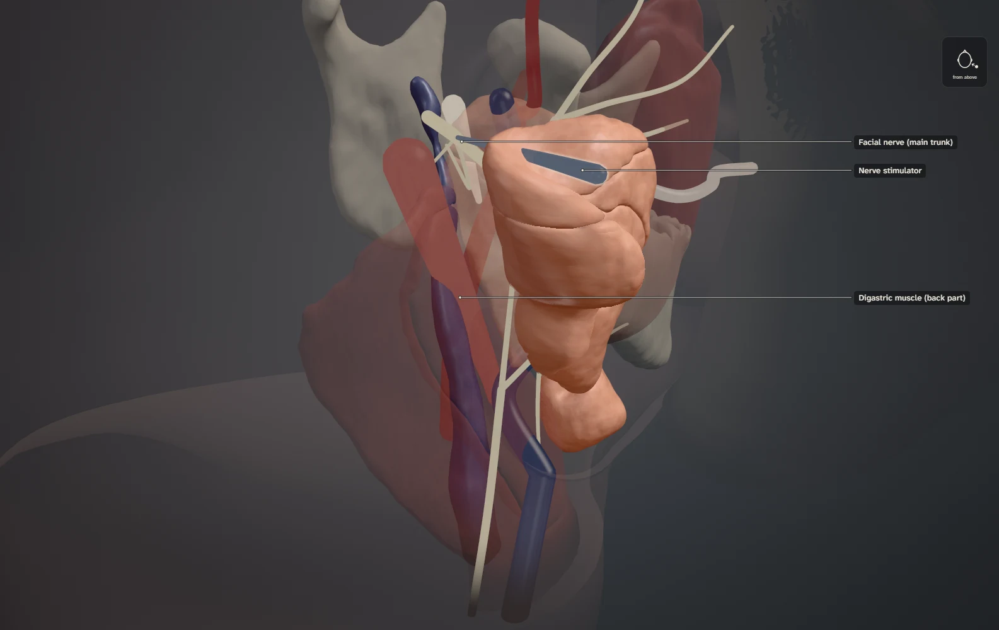
A small stimulator touched to the tissue makes the face twitch if it is the nerve, so the surgeon knows what is nerve and that it still works; the patient is not paralysed, so the twitch can be seen. [stimulator-technique]
Monitoring the nerve lowers the chance of weakness straight after the operation; whether it changes lasting weakness has not been shown. [monitoring-evidence]
The view has moved behind and above the ear, where the surgeon works; the small head at the top right shows where you are looking from.
[framed figures, claim monitoring-evidence]
Scene description (screen readers, static figure): The back edge of the outer gland has been eased forward. The pale trunk of the facial nerve lies bare just above the digastric muscle, and the tip of a thin probe, a nerve stimulator, rests on it.
Claims
stimulator-technique representative-technique sources checked clinical review: pending
Essentials: During the operation the surgeon can touch a tissue with a small stimulator: if it is the nerve, the face twitches. The patient is kept from being paralysed so this can be seen.
Anatomy: A hand-held stimulator or a monitor helps localise the nerve by the facial movement it causes; muscle relaxants are reversed beforehand, and local anaesthetic is kept away from the nerve because it may block it.
Limitations: One institution’s protocol; the same protocol notes that monitoring has become routine and is most useful for recurrent tumours or difficult dissections.
- University of Iowa Department of Otolaryngology . Parotidectomy with Facial Nerve Dissection. Iowa Head and Neck Protocols. institutional-protocol [active], Preoperative preparation; Facial nerve identification link
monitoring-evidence comparative-evidence sources checked clinical review: pending
Essentials: A monitor that signals when the nerve is touched lowers the chance of weakness straight after surgery; whether it changes lasting weakness is not shown.
Anatomy: Meta-analyses find less immediate facial weakness with intraoperative nerve monitoring, mainly in superficial parotidectomy, and no clear difference in permanent weakness.
Clinical: Buntain 2026 (12 studies, 2,401 patients): odds of immediate dysfunction with monitoring 0.48 (95% CI 0.31–0.72); 0.51 for superficial and 0.93 (0.42–2.08) for total parotidectomy; permanent dysfunction 0.84 (0.44–1.60). Sood 2015 (7 studies, 546 patients): immediate weakness 22.5% monitored against 34.9% unmonitored; permanent 3.9% against 7.1%, not significantly different.
Immediate facial nerve dysfunction with monitoring (odds ratio): 0.48 OR (95% CI 0.31–0.72); Patients having parotidectomy, retrospective and prospective two-arm studies, 10 studies, 2,042 patients; Systematic review and meta-analysis
Permanent facial nerve dysfunction with monitoring (odds ratio): 0.84 OR (95% CI 0.44–1.6); Patients having parotidectomy, retrospective and prospective two-arm studies, 6 studies, 981 patients; Systematic review and meta-analysis
Immediate weakness, monitored: 22.5 %; Patients having primary parotidectomy, 546 patients in 7 studies; Systematic review and meta-analysis
Immediate weakness, unmonitored: 34.9 %; Patients having primary parotidectomy, 546 patients in 7 studies; Systematic review and meta-analysis
Limitations: Observational comparisons in which the surgeon chose whether to monitor. The authors conclude that the effect on permanent weakness, and in total parotidectomy, is uncertain and that use should be tailored to the operation and the surgeon.
- Buntain H, Thompson M, Perry CF et al. 2026. The Impact of Intraoperative Facial Nerve Monitoring During Parotidectomy on Postoperative Facial Nerve Function: A Systematic Review and Meta-Analysis. ANZ J Surg. meta-analysis [active], Abstract link
- Sood AJ, Houlton JJ, Nguyen SA et al. 2015. Facial nerve monitoring during parotidectomy: a systematic review and meta-analysis. Otolaryngol Head Neck Surg. meta-analysis [active], Abstract link
31. Following the trunk to its first split The operation
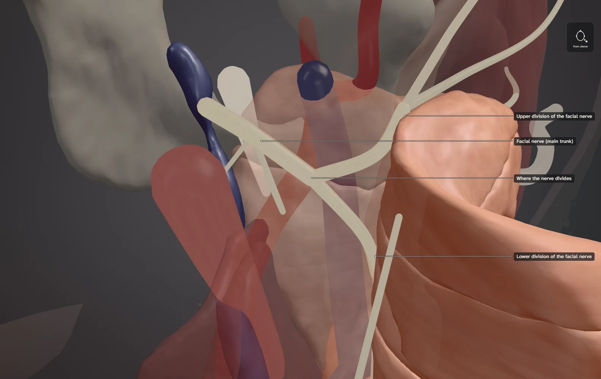
From the trunk the surgeon spreads the tissue forward over the nerve, dividing the gland only once the nerve is in view. [pes-dissection-technique] Inside the gland the trunk usually splits into an upper and a lower division, at a point called the pes anserinus. [fn-bifurcation]
Scene description (screen readers, static figure): More of the outer gland has been folded forward. The trunk, about a centimetre and a half long, divides into an upper and a lower division at the point called the pes anserinus.
Claims
pes-dissection-technique representative-technique sources checked clinical review: pending
Essentials: With the trunk found, the surgeon follows it forward by gently spreading the tissue over it, dividing the gland only once the nerve is seen.
Anatomy: The nerve is dissected with careful blunt dissection directly on its sheath, advancing slowly; the gland is divided between the tines of an instrument over the nerve, and the pes anserinus (the first division into upper and lower branches) is identified before dissection continues along the divisions toward the tumour.
Limitations: One institution’s sequence and instruments; the course of the dissection depends on where the tumour is.
- University of Iowa Department of Otolaryngology . Parotidectomy with Facial Nerve Dissection. Iowa Head and Neck Protocols. institutional-protocol [active], Facial nerve dissection link
fn-bifurcation established-anatomy sources checked clinical review: pending
Essentials: Inside the gland the trunk usually splits into an upper and a lower division.
Anatomy: At the pes anserinus the trunk usually divides into two, a temporofacial (upper) and a cervicofacial (lower) division; division into three is uncommon.
Clinical: Pooled prevalence of a bifurcated trunk was 94.1% in a meta-analysis of 2,453 nerves and 96.4% (trifurcation 3.2%) in a systematic review of 1,497 cases.
Trunk divides in two (bifurcation): 94.1 %; Cadaveric and operative series, 19 studies, 2,453 nerves; Systematic review with meta-analysis
Trunk divides in two (bifurcation): 96.4 %; Cadaveric and operative series, 21 studies, 1,497 cases; Systematic review
Trunk divides in three (trifurcation): 3.2 %; Cadaveric and operative series, 21 studies, 1,497 cases; Systematic review
Limitations: Studies classify the pattern differently; the authors note that the bifurcation is far more constant than the distal branching.
- Triantafyllou G, Tsiouris C, Chrysanthou I et al. 2024. Extratemporal Facial Nerve Interconnections and Trunk's Variability: A Systematic Review with Meta-Analysis. Diagnostics (Basel). meta-analysis [active], Abstract link
- Poutoglidis A, Paraskevas GK, Lazaridis N et al. 2022. Extratemporal facial nerve branching patterns: systematic review of 1497 cases. J Laryngol Otol. systematic-review [active], Abstract link
fn-trunk-length established-anatomy sources checked clinical review: pending
Essentials: The main trunk is short: about a centimetre and a half long before it divides.
Anatomy: From the stylomastoid foramen to its first division the trunk measures roughly 14–16 mm on average, with wide variation between people.
Clinical: Trunk length was 14.0 mm on average (range 8.6–22.8) in 40 adult cadavers and 16.4 ± 3.2 mm in 23 cadavers.
Trunk length, foramen to first division: 14 mm (range 8.6–22.8); Adult cadavers, microdissection, 40 cadavers; Cadaveric study
Trunk length, foramen to first division: 16.44 mm; Formalin-fixed cadavers, bilateral dissection, 23 cadavers (SD 3.2 mm); Cadaveric microdissection study
Disagreement: The two series differ by about 2.4 mm in their means.
Limitations: Two cadaver series that measured slightly differently; the trunk in an individual patient can be much shorter or longer. The model's trunk (17 mm) is inside both ranges.
- Pather N, Osman M 2006. Landmarks of the facial nerve: implications for parotidectomy. Surg Radiol Anat. cadaveric-study [active], Abstract link
- Salame K, Ouaknine GE, Arensburg B et al. 2002. Microsurgical anatomy of the facial nerve trunk. Clin Anat. cadaveric-study [active], Abstract link
32. Following the upper branches The operation
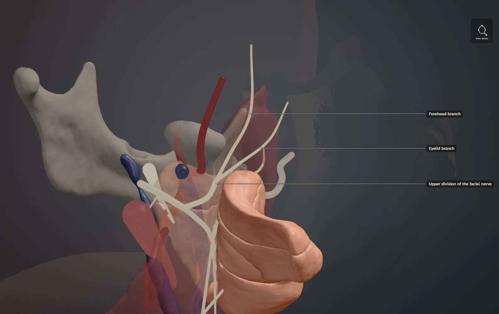
Following the nerve forward from its trunk, the surgeon lifts the gland off it branch by branch. [antegrade-dissection] The upper division gives the branches that lift the brow and close the eyes. [fn-five-branch-groups]
Scene description (screen readers, static figure): The folded-forward gland now reaches the tumour. The upper division and its two branches, one to the forehead and one to the eyelids, lie bare on the inner part of the gland, which stays in place.
Claims
antegrade-dissection representative-technique sources checked clinical review: pending
Essentials: Surgeons usually find the main trunk of the nerve first, then follow it forward, spreading the gland tissue over the nerve and dividing it as they go.
Anatomy: The trunk is identified through a wide exposure using landmarks; the nerve is then followed by careful blunt dissection on its sheath, slowly advancing and spreading, and the gland tissue is divided over it. Less common routes find a branch first and follow it back to the trunk (retrograde dissection).
Limitations: One institution's description of its own technique. Surgeons differ in how they find the trunk and how far they follow the branches.
- University of Iowa Department of Otolaryngology . Parotidectomy with Facial Nerve Dissection. Iowa Head and Neck Protocols. institutional-protocol [active], Operative procedure: mobilization of the parotid; facial nerve dissection link
fn-five-branch-groups established-anatomy sources checked clinical review: pending
Essentials: The nerve fans out into five groups of branches that move the forehead, eyelids, cheek, lower lip and neck.
Anatomy: There are five terminal groups of branches: temporal, zygomatic, buccal, marginal mandibular and cervical, reaching the face from the upper and lower divisions.
Limitations: The number of branches within each group varies from person to person; the model draws one branch for each group.
- University of Iowa Department of Otolaryngology . Parotidectomy with Facial Nerve Dissection. Iowa Head and Neck Protocols. institutional-protocol [active], Facial nerve dissection link
- Pujol-Olmo A, Mirapeix RM, Sañudo-Tejero JR et al. 2020. Description and relationships of the parotid gland levels proposed by the European Salivary Gland Society staging system: an anatomical study. Surg Radiol Anat. anatomical-study [active], Results link
33. Lifting the outer gland off the nerve The operation
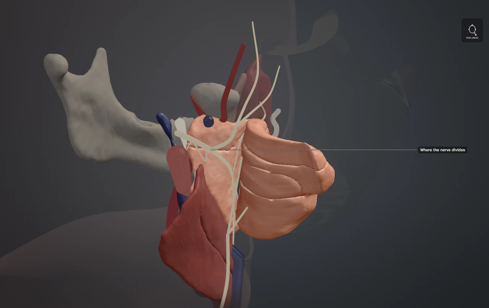
Following the nerve forward from its trunk, the surgeon lifts the outer gland off it branch by branch. [antegrade-dissection] The tumour comes away inside the outer gland, with a margin of normal tissue, while the nerve stays in place on the deeper tissue. [superficial-parotidectomy-definition]
This is one representative operation; which operation is right depends on the tumour and the surgeon. [choice-factors]
Scene description (screen readers, static figure): From behind and to the side, with the skin still faded, the outer part of the gland is folded forward off the nerve, carrying the tumour with it. The nerve's divisions and branches lie exposed on the inner part of the gland, which stays in place.
Checklist items
| Area | Statement | Compared against | Evidence | Self-review | Clinical |
|---|
| Parotid gland | The retromandibular (deep) portion is authored within anatomical bounds because the CT does not resolve it; muscle-density tissue beside the posterior digastric is excluded. | CT density; cryosection a_vm1175 | docs/qc/m1-anatomy/deep_lobe_digastric.png
docs/qc/m1-cryo/cryo_1175.jpg | limit: Authored region (7.7 mL); the stylomandibular-tunnel extension is not modelled; the cryosection overlay still suggests about 3 mm overlap with muscle at z 231, within registration uncertainty. | pending |
| Facial nerve | The trunk leaves the stylomastoid foramen, runs about 1.5 cm, enters the gland, divides at the pes and fans into five branch groups. | Cited trunk-length range 8.6-22.8 mm; landmark picks on CT | docs/qc/m1-anatomy/authored_views.png
docs/qc/m1-anatomy/checks.json | limit: Trunk 17.2 mm. One common pattern without interconnections; not verified against cryosections (the nerve is not resolvable at 0.33 mm/px). | pending |
| Pleomorphic adenoma | A 2 cm pleomorphic adenoma in the superficial lobe, clear of the nerve. | Authored for teaching (size and position), not taken from imaging | docs/qc/m1-anatomy/lobe_split_axial.png | pass: 19 mm, entirely lateral to the nerve plane, 1.6 mm from the nearest branch; the skin fullness over it is authored (up to 2.2 mm). | pending |
| Operation | The skin flap is raised superficial to the parotid fascia and held forward. | Iowa protocol; StatPearls | docs/qc/m1-anatomy/incision_flap.png | limit: Skin and fat fold forward as one curl; the neck part is subplatysmal in practice but there is no platysma mesh, so the operative plates hide the SMAS outside the capsule. | pending |
| Operation | Antegrade dissection lifts the superficial lobe off the nerve branches with the tumour inside it. | Representative superficial parotidectomy | pipeline/anatomy/surfaces.py | limit: The peel is a fold driven by an antegrade order field; it shows the principle, not tissue mechanics. | pending |
Claims
antegrade-dissection representative-technique sources checked clinical review: pending
Essentials: Surgeons usually find the main trunk of the nerve first, then follow it forward, spreading the gland tissue over the nerve and dividing it as they go.
Anatomy: The trunk is identified through a wide exposure using landmarks; the nerve is then followed by careful blunt dissection on its sheath, slowly advancing and spreading, and the gland tissue is divided over it. Less common routes find a branch first and follow it back to the trunk (retrograde dissection).
Limitations: One institution's description of its own technique. Surgeons differ in how they find the trunk and how far they follow the branches.
- University of Iowa Department of Otolaryngology . Parotidectomy with Facial Nerve Dissection. Iowa Head and Neck Protocols. institutional-protocol [active], Operative procedure: mobilization of the parotid; facial nerve dissection link
superficial-parotidectomy-definition standard-principle sources checked clinical review: pending
Essentials: A superficial parotidectomy removes the whole outer lobe of the gland, the part that lies outside the facial nerve.
Anatomy: Superficial parotidectomy is excision of the entire lateral segment of the gland, superficial to the facial nerve (ESGS levels I and II), with the nerve dissected throughout.
Clinical: It is typically reserved for medium-sized tumours that contact both main divisions, and for large tumours of the cranial part (level I) that contact the temporal branch and reach the main trunk. It can also be used for any benign tumour of the superficial lobe when extracapsular dissection would not ensure complete excision.
Limitations: Indications are from one review’s description of practice; the choice depends on the tumour and the surgeon.
- Zanghì A, Cavallaro A, Marchi M et al. 2024. Surgical management of benign tumors of the parotid gland: the advantages of extracapsular dissection compared to traditional surgical techniques. Front Surg. narrative-review [active], Introduction; Section 2 link
- Quer M, Guntinas-Lichius O, Marchal F et al. 2016. Classification of parotidectomies: a proposal of the European Salivary Gland Society. Eur Arch Otorhinolaryngol. consensus [active], Abstract link
choice-factors varies-by-surgeon sources checked clinical review: pending
Essentials: Which operation is chosen depends on the tumour’s size, how freely it moves, how deep it lies and how close it is to the nerve’s branches, and on the surgeon.
Anatomy: Reviews describe extracapsular dissection as an option for small, mobile tumours of the superficial lobe, up to about 3 cm. Tumours that touch several branches, that are large, or that lie deep call for a wider operation.
Clinical: One meta-analysis concluded that extracapsular dissection may be the treatment of choice for pleomorphic adenomas up to 3 cm, mobile and in the superficial lobe. Another review would also use it for caudal tumours over 2.5 cm that only touch the cervicofacial branch, and notes that in the hands of an occasional parotid surgeon extracapsular dissection, a minimal-margin operation, may recur more often.
Limitations: Authors’ recommendations from retrospective series; none of these sources provides a rule that decides the operation for an individual patient, and the atlas does not.
- Salzano G, Scocca V, Troise S et al. 2025. Pleomorphic Adenoma: Extracapsular Dissection vs. Superficial Parotidectomy-An Updated Systematic Review and Meta-Analysis. Med Sci (Basel). meta-analysis [active], Section 5, Conclusions link
- Zanghì A, Cavallaro A, Marchi M et al. 2024. Surgical management of benign tumors of the parotid gland: the advantages of extracapsular dissection compared to traditional surgical techniques. Front Surg. narrative-review [active], Section 2 link
- Zbären P, Vander Poorten V, Witt RL et al. 2013. Pleomorphic adenoma of the parotid: formal parotidectomy or limited surgery?. Am J Surg. narrative-review [active], Conclusions link
parotid-lobes-surgical established-anatomy sources checked clinical review: pending
Essentials: The “lobes” of the parotid are not separate parts: surgeons call the tissue on the outer side of the nerve “superficial” and the rest “deep”.
Anatomy: The superficial and deep lobes are a surgical division defined by the plane of the facial nerve; by weight about two-thirds of the gland lies superficial to it, and most tumours arise there.
Clinical: In 19 specimens the lateral levels I and II together held 61–69% of the weight (ESGS levels, the ranges for levels I and II summed).
Gland weight lateral to the nerve plane (levels I + II, reported ranges summed): % (range 61–69); Human anatomical specimens, 19 specimens; Anatomical dissection study (sum of two reported ranges)
Limitations: A sum of ranges the paper reports for each level, not a figure it states; the model’s superficial share (59%) is reported against it, not tuned to it.
- Pujol-Olmo A, Mirapeix RM, Sañudo-Tejero JR et al. 2020. Description and relationships of the parotid gland levels proposed by the European Salivary Gland Society staging system: an anatomical study. Surg Radiol Anat. anatomical-study [active], Results link
- Zanghì A, Cavallaro A, Marchi M et al. 2024. Surgical management of benign tumors of the parotid gland: the advantages of extracapsular dissection compared to traditional surgical techniques. Front Surg. narrative-review [active] (indirect), Introduction link
34. The outer lobe comes away The operation
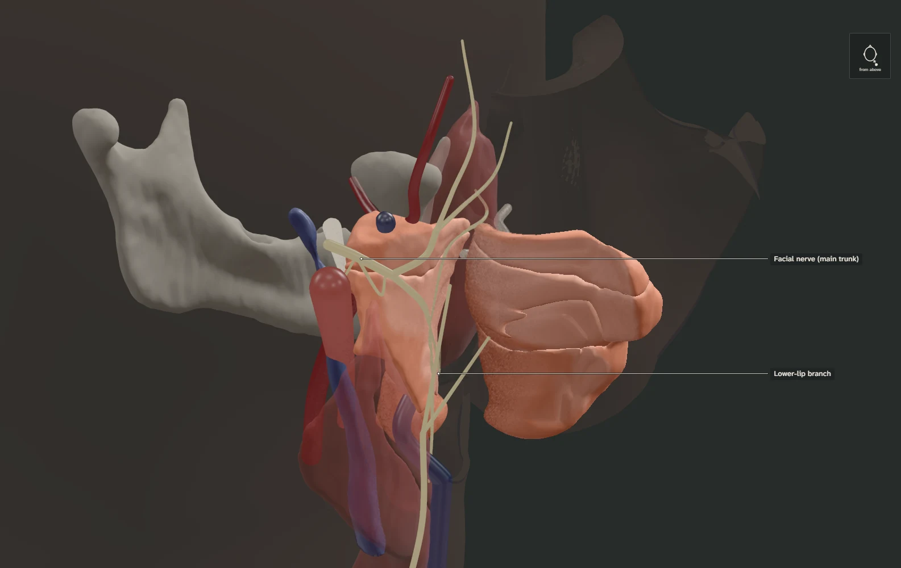
The whole outer lobe comes off the nerve, which now lies bare along the face of the inner part of the gland. [superficial-parotidectomy-definition]
Some surgeons would take less: one protocol holds that a cuff of normal gland around a benign tumour is all that is necessary, so how much to remove is a judgement. [cuff-sufficient-view]
Scene description (screen readers, static figure): The outer part of the gland has been folded right over and is held clear of the field, with the tumour inside it. Every branch of the nerve, from the trunk to the edge of the gland, lies on the inner part of the gland, untouched.
Claims
superficial-parotidectomy-definition standard-principle sources checked clinical review: pending
Essentials: A superficial parotidectomy removes the whole outer lobe of the gland, the part that lies outside the facial nerve.
Anatomy: Superficial parotidectomy is excision of the entire lateral segment of the gland, superficial to the facial nerve (ESGS levels I and II), with the nerve dissected throughout.
Clinical: It is typically reserved for medium-sized tumours that contact both main divisions, and for large tumours of the cranial part (level I) that contact the temporal branch and reach the main trunk. It can also be used for any benign tumour of the superficial lobe when extracapsular dissection would not ensure complete excision.
Limitations: Indications are from one review’s description of practice; the choice depends on the tumour and the surgeon.
- Zanghì A, Cavallaro A, Marchi M et al. 2024. Surgical management of benign tumors of the parotid gland: the advantages of extracapsular dissection compared to traditional surgical techniques. Front Surg. narrative-review [active], Introduction; Section 2 link
- Quer M, Guntinas-Lichius O, Marchal F et al. 2016. Classification of parotidectomies: a proposal of the European Salivary Gland Society. Eur Arch Otorhinolaryngol. consensus [active], Abstract link
cuff-sufficient-view varies-by-surgeon sources checked clinical review: pending
Essentials: Some surgeons argue that for a benign tumour a cuff of normal gland, not the whole outer lobe, is all that is needed, so the extent is a judgement.
Anatomy: One protocol states that removing a cuff of parotid tissue around the tumour, without a total lobectomy, is all that is necessary for benign tumours, that adequate resection may need part of the deep lobe, and that en bloc removal with a cuff is usually possible only for tumours in the tail.
Limitations: An institutional opinion, not a trial result; chapter 6 sets out how the evidence is split.
- University of Iowa Department of Otolaryngology . Parotidectomy with Facial Nerve Dissection. Iowa Head and Neck Protocols. institutional-protocol [active], Facial nerve dissection link
35. The specimen leaves the field The operation
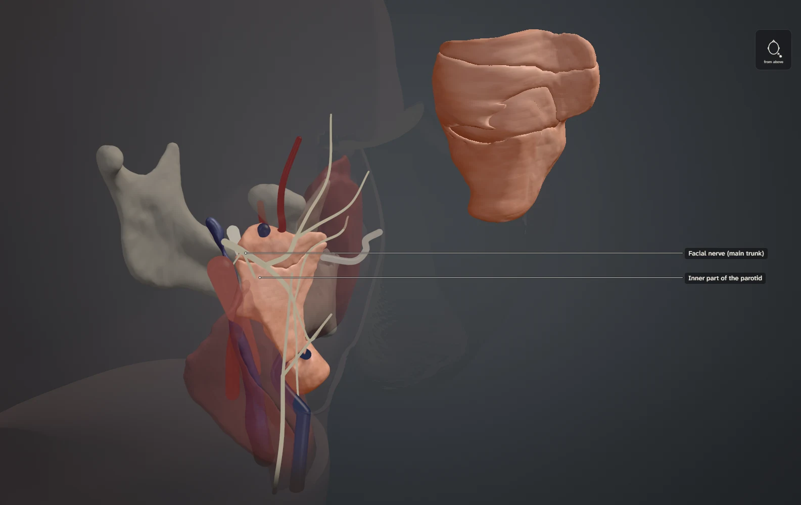
The removed tissue is marked so the pathologist knows which way it lay, and a small piece may be examined while the operation continues. [specimen-handling]
Scene description (screen readers, static figure): The outer part of the gland, with the tumour inside it, is lifted out of the wound and held above the field. Below, the nerve lies in its bed on the inner part of the gland, intact from the trunk to the edge.
Claims
specimen-handling representative-technique sources checked clinical review: pending
Essentials: The removed tissue is marked so the pathologist knows which way it lay, and a small piece may be examined while the operation continues.
Anatomy: The specimen is oriented and sent to pathology; frozen section may be taken when the diagnosis is uncertain, and the nerve (or a branch) is sacrificed only for malignancy, or rarely for repeatedly recurrent adenoma.
Limitations: One institution’s practice; the protocol itself notes that the accuracy of frozen section has been debated and depends on the pathologist.
- University of Iowa Department of Otolaryngology . Parotidectomy with Facial Nerve Dissection. Iowa Head and Neck Protocols. institutional-protocol [active], Completion of procedure; sample dictation link
36. The nerve in its bed Closing the wound
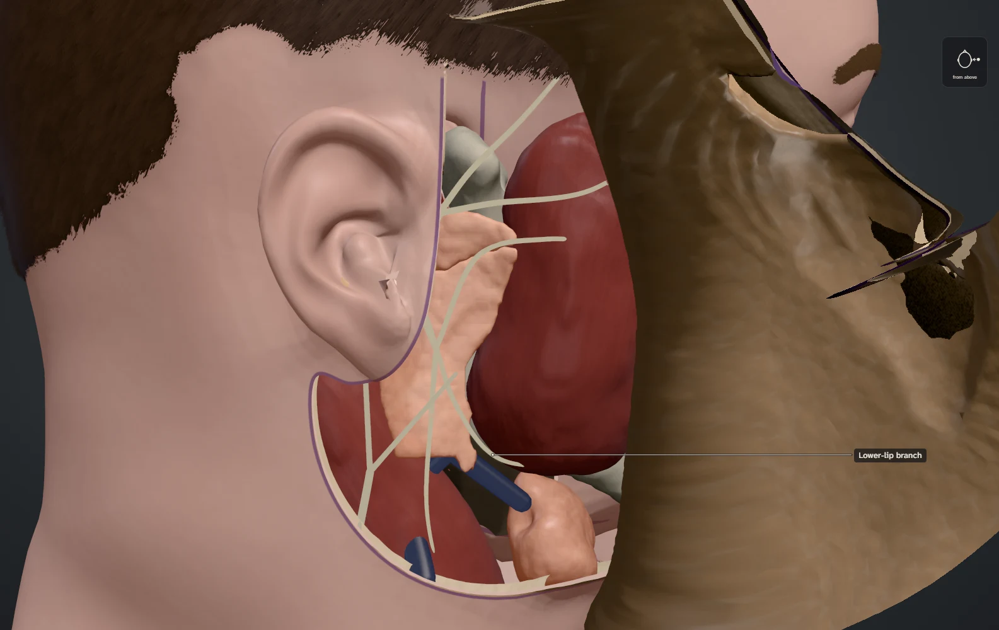
Before closing, the bleeding is controlled and the wound rinsed. If the nerve was kept, the surgeon checks again that stimulating it makes the face move. [bed-inspection]
One hospital's protocol states the principle that if the nerve was working before surgery, every effort is made to let it work afterwards, even if that means leaving a microscopic margin on it. [bed-inspection]
Scene description (screen readers, static figure): With the outer part of the gland gone, the nerve lies in the wound along the face of the inner part of the gland, from the trunk at the top to the branches fanning forward. The skin and fat are still folded forward over the cheek.
Checklist items
| Area | Statement | Compared against | Evidence | Self-review | Clinical |
|---|
| Closure | Closure options (SMAS flap, neck-muscle strip, graft sheet), a drain through a separate neck exit, and layered skin closure. | De Virgilio 2021; Dulguerov 2016; Ye 2019; Iowa protocol | docs/qc/m1-anatomy/checks.json | limit: The SMAS sheet is a hinged fold that does not drape onto the bed; the strip is a rigid turn; the graft is a plain sheet. The evidence compares options only indirectly and is of low certainty; the plates do not recommend one. | pending |
Claims
bed-inspection representative-technique sources checked clinical review: pending
Essentials: Before closing, the surgeon checks that the bed is dry and, where the nerve was kept, that it still works. In one hospital's protocol the aim is to keep a working nerve working, even if that means leaving a microscopic margin on it.
Anatomy: Bleeding is controlled with bipolar cautery and the wound is irrigated. If the nerve was kept, the operative note records whether stimulating it before closure produced the expected contraction of facial muscles.
Clinical: The University of Iowa protocol states the general principle that if the facial nerve is working before surgery every effort should be made to let it work after surgery, even if microscopic positive tumour margins are left on the nerve. It describes haemostasis with bipolar cautery followed by copious irrigation, and its sample operative note records whether the nerve was stimulated before closure and whether stimulation produced the expected contraction of facial muscles.
Limitations: One institution's protocol, not a standard; the 'leave a microscopic margin on the nerve' principle is stated there for a working nerve and is not a general rule for malignant tumours, for which the same protocol allows the nerve to be sacrificed.
- University of Iowa Department of Otolaryngology . Parotidectomy with Facial Nerve Dissection. Iowa Head and Neck Protocols. institutional-protocol [active], Completion of procedure; Sample dictation link
37. A layer in between: the SMAS flap Closing the wound
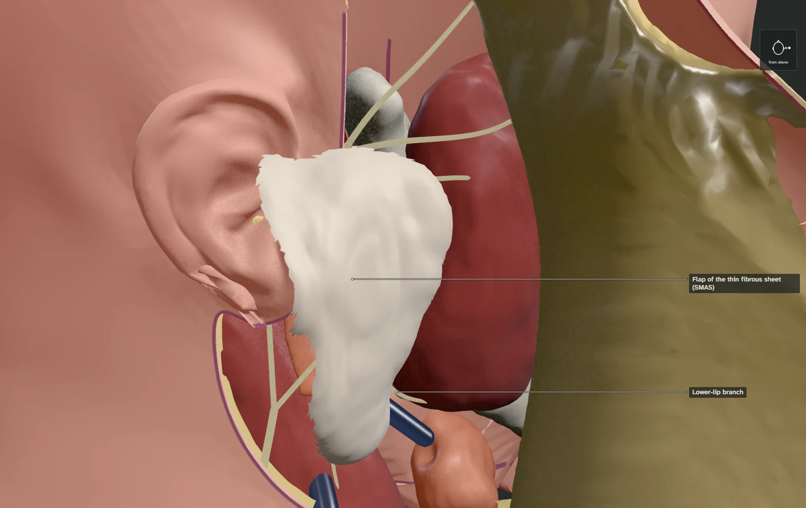
To lower the chance of Frey syndrome, surgeons can put a layer between the skin flap and the bed left by the gland. One option is the thin fibrous sheet that covers the gland (the SMAS), raised as a flap and sewn back. [barrier-options]
The sheet is drawn pale, hinged at its front edge. It is a schematic: laid back over the bed it would sag onto the tissue below.
This is one of several options, and the studies compare them only indirectly. [barrier-options]
[framed figures, claim barrier-options]
Scene description (screen readers, static figure): A thin pale sheet, attached at its front edge, is swinging back from the cheek over the space the outer gland has left, to cover the nerve and the inner gland.
Checklist items
| Area | Statement | Compared against | Evidence | Self-review | Clinical |
|---|
| Closure | Closure options (SMAS flap, neck-muscle strip, graft sheet), a drain through a separate neck exit, and layered skin closure. | De Virgilio 2021; Dulguerov 2016; Ye 2019; Iowa protocol | docs/qc/m1-anatomy/checks.json | limit: The SMAS sheet is a hinged fold that does not drape onto the bed; the strip is a rigid turn; the graft is a plain sheet. The evidence compares options only indirectly and is of low certainty; the plates do not recommend one. | pending |
Claims
barrier-options comparative-evidence sources checked clinical review: pending
Essentials: To lower the chance of Frey syndrome, surgeons can put a layer between the skin flap and the bed left by the gland: the thin fibrous sheet (SMAS) sewn back, a strip of neck muscle, a graft or a manufactured sheet. Each has some support in studies, none of it strong.
Anatomy: Barriers used between the raised skin flap and the parotid bed are the SMAS flap sutured back, a sternocleidomastoid muscle flap turned up from the neck, a temporoparietal fascia flap, a free fat graft and an acellular dermal matrix sheet.
Clinical: In a network meta-analysis of 3,830 patients, compared with no treatment the odds ratio of clinical Frey syndrome was 0.42 for the SMAS flap, 0.38 for the sternocleidomastoid flap, 0.09 for acellular dermal matrix, 0.11 for free fat graft and 0.07 for temporoparietal fascia flap. A meta-analysis of 11 mostly non-randomised studies found an odds ratio of 0.25 for the SMAS flap (random-effects, I-squared 85%). A Cochrane review of three randomised trials (124 participants) judged the evidence for graft interposition to be of low or very low certainty.
Clinical Frey syndrome after SMAS flap, versus no treatment (odds ratio): 0.42 OR (95% CI 0.19–0.97); Patients after parotidectomy in the studies pooled (median age 50 years), 3,830 patients in total; Systematic review and Bayesian network meta-analysis
Clinical Frey syndrome after sternocleidomastoid flap, versus no treatment (odds ratio): 0.38 OR (95% CI 0.18–0.73); Patients after parotidectomy in the studies pooled (median age 50 years), 3,830 patients in total; Systematic review and Bayesian network meta-analysis
Clinical Frey syndrome after acellular dermal matrix, versus no treatment (odds ratio): 0.09 OR (95% CI 0.02–0.35); Patients after parotidectomy in the studies pooled (median age 50 years), 3,830 patients in total; Systematic review and Bayesian network meta-analysis
Clinical Frey syndrome after free fat graft, versus no treatment (odds ratio): 0.11 OR (95% CI 0.03–0.42); Patients after parotidectomy in the studies pooled (median age 50 years), 3,830 patients in total; Systematic review and Bayesian network meta-analysis
Clinical Frey syndrome after temporoparietal fascia flap, versus no treatment (odds ratio): 0.07 OR (95% CI 0.004–0.57); Patients after parotidectomy in the studies pooled (median age 50 years), 3,830 patients in total; Systematic review and Bayesian network meta-analysis
Clinical Frey syndrome with SMAS flap versus classical parotidectomy (odds ratio): 0.25 OR (95% CI 0.09–0.66); Patients after parotidectomy with and without a SMAS flap, minimum follow-up 1 year, 11 studies; Meta-analysis, random-effects model (fixed-effect odds ratio 0.42, 0.32 to 0.56; I-squared 85%); studies mostly retrospective and not randomised
Disagreement: The network meta-analysis finds a clinical benefit for the SMAS and sternocleidomastoid flaps and for grafts; the Cochrane review, restricted to randomised trials, could not show one for the sternocleidomastoid flap or acellular dermal matrix, and found acellular dermal matrix may raise wound infection.
Limitations: Mostly retrospective, non-randomised studies with very high heterogeneity (I-squared 85% in the SMAS meta-analysis); the network meta-analysis ranks techniques indirectly and its authors call for randomised comparisons. The three randomised trials in the Cochrane review (124 participants, two at high risk of bias) found no clear difference for the sternocleidomastoid flap or for acellular dermal matrix, with very low-certainty evidence. The atlas draws the options as illustrations; it does not recommend one.
- De Virgilio A, Costantino A, Russo E et al. 2021. Different Surgical Strategies in the Prevention of Frey Syndrome: A Systematic Review and Meta-analysis. Laryngoscope. network-meta-analysis [active], Abstract, Results link
- Dulguerov N, Makni A, Dulguerov P 2016. The superficial musculoaponeurotic system flap in the prevention of Frey syndrome: A meta-analysis. Laryngoscope. meta-analysis [active], Abstract, Results link
- Ye L, Cao Y, Yang W et al. 2019. Graft interposition for preventing Frey's syndrome in patients undergoing parotidectomy. Cochrane Database Syst Rev. cochrane-review [active], Abstract, Main results and Authors' conclusions link
38. A layer in between: a strip of neck muscle Closing the wound
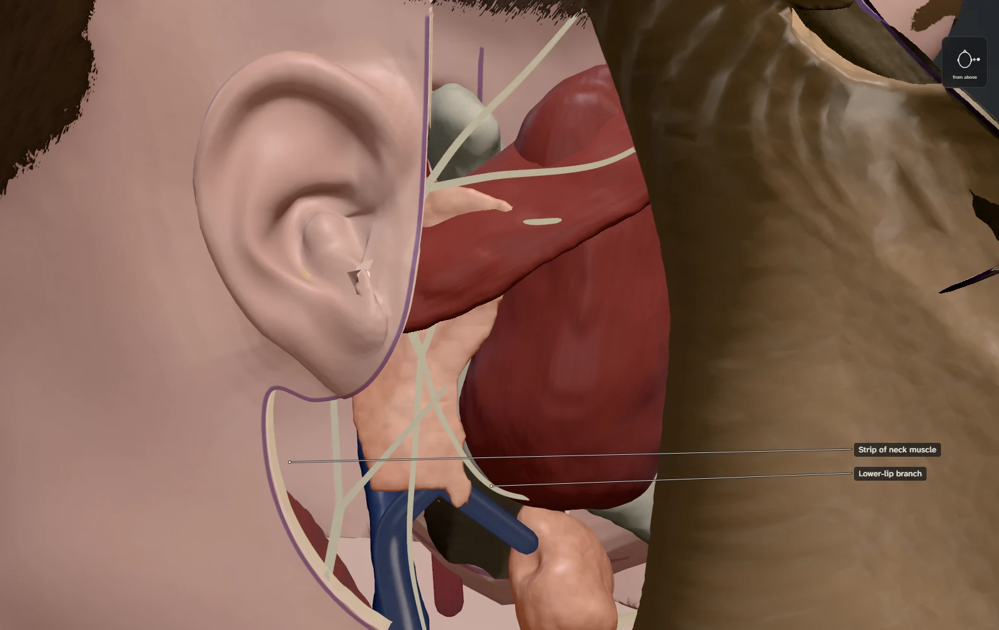
Another option is a strip of the large neck muscle, kept attached at its upper end and turned up into the space. [barrier-options]
The strip is drawn turned about its upper end, as a rigid piece; a real strip bends and is sewn in place.
[framed figures, claim barrier-options]
Scene description (screen readers, static figure): The SMAS sheet is gone. A strip cut from the front edge of the long neck muscle, still attached at its upper end, has been turned up and forward into the space the gland has left.
Checklist items
| Area | Statement | Compared against | Evidence | Self-review | Clinical |
|---|
| Closure | Closure options (SMAS flap, neck-muscle strip, graft sheet), a drain through a separate neck exit, and layered skin closure. | De Virgilio 2021; Dulguerov 2016; Ye 2019; Iowa protocol | docs/qc/m1-anatomy/checks.json | limit: The SMAS sheet is a hinged fold that does not drape onto the bed; the strip is a rigid turn; the graft is a plain sheet. The evidence compares options only indirectly and is of low certainty; the plates do not recommend one. | pending |
Claims
barrier-options comparative-evidence sources checked clinical review: pending
Essentials: To lower the chance of Frey syndrome, surgeons can put a layer between the skin flap and the bed left by the gland: the thin fibrous sheet (SMAS) sewn back, a strip of neck muscle, a graft or a manufactured sheet. Each has some support in studies, none of it strong.
Anatomy: Barriers used between the raised skin flap and the parotid bed are the SMAS flap sutured back, a sternocleidomastoid muscle flap turned up from the neck, a temporoparietal fascia flap, a free fat graft and an acellular dermal matrix sheet.
Clinical: In a network meta-analysis of 3,830 patients, compared with no treatment the odds ratio of clinical Frey syndrome was 0.42 for the SMAS flap, 0.38 for the sternocleidomastoid flap, 0.09 for acellular dermal matrix, 0.11 for free fat graft and 0.07 for temporoparietal fascia flap. A meta-analysis of 11 mostly non-randomised studies found an odds ratio of 0.25 for the SMAS flap (random-effects, I-squared 85%). A Cochrane review of three randomised trials (124 participants) judged the evidence for graft interposition to be of low or very low certainty.
Clinical Frey syndrome after SMAS flap, versus no treatment (odds ratio): 0.42 OR (95% CI 0.19–0.97); Patients after parotidectomy in the studies pooled (median age 50 years), 3,830 patients in total; Systematic review and Bayesian network meta-analysis
Clinical Frey syndrome after sternocleidomastoid flap, versus no treatment (odds ratio): 0.38 OR (95% CI 0.18–0.73); Patients after parotidectomy in the studies pooled (median age 50 years), 3,830 patients in total; Systematic review and Bayesian network meta-analysis
Clinical Frey syndrome after acellular dermal matrix, versus no treatment (odds ratio): 0.09 OR (95% CI 0.02–0.35); Patients after parotidectomy in the studies pooled (median age 50 years), 3,830 patients in total; Systematic review and Bayesian network meta-analysis
Clinical Frey syndrome after free fat graft, versus no treatment (odds ratio): 0.11 OR (95% CI 0.03–0.42); Patients after parotidectomy in the studies pooled (median age 50 years), 3,830 patients in total; Systematic review and Bayesian network meta-analysis
Clinical Frey syndrome after temporoparietal fascia flap, versus no treatment (odds ratio): 0.07 OR (95% CI 0.004–0.57); Patients after parotidectomy in the studies pooled (median age 50 years), 3,830 patients in total; Systematic review and Bayesian network meta-analysis
Clinical Frey syndrome with SMAS flap versus classical parotidectomy (odds ratio): 0.25 OR (95% CI 0.09–0.66); Patients after parotidectomy with and without a SMAS flap, minimum follow-up 1 year, 11 studies; Meta-analysis, random-effects model (fixed-effect odds ratio 0.42, 0.32 to 0.56; I-squared 85%); studies mostly retrospective and not randomised
Disagreement: The network meta-analysis finds a clinical benefit for the SMAS and sternocleidomastoid flaps and for grafts; the Cochrane review, restricted to randomised trials, could not show one for the sternocleidomastoid flap or acellular dermal matrix, and found acellular dermal matrix may raise wound infection.
Limitations: Mostly retrospective, non-randomised studies with very high heterogeneity (I-squared 85% in the SMAS meta-analysis); the network meta-analysis ranks techniques indirectly and its authors call for randomised comparisons. The three randomised trials in the Cochrane review (124 participants, two at high risk of bias) found no clear difference for the sternocleidomastoid flap or for acellular dermal matrix, with very low-certainty evidence. The atlas draws the options as illustrations; it does not recommend one.
- De Virgilio A, Costantino A, Russo E et al. 2021. Different Surgical Strategies in the Prevention of Frey Syndrome: A Systematic Review and Meta-analysis. Laryngoscope. network-meta-analysis [active], Abstract, Results link
- Dulguerov N, Makni A, Dulguerov P 2016. The superficial musculoaponeurotic system flap in the prevention of Frey syndrome: A meta-analysis. Laryngoscope. meta-analysis [active], Abstract, Results link
- Ye L, Cao Y, Yang W et al. 2019. Graft interposition for preventing Frey's syndrome in patients undergoing parotidectomy. Cochrane Database Syst Rev. cochrane-review [active], Abstract, Main results and Authors' conclusions link
39. A layer in between: a graft Closing the wound
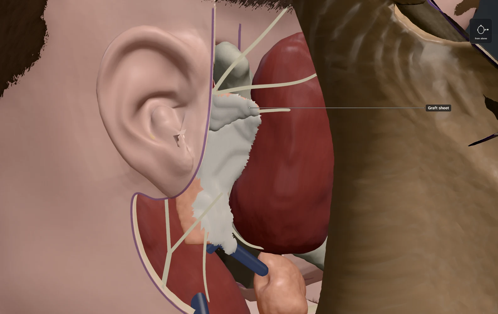
A third group of options is a graft: a sheet of the patient's own fat or fascia, or a manufactured sheet of dermal matrix, laid over the bed. [barrier-options]
The sheet is drawn plain; the atlas does not distinguish between the materials.
The only randomised trials gathered in a Cochrane review were small, and they found the evidence for grafts to be of low or very low certainty; a dermal matrix may raise the chance of wound infection. [barrier-options]
[framed figures, claim barrier-options]
[framed figures, claim barrier-options]
Scene description (screen readers, static figure): The muscle strip is back in place. A thin, plain sheet now lies over the inner gland and the nerve.
Checklist items
| Area | Statement | Compared against | Evidence | Self-review | Clinical |
|---|
| Closure | Closure options (SMAS flap, neck-muscle strip, graft sheet), a drain through a separate neck exit, and layered skin closure. | De Virgilio 2021; Dulguerov 2016; Ye 2019; Iowa protocol | docs/qc/m1-anatomy/checks.json | limit: The SMAS sheet is a hinged fold that does not drape onto the bed; the strip is a rigid turn; the graft is a plain sheet. The evidence compares options only indirectly and is of low certainty; the plates do not recommend one. | pending |
Claims
barrier-options comparative-evidence sources checked clinical review: pending
Essentials: To lower the chance of Frey syndrome, surgeons can put a layer between the skin flap and the bed left by the gland: the thin fibrous sheet (SMAS) sewn back, a strip of neck muscle, a graft or a manufactured sheet. Each has some support in studies, none of it strong.
Anatomy: Barriers used between the raised skin flap and the parotid bed are the SMAS flap sutured back, a sternocleidomastoid muscle flap turned up from the neck, a temporoparietal fascia flap, a free fat graft and an acellular dermal matrix sheet.
Clinical: In a network meta-analysis of 3,830 patients, compared with no treatment the odds ratio of clinical Frey syndrome was 0.42 for the SMAS flap, 0.38 for the sternocleidomastoid flap, 0.09 for acellular dermal matrix, 0.11 for free fat graft and 0.07 for temporoparietal fascia flap. A meta-analysis of 11 mostly non-randomised studies found an odds ratio of 0.25 for the SMAS flap (random-effects, I-squared 85%). A Cochrane review of three randomised trials (124 participants) judged the evidence for graft interposition to be of low or very low certainty.
Clinical Frey syndrome after SMAS flap, versus no treatment (odds ratio): 0.42 OR (95% CI 0.19–0.97); Patients after parotidectomy in the studies pooled (median age 50 years), 3,830 patients in total; Systematic review and Bayesian network meta-analysis
Clinical Frey syndrome after sternocleidomastoid flap, versus no treatment (odds ratio): 0.38 OR (95% CI 0.18–0.73); Patients after parotidectomy in the studies pooled (median age 50 years), 3,830 patients in total; Systematic review and Bayesian network meta-analysis
Clinical Frey syndrome after acellular dermal matrix, versus no treatment (odds ratio): 0.09 OR (95% CI 0.02–0.35); Patients after parotidectomy in the studies pooled (median age 50 years), 3,830 patients in total; Systematic review and Bayesian network meta-analysis
Clinical Frey syndrome after free fat graft, versus no treatment (odds ratio): 0.11 OR (95% CI 0.03–0.42); Patients after parotidectomy in the studies pooled (median age 50 years), 3,830 patients in total; Systematic review and Bayesian network meta-analysis
Clinical Frey syndrome after temporoparietal fascia flap, versus no treatment (odds ratio): 0.07 OR (95% CI 0.004–0.57); Patients after parotidectomy in the studies pooled (median age 50 years), 3,830 patients in total; Systematic review and Bayesian network meta-analysis
Clinical Frey syndrome with SMAS flap versus classical parotidectomy (odds ratio): 0.25 OR (95% CI 0.09–0.66); Patients after parotidectomy with and without a SMAS flap, minimum follow-up 1 year, 11 studies; Meta-analysis, random-effects model (fixed-effect odds ratio 0.42, 0.32 to 0.56; I-squared 85%); studies mostly retrospective and not randomised
Disagreement: The network meta-analysis finds a clinical benefit for the SMAS and sternocleidomastoid flaps and for grafts; the Cochrane review, restricted to randomised trials, could not show one for the sternocleidomastoid flap or acellular dermal matrix, and found acellular dermal matrix may raise wound infection.
Limitations: Mostly retrospective, non-randomised studies with very high heterogeneity (I-squared 85% in the SMAS meta-analysis); the network meta-analysis ranks techniques indirectly and its authors call for randomised comparisons. The three randomised trials in the Cochrane review (124 participants, two at high risk of bias) found no clear difference for the sternocleidomastoid flap or for acellular dermal matrix, with very low-certainty evidence. The atlas draws the options as illustrations; it does not recommend one.
- De Virgilio A, Costantino A, Russo E et al. 2021. Different Surgical Strategies in the Prevention of Frey Syndrome: A Systematic Review and Meta-analysis. Laryngoscope. network-meta-analysis [active], Abstract, Results link
- Dulguerov N, Makni A, Dulguerov P 2016. The superficial musculoaponeurotic system flap in the prevention of Frey syndrome: A meta-analysis. Laryngoscope. meta-analysis [active], Abstract, Results link
- Ye L, Cao Y, Yang W et al. 2019. Graft interposition for preventing Frey's syndrome in patients undergoing parotidectomy. Cochrane Database Syst Rev. cochrane-review [active], Abstract, Main results and Authors' conclusions link
40. A drain Closing the wound
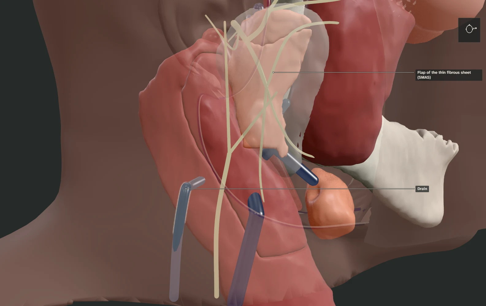
Many surgeons leave a thin soft tube, a drain, in the wound for a day or more to draw off blood and saliva. In one hospital's routine it comes out through a separate small cut in the neck, away from the nerve. [drain-technique]
The sheet shown here is only one of the options on the previous plates; the drain is drawn the same way with any of them.
[framed figures, claim drain-technique]
Scene description (screen readers, static figure): The skin is faded so the path shows. The SMAS sheet lies back over the bed. A thin soft tube lies in the space under it and runs down under the skin of the neck to leave through a separate small opening, away from the nerve.
Checklist items
| Area | Statement | Compared against | Evidence | Self-review | Clinical |
|---|
| Closure | Closure options (SMAS flap, neck-muscle strip, graft sheet), a drain through a separate neck exit, and layered skin closure. | De Virgilio 2021; Dulguerov 2016; Ye 2019; Iowa protocol | docs/qc/m1-anatomy/checks.json | limit: The SMAS sheet is a hinged fold that does not drape onto the bed; the strip is a rigid turn; the graft is a plain sheet. The evidence compares options only indirectly and is of low certainty; the plates do not recommend one. | pending |
Claims
drain-technique representative-technique sources checked clinical review: pending
Essentials: Many surgeons leave a thin soft tube, a drain, in the wound for a day or more to draw off blood and saliva. In one hospital's routine it comes out through a separate small cut in the neck, away from the nerve.
Anatomy: The drain lies in the space left by the gland and leaves through a stab incision in the neck so that it does not rest directly on the facial nerve.
Clinical: The University of Iowa protocol places a fully perforated flat Jackson-Pratt drain (size 10) through a stab incision in the neck, away from direct contact with the facial nerve. The suction drain stays at least 36 hours, longer if the output remains high; it is removed after three consecutive 8-hour shifts with under 30 mL (30 cc) in total. A Penrose drain with a tighter pressure dressing is the alternative the protocol describes. The protocol says only that closed suction for several days may possibly decrease the risk of seroma or salivary-cutaneous fistula.
Minimum time the suction drain stays in: 36 hours; Patients after parotidectomy with facial nerve dissection at one department; Institutional protocol (no outcome data)
Total output under which the drain is removed (three consecutive 8-hour shifts): 30 mL; Patients after parotidectomy with facial nerve dissection at one department; Institutional protocol (no outcome data)
Limitations: One institution's routine, not a standard. The protocol does not argue that a drain is needed, and surgeons differ in whether, how long and how they drain; the protocol's own complication percentages are unsourced and are not used here.
- University of Iowa Department of Otolaryngology . Parotidectomy with Facial Nerve Dissection. Iowa Head and Neck Protocols. institutional-protocol [active], Closure; Postoperative care; Suction drain management link
41. The wound is closed Closing the wound
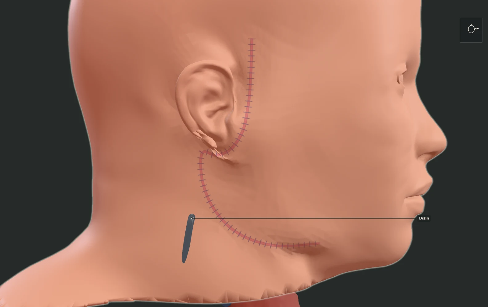
The wound is closed in layers: absorbable stitches under the skin and fine stitches in the skin itself, finer on the face than in the neck. [skin-closure]
The stitches are drawn as short dark ticks across the ink line.
Scene description (screen readers, static figure): The skin lies back in place. The violet ink line is crossed by short dark marks, the stitches, along the ear, the earlobe and the neck, and the drain leaves through its own small opening below.
Checklist items
| Area | Statement | Compared against | Evidence | Self-review | Clinical |
|---|
| Closure | Closure options (SMAS flap, neck-muscle strip, graft sheet), a drain through a separate neck exit, and layered skin closure. | De Virgilio 2021; Dulguerov 2016; Ye 2019; Iowa protocol | docs/qc/m1-anatomy/checks.json | limit: The SMAS sheet is a hinged fold that does not drape onto the bed; the strip is a rigid turn; the graft is a plain sheet. The evidence compares options only indirectly and is of low certainty; the plates do not recommend one. | pending |
Claims
skin-closure representative-technique sources checked clinical review: pending
Essentials: The wound is closed in layers, with fine stitches in the skin so the scar is neat.
Anatomy: Deep tissue and the skin are closed separately: absorbable stitches under the skin, and fine stitches in the skin itself, finer on the face than in the neck.
Clinical: The University of Iowa protocol closes the subcutaneous tissue with 3-0 or 4-0 absorbable sutures (Vicryl or chromic) and the skin with a combination of running and interrupted 5-0 nylon in the neck and 6-0 nylon on the face. A pressure dressing is used until the patient is awake and then removed if a suction drain is used.
Limitations: One institution's practice. Suture material, technique and dressing vary between surgeons.
- University of Iowa Department of Otolaryngology . Parotidectomy with Facial Nerve Dissection. Iowa Head and Neck Protocols. institutional-protocol [active], Completion of procedure link
42. What is gone and what remains Afterwards
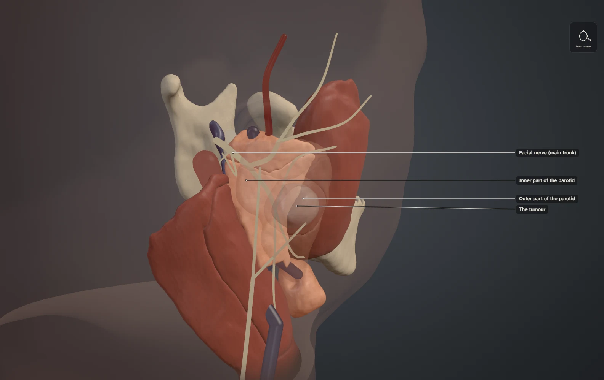
A superficial parotidectomy takes the whole outer lobe, the part that lies outside the facial nerve. The nerve, dissected along its length, stays. [superficial-parotidectomy-definition] The "lobes" are a surgical division defined by the plane of the nerve, not separate parts of the gland, so the inner part that remains is still gland tissue. [parotid-lobes-surgical]
The faint ghost shows where the removed tissue lay; nothing of it is left in the wound.
Scene description (screen readers, static figure): The skin is faded to an outline. The outer part of the gland and the tumour are drawn as a faint ghost where they used to be; they are gone. The nerve and the inner part of the gland, drawn solid, remain.
Checklist items
| Area | Statement | Compared against | Evidence | Self-review | Clinical |
|---|
| Afterwards | What is removed and what remains, the contour change, the specimen opened on the bench, and one hospital's routine day by day. | Lambiel 2021; Bovenzi 2019; Zbaren and Stauffer 2007; Iowa protocol | docs/qc/QC_LOG.md | limit: The hollow is drawn at an illustrative depth; the healing timeline is one institution's practice, not evidence; the specimen is a model of the pieces taken, not a section of a real tumour. | pending |
Claims
superficial-parotidectomy-definition standard-principle sources checked clinical review: pending
Essentials: A superficial parotidectomy removes the whole outer lobe of the gland, the part that lies outside the facial nerve.
Anatomy: Superficial parotidectomy is excision of the entire lateral segment of the gland, superficial to the facial nerve (ESGS levels I and II), with the nerve dissected throughout.
Clinical: It is typically reserved for medium-sized tumours that contact both main divisions, and for large tumours of the cranial part (level I) that contact the temporal branch and reach the main trunk. It can also be used for any benign tumour of the superficial lobe when extracapsular dissection would not ensure complete excision.
Limitations: Indications are from one review’s description of practice; the choice depends on the tumour and the surgeon.
- Zanghì A, Cavallaro A, Marchi M et al. 2024. Surgical management of benign tumors of the parotid gland: the advantages of extracapsular dissection compared to traditional surgical techniques. Front Surg. narrative-review [active], Introduction; Section 2 link
- Quer M, Guntinas-Lichius O, Marchal F et al. 2016. Classification of parotidectomies: a proposal of the European Salivary Gland Society. Eur Arch Otorhinolaryngol. consensus [active], Abstract link
parotid-lobes-surgical established-anatomy sources checked clinical review: pending
Essentials: The “lobes” of the parotid are not separate parts: surgeons call the tissue on the outer side of the nerve “superficial” and the rest “deep”.
Anatomy: The superficial and deep lobes are a surgical division defined by the plane of the facial nerve; by weight about two-thirds of the gland lies superficial to it, and most tumours arise there.
Clinical: In 19 specimens the lateral levels I and II together held 61–69% of the weight (ESGS levels, the ranges for levels I and II summed).
Gland weight lateral to the nerve plane (levels I + II, reported ranges summed): % (range 61–69); Human anatomical specimens, 19 specimens; Anatomical dissection study (sum of two reported ranges)
Limitations: A sum of ranges the paper reports for each level, not a figure it states; the model’s superficial share (59%) is reported against it, not tuned to it.
- Pujol-Olmo A, Mirapeix RM, Sañudo-Tejero JR et al. 2020. Description and relationships of the parotid gland levels proposed by the European Salivary Gland Society staging system: an anatomical study. Surg Radiol Anat. anatomical-study [active], Results link
- Zanghì A, Cavallaro A, Marchi M et al. 2024. Surgical management of benign tumors of the parotid gland: the advantages of extracapsular dissection compared to traditional surgical techniques. Front Surg. narrative-review [active] (indirect), Introduction link
43. The contour changes Afterwards
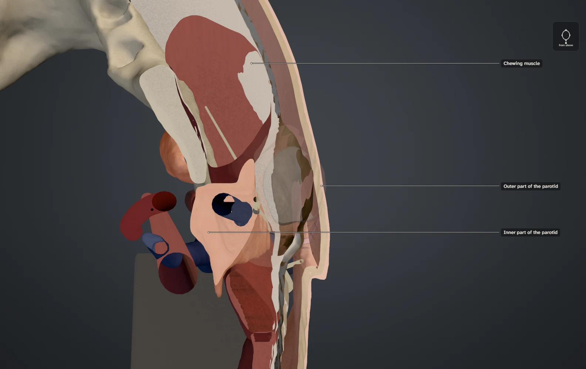
Taking out part of the gland can leave a visible hollow in the cheek. The space is sometimes filled, but in most operations it is not. [contour-after-resection]
The skin and fat are drawn sunk a few millimetres into the space the gland left; the depth is illustrative, not measured, and the faint ghost marks the removed tissue.
The view is from above, as on the scan plate.
[framed figures, claim contour-after-resection]
Scene description (screen readers, static figure): Seen from above, the head is cut flat at the level of the tumour, as on the scan plate. At the right edge the thin skin and the layer of fat beneath it dip inward over a gap, drawn as a faint ghost, where the outer part of the gland used to lie; the chewing muscle and the inner gland lie behind it.
Checklist items
| Area | Statement | Compared against | Evidence | Self-review | Clinical |
|---|
| Afterwards | What is removed and what remains, the contour change, the specimen opened on the bench, and one hospital's routine day by day. | Lambiel 2021; Bovenzi 2019; Zbaren and Stauffer 2007; Iowa protocol | docs/qc/QC_LOG.md | limit: The hollow is drawn at an illustrative depth; the healing timeline is one institution's practice, not evidence; the specimen is a model of the pieces taken, not a section of a real tumour. | pending |
Claims
contour-after-resection comparative-evidence sources checked clinical review: pending
Essentials: Taking out part of the gland can leave a visible hollow in the cheek. The space is sometimes filled, but in most operations it is not.
Anatomy: A reduction in the volume of the cheek after the gland is removed is called a contour deformity. Reconstruction of the volume or contour is done to address it.
Clinical: A systematic review of 235 studies pooled a deformity rate of 11.8% (95% CI 6.9 to 19.5), with aesthetic problems worse after more extensive resections. In a US database of 11,057 parotidectomies, volume or contour reconstruction was relatively uncommon, at 18%.
Deformity after parotidectomy: 11.8 % (95% CI 6.9–19.5); Patients in studies of parotidectomy reporting minor complications, 235 studies in total; Systematic review, pooled incidence (descriptive statistics)
Volume or contour reconstruction at parotidectomy: 18 %; Patients in the US ACS-NSQIP database having parotidectomy, 2012 to 2017, of 11,057 patients; Retrospective database review identified by procedure codes
Limitations: How deformity was defined and graded differed between the pooled studies, and the database counts only what was coded, so the 18% may under-report. The hollow in the model is drawn at an illustrative depth, not a measured one.
- Lambiel S, Dulguerov N, Courvoisier DS et al. 2021. Minor Parotidectomy Complications: A Systematic Review. Laryngoscope. systematic-review [active], Abstract, Results link
- Bovenzi CD, Ciolek P, Crippen M et al. 2019. Reconstructive trends and complications following parotidectomy: incidence and predictors in 11,057 cases. J Otolaryngol Head Neck Surg. cohort [active], Abstract, Background and Results link
44. The specimen on the bench Afterwards
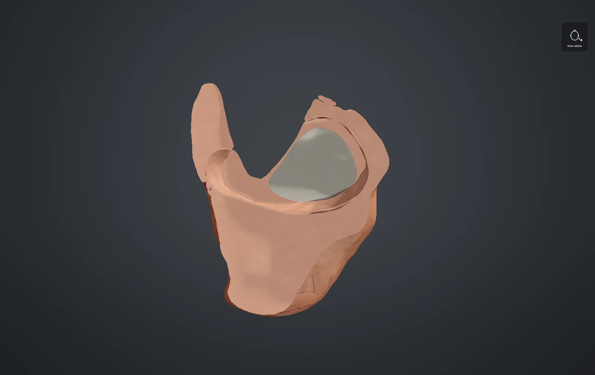
The removed tissue is marked so the pathologist knows which way it lay, and a small piece may be examined while the operation continues. [specimen-handling]
The tumour's outer layer is often thin or incomplete, and finger-like extensions can reach beyond it; that is why surgeons take a cuff of normal gland. [pa-capsule-features]
[inset: What the pathologist looks for at the tumour's edge]
[PseudocapsuleInset]
The drawing above is a schematic of the features, not a section of a real tumour.
Scene description (screen readers, static figure): The removed outer lobe lies on its own against the plain background, opened along a cut. The tumour shows grey-white inside a rim of normal gland, with violet ink marking the edges of the pieces.
Checklist items
| Area | Statement | Compared against | Evidence | Self-review | Clinical |
|---|
| Afterwards | What is removed and what remains, the contour change, the specimen opened on the bench, and one hospital's routine day by day. | Lambiel 2021; Bovenzi 2019; Zbaren and Stauffer 2007; Iowa protocol | docs/qc/QC_LOG.md | limit: The hollow is drawn at an illustrative depth; the healing timeline is one institution's practice, not evidence; the specimen is a model of the pieces taken, not a section of a real tumour. | pending |
Claims
specimen-handling representative-technique sources checked clinical review: pending
Essentials: The removed tissue is marked so the pathologist knows which way it lay, and a small piece may be examined while the operation continues.
Anatomy: The specimen is oriented and sent to pathology; frozen section may be taken when the diagnosis is uncertain, and the nerve (or a branch) is sacrificed only for malignancy, or rarely for repeatedly recurrent adenoma.
Limitations: One institution’s practice; the protocol itself notes that the accuracy of frozen section has been debated and depends on the pathologist.
- University of Iowa Department of Otolaryngology . Parotidectomy with Facial Nerve Dissection. Iowa Head and Neck Protocols. institutional-protocol [active], Completion of procedure; sample dictation link
pa-capsule-features established-anatomy sources checked clinical review: pending
Essentials: A pleomorphic adenoma’s outer layer is often thin or incomplete, and small finger-like extensions can reach beyond it, which is why surgeons take a cuff of normal gland rather than shelling the tumour out.
Anatomy: Most pleomorphic adenomas have at least one capsular feature: an incomplete capsule, penetration of the capsule, pseudopodia or satellite nodules. Left in the surrounding gland, pseudopodia and satellite tumours can cause recurrence.
Clinical: Of 218 resected parotid pleomorphic adenomas, 73% had at least one capsular feature: incomplete capsule in 33%, capsular penetration in 26%, pseudopodia in 40% and satellite nodules in 13%. Incomplete capsule and satellites were commonest in the stroma-rich (myxoid) subtype.
At least one capsular feature: 73 %; Resected parotid pleomorphic adenomas, retrospective and prospective, 160 of 218; Histopathological analysis
Incomplete capsule: 33 %; Resected parotid pleomorphic adenomas, retrospective and prospective, of 218; Histopathological analysis
Capsular penetration: 26 %; Resected parotid pleomorphic adenomas, retrospective and prospective, of 218; Histopathological analysis
Pseudopodia: 40 %; Resected parotid pleomorphic adenomas, retrospective and prospective, of 218; Histopathological analysis
Satellite nodules: 13 %; Resected parotid pleomorphic adenomas, retrospective and prospective, of 218; Histopathological analysis
Limitations: One centre’s series of resected tumours; the authors report these features are more common than earlier literature suggested, and that the prospective group had more pseudopodia and capsular penetration. The inset drawing is a schematic of these features, not a section of a real tumour.
- Zbären P, Stauffer E 2007. Pleomorphic adenoma of the parotid gland: histopathologic analysis of the capsular characteristics of 218 tumors. Head Neck. case-series [active], Abstract link
- Dulguerov P, Todic J, Pusztaszeri M et al. 2017. Why Do Parotid Pleomorphic Adenomas Recur? A Systematic Review of Pathological and Surgical Variables. Front Surg. systematic-review [active], Abstract link
45. Healing Afterwards
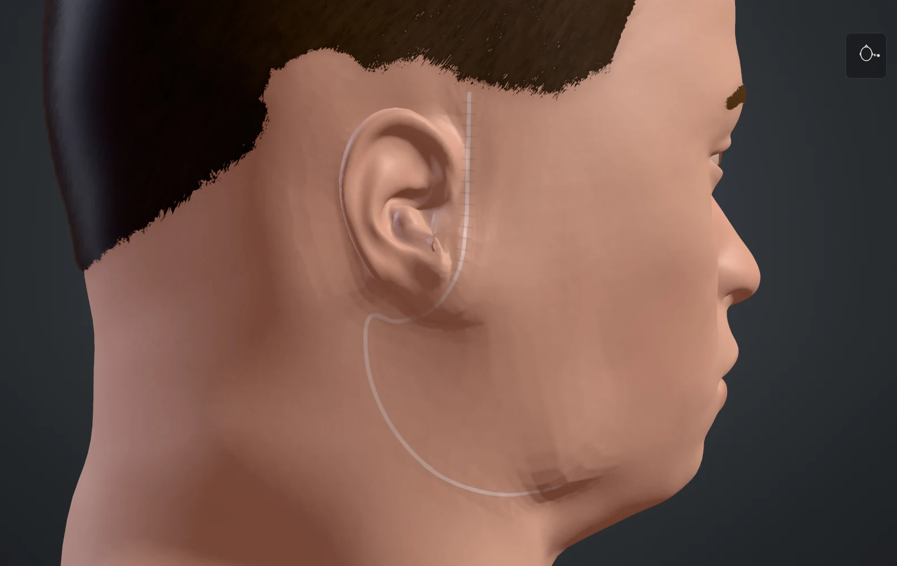
In one hospital's routine the dressing comes off once the patient is awake, they can go home the next day with the drain, and the stitches and drain come out about six days after the operation. [postop-timeline]
[inset: One hospital's routine, day by day]
[HealingTimeline]
The timeline describes one institution's practice, not a standard. The fading of the stitches and scar in the picture is not drawn to any time scale.
Scene description (screen readers, static figure): The same cheek seen from the side, with the stitches fading and the scar line pale. A timeline beside the text lists one hospital's routine, from the dressing on the day of the operation to the removal of the stitches and the drain.
Checklist items
| Area | Statement | Compared against | Evidence | Self-review | Clinical |
|---|
| Afterwards | What is removed and what remains, the contour change, the specimen opened on the bench, and one hospital's routine day by day. | Lambiel 2021; Bovenzi 2019; Zbaren and Stauffer 2007; Iowa protocol | docs/qc/QC_LOG.md | limit: The hollow is drawn at an illustrative depth; the healing timeline is one institution's practice, not evidence; the specimen is a model of the pieces taken, not a section of a real tumour. | pending |
Claims
postop-timeline representative-technique sources checked clinical review: pending
Essentials: In one hospital's routine the dressing comes off once the patient is awake, they can go home the next day with the drain, and the stitches and drain come out about six days after the operation.
Anatomy: The wound is looked at once the patient has fully woken; the suction drain stays in at least 36 hours and is taken out once its output is low.
Clinical: The University of Iowa protocol exposes the wound by removing the pressure dressing after full emergence from anaesthesia. The suction drain stays in at least 36 hours and is removed after three consecutive 8-hour shifts with under 30 mL in total. After demonstrating proficiency with the drain the patient may be discharged on postoperative day 1 and return on day 6 for suture and drain removal.
Postoperative day of discharge with the drain: 1 days; Patients after parotidectomy with facial nerve dissection at one department who can manage the drain; Institutional protocol (no outcome data)
Postoperative day of suture and drain removal: 6 days; Patients after parotidectomy with facial nerve dissection at one department; Institutional protocol (no outcome data)
Limitations: One institution's routine, not a standard. A systematic review of same-day against inpatient parotidectomy exists, but its selected, non-randomised comparison is not used here.
- University of Iowa Department of Otolaryngology . Parotidectomy with Facial Nerve Dissection. Iowa Head and Neck Protocols. institutional-protocol [active], Postoperative care; Suction drain management link
46. Where things can go wrong When things go wrong
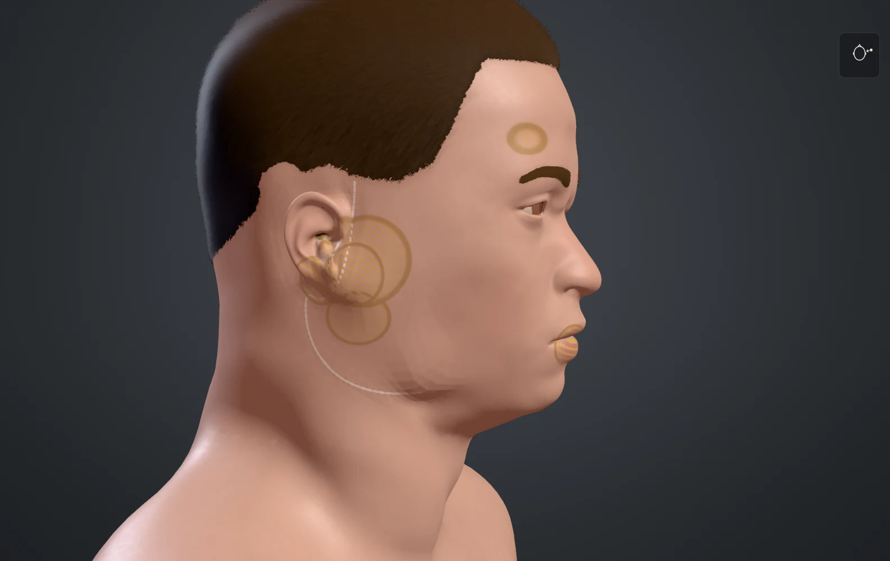
Besides the major risks, a number of smaller problems are common after parotid surgery: numbness is the most frequent, followed by a visible hollow, collections of blood or saliva, and wound problems. [minor-complications]
Each hatched ochre patch marks where a problem is felt. The next plates show the structure behind each one. Ochre is used only in this chapter, and the patches are simplifications, not measured territories.
[framed figures, claim minor-complications]
Scene description (screen readers, static figure): The healed right side of the face, seen from the side with the skin closed. Five hatched ochre patches mark places where a problem is felt: the earlobe, the forehead, the lower lip, the cheek in front of the ear, and the skin over the gland.
Checklist items
| Area | Statement | Compared against | Evidence | Self-review | Clinical |
|---|
| Complications | Each complication is mapped to the structure responsible and to the skin where it is felt, with every rate shown with its population. | Jin 2019; Bron and O'Brien 1997; Mortensen 2024; Lambiel 2021; Choi 2013; Linkov 2012; Lammek 2021; Britt 2017; Dulguerov 2017; Hintze 2021 | docs/qc/m1-anatomy/checks.json | limit: Territories are ellipsoids, not measured boundaries; Frey regrowth, the saliva collection and the returning nodules are schematic. Rates differ several-fold between series and are shown, not reconciled. | pending |
Claims
minor-complications comparative-evidence sources checked clinical review: pending
Essentials: Besides the major risks, a number of smaller problems are common after parotid surgery: numbness is the most frequent, followed by a visible hollow, collections of blood or saliva, and wound problems.
Anatomy: The pooled minor complications are haematoma, wound infection, sialocele, salivary fistula, loss of skin of the flap, scar problems, numbness and deformity. Sialocele and fistula are more frequent after less extensive operations, while haematoma, infection, flap necrosis and aesthetic problems are worse after more extensive ones.
Clinical: In a systematic review of 235 studies the pooled incidence was haematoma 2.9%, wound infection 2.3%, sialocele 4.5%, salivary fistula 3.1%, flap necrosis 1.7%, scar problems 3.6%, numbness 33.9% and deformity 11.8%. A US database of 11,057 parotidectomies found 30-day surgical complications in 3.8% and surgical site infection in 2.7%.
Haematoma: 2.9 % (95% CI 2.4–3.5); Patients in studies of parotidectomy reporting minor complications, 235 studies in total; Systematic review, pooled incidence
Wound infection: 2.3 % (95% CI 1.8–2.9); Patients in studies of parotidectomy reporting minor complications, 235 studies in total; Systematic review, pooled incidence
Sialocele: 4.5 % (95% CI 3.5–5.7); Patients in studies of parotidectomy reporting minor complications, 235 studies in total; Systematic review, pooled incidence
Salivary fistula: 3.1 % (95% CI 2.6–3.7); Patients in studies of parotidectomy reporting minor complications, 235 studies in total; Systematic review, pooled incidence
Flap necrosis: 1.7 % (95% CI 1.1–2.5); Patients in studies of parotidectomy reporting minor complications, 235 studies in total; Systematic review, pooled incidence
Scar problems: 3.6 % (95% CI 2.4–5.4); Patients in studies of parotidectomy reporting minor complications, 235 studies in total; Systematic review, pooled incidence
Numbness: 33.9 % (95% CI 25.6–43.4); Patients in studies of parotidectomy reporting minor complications, 235 studies in total; Systematic review, pooled incidence
Deformity: 11.8 % (95% CI 6.9–19.5); Patients in studies of parotidectomy reporting minor complications, 235 studies in total; Systematic review, pooled incidence
Surgical complications within 30 days: 3.8 %; Patients in the US ACS-NSQIP database having parotidectomy, 2012 to 2017, of 11,057 patients; Retrospective database review
Surgical site infection within 30 days: 2.7 %; Patients in the US ACS-NSQIP database having parotidectomy, 2012 to 2017, of 11,057 patients; Retrospective database review
Limitations: The pooled figures come from studies that define and detect each problem differently (numbness especially varies with how it is tested), and the review authors note that minor complications are more frequent than generally assumed. The database captures only the first 30 days.
- Lambiel S, Dulguerov N, Courvoisier DS et al. 2021. Minor Parotidectomy Complications: A Systematic Review. Laryngoscope. systematic-review [active], Abstract, Results link
- Bovenzi CD, Ciolek P, Crippen M et al. 2019. Reconstructive trends and complications following parotidectomy: incidence and predictors in 11,057 cases. J Otolaryngol Head Neck Surg. cohort [active], Abstract, Results link
47. Weakness of the face When things go wrong
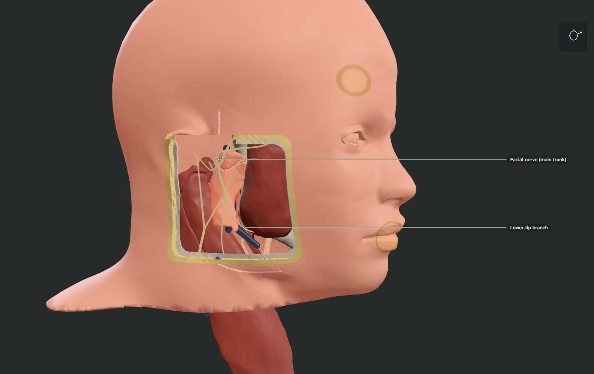
Each group of branches moves a different part of the face: the temporal and zygomatic branches the forehead and eyelids, the buccal branch the cheek and upper lip, and the marginal mandibular branch the lower lip. [fn-branch-targets] Temporary weakness of part of the face is fairly common after parotid surgery and usually recovers; lasting weakness is much less common. The risk is higher with more extensive surgery, older age, a cancer, a repeat operation and a tumour in the deep part of the gland. [weakness-rates]
The patches show which part of the face each branch serves. They do not say which branch is hurt in any one patient.
[framed figures, claim weakness-rates]
[framed figures, claim weakness-rates]
[framed figures, claim weakness-rates]
Scene description (screen readers, static figure): A window through the skin shows the nerve's branches fanning out over the inner gland. Two ochre patches mark where weakness shows: the forehead above the eyebrow, and the lower lip.
Checklist items
| Area | Statement | Compared against | Evidence | Self-review | Clinical |
|---|
| Complications | Each complication is mapped to the structure responsible and to the skin where it is felt, with every rate shown with its population. | Jin 2019; Bron and O'Brien 1997; Mortensen 2024; Lambiel 2021; Choi 2013; Linkov 2012; Lammek 2021; Britt 2017; Dulguerov 2017; Hintze 2021 | docs/qc/m1-anatomy/checks.json | limit: Territories are ellipsoids, not measured boundaries; Frey regrowth, the saliva collection and the returning nodules are schematic. Rates differ several-fold between series and are shown, not reconciled. | pending |
Claims
fn-branch-targets established-anatomy sources checked clinical review: pending
Essentials: Each group moves a different part of the face: the temporal and zygomatic branches the forehead and eyelids, the buccal branch the cheek and upper lip, and the marginal mandibular branch the lower lip.
Anatomy: Monitoring electrodes are placed over the frontalis (temporal branch), the orbicularis oculi (temporal and zygomatic), the orbicularis oris at the upper lip (buccal) and the mentalis at the lower lip (marginal mandibular). Marginal mandibular weakness shows as a lower lip and corner of the mouth that does not pull down.
Clinical: The marginal mandibular branch is the one most often affected after parotidectomy.
Limitations: Described from the placement of monitoring electrodes and one centre’s introduction, not from a mapping study; branches overlap and share muscles, and the cervical branch is not covered by these sources.
- Cristofaro MG, Colangeli W, Ferragina F et al. 2024. Facial Nerve Injury after Extracapsular Dissection for Benign Parotid Tumors with and without Intraoperative Monitoring: A Retrospective Study of a Single Center. Diagnostics (Basel). cohort [active], Methods, monitoring link
- Otanez ES, Fernandez Trokhimtchouk T, Semanate F et al. 2024. Incidence of Facial Nerve Paralysis After Parotidectomy: Our Experience. Cureus. case-series [active], Introduction link
weakness-rates comparative-evidence sources checked clinical review: pending
Essentials: Temporary weakness of part of the face is fairly common after parotid surgery and usually recovers; lasting weakness is much less common. The risk is higher with more extensive surgery, older age, a cancer, a repeat operation and a tumour in the deep part of the gland.
Anatomy: Weakness shows in the part of the face supplied by the affected branch. In one series lasting weakness mainly affected the marginal mandibular branch, but 10 of its 13 cases also had a neck dissection.
Clinical: A 2019 series of 794 parotidectomies with CT, nerve monitoring and magnification reported temporary weakness in 9.2% and permanent weakness (over 6 months) in 5.2%; old age, malignancy, recurrent tumours and tumours involving both lobes were independent risk factors, tumour size was not. A 1997 series of 259 parotidectomies found early weakness in 29% when the nerve was preserved, 16.5% after limited superficial parotidectomy for benign superficial tumours, and recovery within 6 months in 68%. A 2024 single-centre series of 160 benign parotidectomies reported 3.75% facial nerve palsy and no total paralysis.
Temporary facial weakness: 9.2 %; Patients having parotidectomy for benign and malignant parotid tumours at one centre, 2009 to 2016, with CT, nerve monitoring and magnification, 794 parotidectomies; Retrospective single-centre cohort
Permanent facial weakness (over 6 months): 5.2 %; Patients having parotidectomy for benign and malignant parotid tumours at one centre, 2009 to 2016, with CT, nerve monitoring and magnification, 794 parotidectomies; Retrospective single-centre cohort
Early facial weakness with the nerve preserved: 29 %; Patients with normal facial nerve function before surgery whose nerve was preserved, one surgeon, 1987 to 1995, 230 parotidectomies; Review of prospectively collected single-surgeon data
Early facial weakness after limited superficial parotidectomy for a benign superficial-lobe tumour: 16.5 %; Patients with benign tumours in the superficial lobe, one surgeon, 1987 to 1995; Review of prospectively collected single-surgeon data
Early weakness recovered within 6 months: 68 %; Patients with initial weakness, one surgeon, 1987 to 1995, 46 of 67; Review of prospectively collected single-surgeon data
Facial nerve palsy after parotidectomy for benign disease: 3.75 %; Patients having parotid surgery for benign tumours at one university hospital over 3 years, excluding prior parotid surgery or preoperative palsy, 160 patients; Single-centre retrospective quality project
Disagreement: Rates of weakness differ several-fold between series, from 3.75% in a recent benign-only series to 29% early weakness in the older series; the studies do not agree on one number.
Limitations: Single-centre, mostly retrospective series with different definitions of weakness, populations (benign only, or benign and malignant) and follow-up, so the rates cannot be combined or compared with one another. The 1997 permanent-weakness figure (5.6%) is not shown because 10 of its 13 cases had a simultaneous neck dissection. The Jin abstract cites a range of 14 to 65% for immediate weakness in the literature.
- Jin H, Kim BY, Kim H et al. 2019. Incidence of postoperative facial weakness in parotid tumor surgery: a tumor subsite analysis of 794 parotidectomies. BMC Surg. cohort [active], Abstract, Results link
- Bron LP, O'Brien CJ 1997. Facial nerve function after parotidectomy. Arch Otolaryngol Head Neck Surg. case-series [active], Abstract, Results link
- Mortensen NB, Bjørndal K 2024. The risk of facial nerve palsy after benign parotidectomy. A quality project. Acta Otolaryngol. case-series [active], Abstract, Results link
48. A numb earlobe When things go wrong
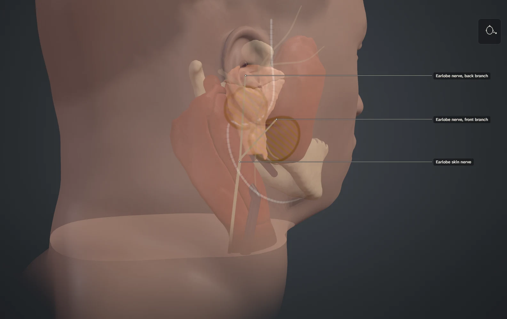
A skin nerve for the earlobe crosses the neck muscle toward the ear and divides into a front and a back branch; the operation often numbs part of the earlobe. [great-auricular-nerve-course] The back branch can often be kept, and keeping it is linked with better feeling in the earlobe afterwards. [gan-preservation]
Across 235 studies numbness was the most frequent minor problem, though it was defined and tested differently from study to study. [minor-complications]
[framed figures, claim minor-complications]
[framed figures, claim gan-preservation]
Scene description (screen readers, static figure): The skin is drawn see-through. Behind and below the gland a thin nerve climbs over the neck muscle and splits in two near the earlobe, one branch in front and one behind. Ochre patches mark the earlobe and the skin over the lower part of the gland, which these branches supply.
Checklist items
| Area | Statement | Compared against | Evidence | Self-review | Clinical |
|---|
| Complications | Each complication is mapped to the structure responsible and to the skin where it is felt, with every rate shown with its population. | Jin 2019; Bron and O'Brien 1997; Mortensen 2024; Lambiel 2021; Choi 2013; Linkov 2012; Lammek 2021; Britt 2017; Dulguerov 2017; Hintze 2021 | docs/qc/m1-anatomy/checks.json | limit: Territories are ellipsoids, not measured boundaries; Frey regrowth, the saliva collection and the returning nodules are schematic. Rates differ several-fold between series and are shown, not reconciled. | pending |
Claims
great-auricular-nerve-course representative-technique sources checked clinical review: pending
Essentials: A skin nerve for the earlobe lies on the neck muscle below the gland and is often numbed by the operation; its back branches can usually be kept.
Anatomy: The great auricular nerve lies on the sternocleidomastoid and divides into branches; the posterior branches supplying the lower ear can be preserved in the majority of cases. The skin cut about the earlobe can injure its small superficial branches. Numbness about the incision and the ear is a described consequence.
Limitations: One institution's protocol; how often the nerve is preserved and how often numbness follows are given by other claims (gan-preservation, minor-complications).
- University of Iowa Department of Otolaryngology . Parotidectomy with Facial Nerve Dissection. Iowa Head and Neck Protocols. institutional-protocol [active], Operative procedure; Describe expected sequelae link
gan-preservation comparative-evidence sources checked clinical review: pending
Essentials: The nerve that gives feeling to the earlobe can often be kept; when it is cut, the numbness can last a long time.
Anatomy: In a prospective trial the posterior branches of the great auricular nerve could be preserved in most patients without compromising the tumour clearance; their sensation recovered, while after division a measurable loss persisted for up to two years.
Clinical: Hui 2003 (81 patients): preservation was achievable in 69%, the deficit was transient when preserved, and preservation took about ten minutes longer. Vieira 2002 (30 patients randomised): tactile sensitivity returned to the preoperative level by six months in the preservation group and recovered only partly in the sacrifice group. Other series have found no significant difference.
Great auricular nerve branches preserved: 69 %; Patients having parotidectomy at one university department, of 81 patients; Prospective controlled double-blind trial
Disagreement: Some studies report no significant difference in sensation between preserving and dividing the nerve (as summarised in Lorenz 2013).
Limitations: Small trials; the branches were preserved only when tumour clearance was not compromised. Lorenz 2013 reports that two other studies found no significant difference between preservation and division, so the benefit is not universal.
- Hui Y, Wong DS, Wong LY et al. 2003. A prospective controlled double-blind trial of great auricular nerve preservation at parotidectomy. Am J Surg. randomised-trial [active], Abstract link
- Vieira MB, Maia AF, Ribeiro JC 2002. Randomized prospective study of the validity of the great auricular nerve preservation in parotidectomy. Arch Otolaryngol Head Neck Surg. randomised-trial [active], Abstract link
- Lorenz KJ, Behringer PA, Höcherl D et al. 2013. Improving the quality of life of parotid surgery patients through a modified facelift incision and great auricular nerve preservation. GMS Interdiscip Plast Reconstr Surg DGPW. case-series [active] (indirect), Discussion link
minor-complications comparative-evidence sources checked clinical review: pending
Essentials: Besides the major risks, a number of smaller problems are common after parotid surgery: numbness is the most frequent, followed by a visible hollow, collections of blood or saliva, and wound problems.
Anatomy: The pooled minor complications are haematoma, wound infection, sialocele, salivary fistula, loss of skin of the flap, scar problems, numbness and deformity. Sialocele and fistula are more frequent after less extensive operations, while haematoma, infection, flap necrosis and aesthetic problems are worse after more extensive ones.
Clinical: In a systematic review of 235 studies the pooled incidence was haematoma 2.9%, wound infection 2.3%, sialocele 4.5%, salivary fistula 3.1%, flap necrosis 1.7%, scar problems 3.6%, numbness 33.9% and deformity 11.8%. A US database of 11,057 parotidectomies found 30-day surgical complications in 3.8% and surgical site infection in 2.7%.
Haematoma: 2.9 % (95% CI 2.4–3.5); Patients in studies of parotidectomy reporting minor complications, 235 studies in total; Systematic review, pooled incidence
Wound infection: 2.3 % (95% CI 1.8–2.9); Patients in studies of parotidectomy reporting minor complications, 235 studies in total; Systematic review, pooled incidence
Sialocele: 4.5 % (95% CI 3.5–5.7); Patients in studies of parotidectomy reporting minor complications, 235 studies in total; Systematic review, pooled incidence
Salivary fistula: 3.1 % (95% CI 2.6–3.7); Patients in studies of parotidectomy reporting minor complications, 235 studies in total; Systematic review, pooled incidence
Flap necrosis: 1.7 % (95% CI 1.1–2.5); Patients in studies of parotidectomy reporting minor complications, 235 studies in total; Systematic review, pooled incidence
Scar problems: 3.6 % (95% CI 2.4–5.4); Patients in studies of parotidectomy reporting minor complications, 235 studies in total; Systematic review, pooled incidence
Numbness: 33.9 % (95% CI 25.6–43.4); Patients in studies of parotidectomy reporting minor complications, 235 studies in total; Systematic review, pooled incidence
Deformity: 11.8 % (95% CI 6.9–19.5); Patients in studies of parotidectomy reporting minor complications, 235 studies in total; Systematic review, pooled incidence
Surgical complications within 30 days: 3.8 %; Patients in the US ACS-NSQIP database having parotidectomy, 2012 to 2017, of 11,057 patients; Retrospective database review
Surgical site infection within 30 days: 2.7 %; Patients in the US ACS-NSQIP database having parotidectomy, 2012 to 2017, of 11,057 patients; Retrospective database review
Limitations: The pooled figures come from studies that define and detect each problem differently (numbness especially varies with how it is tested), and the review authors note that minor complications are more frequent than generally assumed. The database captures only the first 30 days.
- Lambiel S, Dulguerov N, Courvoisier DS et al. 2021. Minor Parotidectomy Complications: A Systematic Review. Laryngoscope. systematic-review [active], Abstract, Results link
- Bovenzi CD, Ciolek P, Crippen M et al. 2019. Reconstructive trends and complications following parotidectomy: incidence and predictors in 11,057 cases. J Otolaryngol Head Neck Surg. cohort [active], Abstract, Results link
49. Sweating when eating: Frey syndrome When things go wrong
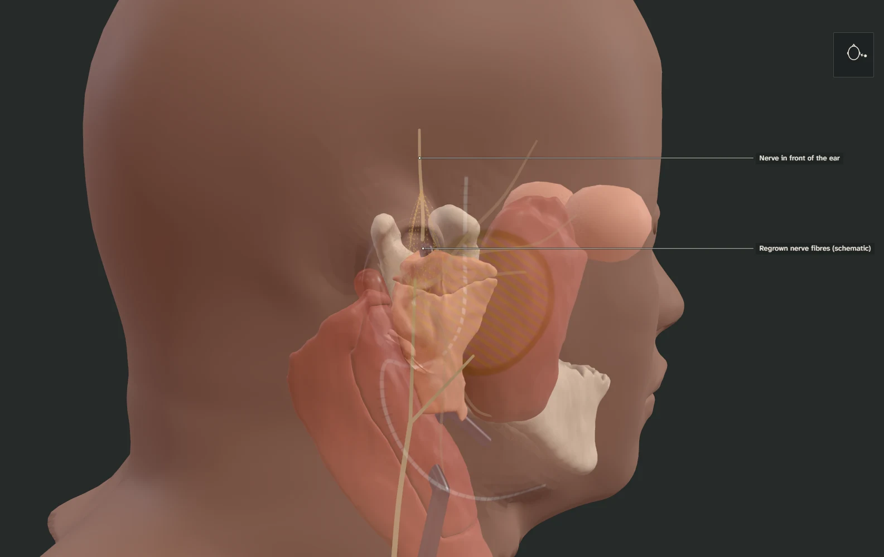
A nerve in front of the ear, the auriculotemporal nerve, gives feeling to the temple skin and carries the signal that makes the parotid gland produce saliva. [auriculotemporal-course] After injury, the nerve fibres that should make saliva can grow into the sweat glands of the skin, so that eating makes the skin over the gland sweat. [frey-mechanism]
The regrowth is drawn as hatched lines: it is a schematic of the idea, not a measured structure.
It is common if you test for it, but fewer people notice it themselves. [frey-incidence]
[framed figures, claim frey-incidence]
[framed figures, claim barrier-options]
Scene description (screen readers, static figure): The skin is drawn see-through. A nerve in front of the ear climbs toward the temple; hatched ochre fibres, drawn as lines, run out from its cut end toward the skin over the cheek, where an ochre patch marks the skin that sweats.
Checklist items
| Area | Statement | Compared against | Evidence | Self-review | Clinical |
|---|
| Complications | Each complication is mapped to the structure responsible and to the skin where it is felt, with every rate shown with its population. | Jin 2019; Bron and O'Brien 1997; Mortensen 2024; Lambiel 2021; Choi 2013; Linkov 2012; Lammek 2021; Britt 2017; Dulguerov 2017; Hintze 2021 | docs/qc/m1-anatomy/checks.json | limit: Territories are ellipsoids, not measured boundaries; Frey regrowth, the saliva collection and the returning nodules are schematic. Rates differ several-fold between series and are shown, not reconciled. | pending |
Claims
auriculotemporal-course established-anatomy sources checked clinical review: pending
Essentials: A nerve in front of the ear, the auriculotemporal nerve, gives feeling to the temple skin and carries the signal that makes the parotid gland produce saliva.
Anatomy: The auriculotemporal nerve is a branch of the trigeminal nerve. It runs behind the jaw joint, gives branches to the joint, the ear canal and the parotid, and climbs in front of the ear, usually crossing the superficial temporal artery. The gland receives its saliva-making (parasympathetic) fibres through it.
Clinical: In a review of the published anatomy its parotid branches arose 2–16 mm from the tragus, its branches crossed the superficial temporal artery in 73% of cases, and it communicated with the facial nerve in over 90%.
Origin of parotid branches from the tragus: mm (range 2–16); Published anatomical studies, pooled narratively; Systematic review with three cadaveric dissections
Branches crossing the superficial temporal artery: 73 %; Published anatomical studies, pooled narratively; Systematic review with three cadaveric dissections
Limitations: The nerve has one to five roots and varies in its branching; the course drawn in the model is one schematic arrangement authored from this description, not traced on the scan.
- Kadrie A, Toomey P, Callaway J et al. 2025. The Auriculotemporal Nerve: A Comprehensive Review of Its Anatomical Variation and Clinical Manifestations. Laryngoscope Investig Otolaryngol. systematic-review [active], Abstract link
- University of Iowa Department of Otolaryngology . Parotidectomy with Facial Nerve Dissection. Iowa Head and Neck Protocols. institutional-protocol [active], Pertinent anatomy link
- Gülekon N, Anil A, Poyraz A et al. 2005. Variations in the anatomy of the auriculotemporal nerve. Clin Anat. anatomical-study [active] (indirect), Abstract link
frey-mechanism standard-principle sources checked clinical review: pending
Essentials: After injury, the nerve fibres that should make saliva can grow into the sweat glands of the skin, so that eating makes the skin over the gland sweat.
Anatomy: Frey syndrome, sweating when eating, is thought to result from abnormal reinnervation after injury to the auriculotemporal nerve: its parasympathetic fibres normally stimulate saliva and its sympathetic fibres supply the sweat glands of the face and scalp.
Clinical: Frey syndrome is a recognised complication of parotid surgery; one review reports tumour size and mass volume as the only statistically significant predictors. A thicker skin flap, or a barrier such as a SMAS or temporoparietal fascia flap, has been used to prevent it.
Limitations: The reinnervation explanation is the accepted mechanism rather than something observed in individual patients; the regrowth drawn in the model is a schematic of that idea, not a measured structure. Predictors come from one review’s account of a single series.
- Zanghì A, Cavallaro A, Marchi M et al. 2024. Surgical management of benign tumors of the parotid gland: the advantages of extracapsular dissection compared to traditional surgical techniques. Front Surg. narrative-review [active], Section 3, Complications link
- Kadrie A, Toomey P, Callaway J et al. 2025. The Auriculotemporal Nerve: A Comprehensive Review of Its Anatomical Variation and Clinical Manifestations. Laryngoscope Investig Otolaryngol. systematic-review [active] (indirect), Conclusions link
frey-incidence comparative-evidence sources checked clinical review: pending
Essentials: Sweating and flushing over the cheek when eating is common after parotid surgery if you test for it, but fewer people notice it themselves.
Anatomy: Frey syndrome is diagnosed with the starch-iodine test: iodine is painted on the cheek, starch dusted over it and a lemon slice or sour drop given; the area of gustatory sweating stains dark blue.
Clinical: In 59 patients after unilateral parotidectomy, 20 (33.9%) reported symptoms after eating, while 30 (50.8%) tested positive on Minor's starch-iodine test; 19 of those 30 (63.3%) had symptoms, and 2 of 29 test-negative patients (6.9%) did. Pooled single-arm rates in pleomorphic adenoma were lower after extracapsular dissection (4%) than after superficial parotidectomy (13%).
Patients reporting symptoms after eating: 33.9 %; Patients after unilateral parotidectomy at one centre, 20 of 59; Single-centre case series with questionnaire
Patients with a positive starch-iodine test: 50.8 %; Patients after unilateral parotidectomy at one centre, 30 of 59; Single-centre case series, Minor's starch-iodine test
Symptoms among those with a positive test: 63.3 %; Patients with a positive starch-iodine test, 19 of 30; Single-centre case series
Symptoms among those with a negative test: 6.9 %; Patients with a negative starch-iodine test, 2 of 29; Single-centre case series
Limitations: One 59-patient series; the paper's own point is that the reported incidence varies widely with how Frey syndrome is measured. The pooled comparison after different operations is in claim ecd-vs-superficial-outcomes and is not a randomised comparison.
- Choi HG, Kwon SY, Won JY et al. 2013. Comparisons of Three Indicators for Frey's Syndrome: Subjective Symptoms, Minor's Starch Iodine Test, and Infrared Thermography. Clin Exp Otorhinolaryngol. case-series [active], Abstract, Results link
- University of Iowa Department of Otolaryngology . Parotidectomy with Facial Nerve Dissection. Iowa Head and Neck Protocols. institutional-protocol [active], Frey's syndrome link
- Salzano G, Scocca V, Troise S et al. 2025. Pleomorphic Adenoma: Extracapsular Dissection vs. Superficial Parotidectomy-An Updated Systematic Review and Meta-Analysis. Med Sci (Basel). meta-analysis [active] (indirect), Section 3.3 link
50. Pain with the first bite When things go wrong
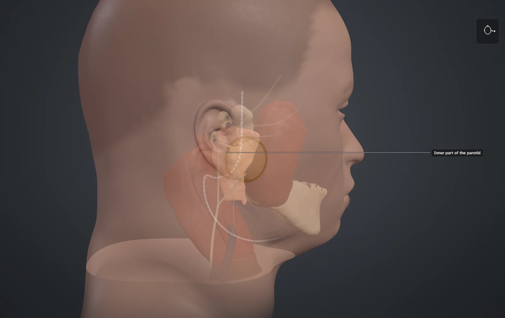
Some people feel a sharp cramping pain in the cheek with the first bite of each meal, easing over the next bites. It followed 6% of operations for benign tumours in one series and was much more common after surgery on the deep part of the gland in another. [first-bite-syndrome]
It is thought to arise from loss of the sympathetic nerve supply to the parotid. [first-bite-syndrome]
The sympathetic supply is not modelled, so the patch marks only where the pain is felt.
[framed figures, claim first-bite-syndrome]
[framed figures, claim first-bite-syndrome]
Scene description (screen readers, static figure): The skin is drawn see-through, showing the inner part of the gland in the wound. An ochre patch on the cheek in front of the ear marks where the pain is felt with the first bite of a meal.
Checklist items
| Area | Statement | Compared against | Evidence | Self-review | Clinical |
|---|
| Complications | Each complication is mapped to the structure responsible and to the skin where it is felt, with every rate shown with its population. | Jin 2019; Bron and O'Brien 1997; Mortensen 2024; Lambiel 2021; Choi 2013; Linkov 2012; Lammek 2021; Britt 2017; Dulguerov 2017; Hintze 2021 | docs/qc/m1-anatomy/checks.json | limit: Territories are ellipsoids, not measured boundaries; Frey regrowth, the saliva collection and the returning nodules are schematic. Rates differ several-fold between series and are shown, not reconciled. | pending |
Claims
first-bite-syndrome comparative-evidence sources checked clinical review: pending
Essentials: Some people feel a sharp cramping pain in the cheek with the first bite of each meal, easing over the next bites. It followed 6% of operations for benign tumours in one series and was much more common after surgery on the deep part of the gland in another.
Anatomy: First bite syndrome is thought to arise from loss of the sympathetic nerve supply to the parotid. In one series it followed surgery on the deep lobe, the space beside the throat or the sympathetic chain far more often than total parotidectomy.
Clinical: In 111 adults after parotidectomy for benign tumours, 7 (6.3%) had first bite syndrome. In 499 patients having surgery on the deep lobe, the parapharyngeal space or the infratemporal fossa, 45 (9.6%) did; it followed 48.6% of operations that sacrificed the sympathetic chain, 22.4% of parapharyngeal dissections, 38.4% of isolated deep-lobe resections and 0.8% of total parotidectomies. Symptoms partly resolved in 69% and fully in 12%, and no treatment worked consistently.
First bite syndrome after parotidectomy for benign tumours: 6.3 %; Adults operated for benign parotid tumours at one centre, assessed by questionnaire, 7 of 111; Single-centre questionnaire study
First bite syndrome after surgery of the deep lobe, parapharyngeal space or infratemporal fossa: 9.6 %; Patients having surgery of the deep lobe, parapharyngeal space and/or infratemporal fossa, 1992 to 2010, 45 of 499; Retrospective cohort, Kaplan-Meier incidence
First bite syndrome after isolated deep-lobe resection: 38.4 %; Patients having resection of the deep lobe only, in the same series; Retrospective cohort
First bite syndrome after total parotidectomy: 0.8 %; Patients having total parotidectomy in the same series; Retrospective cohort
Partial resolution of symptoms: 69 %; Patients who developed first bite syndrome in the same series; Retrospective cohort
Complete resolution of symptoms: 12 %; Patients who developed first bite syndrome in the same series; Retrospective cohort
Limitations: The larger series describes deep-lobe, parapharyngeal and infratemporal surgery, not routine superficial parotidectomy for a benign superficial tumour, so its rates do not apply to the representative operation shown. The mechanism (sympathetic denervation) is the accepted explanation, given as 'thought to be' in the Iowa protocol, not observed in individual patients. The model draws the region of pain as a schematic territory.
- Linkov G, Morris LG, Shah JP et al. 2012. First bite syndrome: incidence, risk factors, treatment, and outcomes. Laryngoscope. case-series [active], Abstract, Results and Conclusions link
- Lammek K, Tretiakow D, Skorek A 2021. First bite syndrome after parotidectomy: a single-centre experience. Int J Oral Maxillofac Surg. case-series [active], Abstract link
- University of Iowa Department of Otolaryngology . Parotidectomy with Facial Nerve Dissection. Iowa Head and Neck Protocols. institutional-protocol [active] (indirect), Describe potential complications link
51. A collection of saliva When things go wrong
A collection of saliva under the skin flap, or a leak of saliva through the wound, is one of the commoner early problems; in one large series it affected roughly one patient in eleven, mostly within a month, and all settled. [sialocele-rates] In one series it was more likely after an inferior or middle superficial parotidectomy than after other extents of dissection. [sialocele-rates]
The pocket is drawn as an outline, an illustration of the idea and not a measured shape.
[framed figures, claim sialocele-rates]
[framed figures, claim sialocele-rates]
Scene description (screen readers, static figure): Through the window, an ochre outline marks a pocket in the space under the skin, over the inner gland, where saliva has collected.
Checklist items
| Area | Statement | Compared against | Evidence | Self-review | Clinical |
|---|
| Complications | Each complication is mapped to the structure responsible and to the skin where it is felt, with every rate shown with its population. | Jin 2019; Bron and O'Brien 1997; Mortensen 2024; Lambiel 2021; Choi 2013; Linkov 2012; Lammek 2021; Britt 2017; Dulguerov 2017; Hintze 2021 | docs/qc/m1-anatomy/checks.json | limit: Territories are ellipsoids, not measured boundaries; Frey regrowth, the saliva collection and the returning nodules are schematic. Rates differ several-fold between series and are shown, not reconciled. | pending |
Claims
sialocele-rates comparative-evidence sources checked clinical review: pending
Essentials: A collection of saliva under the skin flap (a sialocele) or a leak of saliva through the wound is one of the commoner early problems; in one large series it affected roughly one patient in eleven, mostly within a month, and all settled.
Anatomy: In one series a sialocele or fistula was more likely after an inferior or middle superficial parotidectomy than after other extents of dissection.
Clinical: At one university centre, 70 of 771 patients (9.1%) over 1994 to 2013 developed a sialocele or salivary fistula; 67 (96%) did so within a month and all had resolved by 6 months. Inferior and middle superficial parotidectomy had a significantly higher rate than other extents; age, sex, pathology, body mass index and specimen volume did not differ. In the Cochrane review, acellular dermal matrix made little or no difference to seromas or sialoceles (risk ratio 2.33, 95% CI 0.66 to 8.23; 64 participants, low-certainty) but may raise wound infection. A systematic review of 235 studies pooled sialocele at 4.5% (95% CI 3.5 to 5.7) and salivary fistula at 3.1% (2.6 to 3.7), and found both more frequent after less extensive operations.
Sialocele or salivary fistula after parotidectomy: 9.1 %; All patients having parotidectomy at one university hospital, 1994 to 2013, 70 of 771; Single-centre retrospective cohort
Sialocele or fistula appearing within a month: 96 %; Patients who developed a sialocele or salivary fistula, 67 of 70; Single-centre retrospective cohort
Seroma or sialocele with acellular dermal matrix versus no graft (risk ratio): 2.33 RR (95% CI 0.66–8.23); Adults undergoing superficial parotidectomy, mostly for benign lesions, in randomised trials, 64 participants; Cochrane systematic review, low-certainty evidence
Sialocele, pooled across studies: 4.5 % (95% CI 3.5–5.7); Patients in studies of parotidectomy reporting minor complications, 235 studies in total; Systematic review, pooled incidence
Salivary fistula, pooled across studies: 3.1 % (95% CI 2.6–3.7); Patients in studies of parotidectomy reporting minor complications, 235 studies in total; Systematic review, pooled incidence
Disagreement: A systematic review of 235 studies pooled sialocele at 4.5% and salivary fistula at 3.1%, lower than the 9.1% for the two together at the single centre above; both found them more frequent after less extensive operations.
Limitations: A single-centre series spanning two decades, so techniques changed over the period; the abstract does not say how the diagnosis was made or whether mild collections were counted. Results from one centre do not give the rate for another, and the figure is for sialocele together with salivary fistula. The schematic pocket drawn in the atlas is an illustration of the idea, not a measured shape.
- Britt CJ, Stein AP, Gessert T et al. 2017. Factors influencing sialocele or salivary fistula formation postparotidectomy. Head Neck. case-series [active], Abstract, Results and Conclusion link
- Ye L, Cao Y, Yang W et al. 2019. Graft interposition for preventing Frey's syndrome in patients undergoing parotidectomy. Cochrane Database Syst Rev. cochrane-review [active], Abstract, Main results link
- Lambiel S, Dulguerov N, Courvoisier DS et al. 2021. Minor Parotidectomy Complications: A Systematic Review. Laryngoscope. systematic-review [active], Abstract, Results link
52. The tumour comes back When things go wrong
When a pleomorphic adenoma comes back, the most important cause named in one review is an operation that cut into the tumour and left some behind; a thin or incomplete capsule, finger-like extensions and satellite nodules make that more likely. [recurrence-factors] A recurrent tumour is often multinodular and harder to treat, and a second recurrence is not rare. [recurrent-pa-management]
[inset: Why shelling the tumour out leaves some behind]
[PseudocapsuleInset]
The nodules are drawn as outlines to show the idea; where a recurrence grows, and how many nodules, vary from patient to patient.
[framed figures, claim recurrent-pa-management]
[framed figures, claim enucleation-recurrence]
Scene description (screen readers, static figure): Through the window, a few small ochre-outlined nodules lie in the bed where the tumour used to be, among the nerve's branches.
Checklist items
| Area | Statement | Compared against | Evidence | Self-review | Clinical |
|---|
| Complications | Each complication is mapped to the structure responsible and to the skin where it is felt, with every rate shown with its population. | Jin 2019; Bron and O'Brien 1997; Mortensen 2024; Lambiel 2021; Choi 2013; Linkov 2012; Lammek 2021; Britt 2017; Dulguerov 2017; Hintze 2021 | docs/qc/m1-anatomy/checks.json | limit: Territories are ellipsoids, not measured boundaries; Frey regrowth, the saliva collection and the returning nodules are schematic. Rates differ several-fold between series and are shown, not reconciled. | pending |
Claims
recurrence-factors comparative-evidence sources checked clinical review: pending
Essentials: When a pleomorphic adenoma comes back, the most important cause named in one review is an operation that cut into the tumour and left some behind; a thin or incomplete capsule, finger-like extensions and satellite nodules make that more likely.
Anatomy: Features of the tumour linked to recurrence include its subtype, a thin or incomplete capsule, finger-like extensions and satellite nodules. Features of the operation linked to recurrence are positive margins and tumour spillage. Myxoid subtypes tend to have thinner, incomplete capsules and recur more often.
Clinical: A systematic review concluded that large or myxoid pleomorphic adenomas, especially in young patients, should be approached more cautiously to avoid recurrence. A review of recurrent tumours describes most as multinodular and enucleation with rupture and incomplete excision as the most important cause.
Limitations: The abstracts list associated variables without pooled effect sizes, and the association does not show which factor causes recurrence in a given patient. The drawn recurrent nodules are schematic: where a recurrence arises, and how many nodules, are illustrations.
- Dulguerov P, Todic J, Pusztaszeri M et al. 2017. Why Do Parotid Pleomorphic Adenomas Recur? A Systematic Review of Pathological and Surgical Variables. Front Surg. systematic-review [active], Abstract, Results and Conclusion link
- Witt RL, Eisele DW, Morton RP et al. 2015. Etiology and management of recurrent parotid pleomorphic adenoma. Laryngoscope. narrative-review [active], Abstract link
recurrent-pa-management comparative-evidence sources checked clinical review: pending
Essentials: When a pleomorphic adenoma comes back it is harder to treat, and a second recurrence is not rare. Radiotherapy after the repeat operation is linked with fewer further recurrences.
Anatomy: Recurrent tumours are often multinodular, MRI is the imaging study of choice, and treatment is individualised; total parotidectomy is appropriate in many patients but may not control the disease.
Clinical: In 14 studies of 697 patients with recurrent pleomorphic adenoma, the pooled risk of a further recurrence was 21%: 26% after surgery alone (151 of 538) and 10% with adjuvant radiotherapy (21 of 159).
Further recurrence of recurrent pleomorphic adenoma, all treatments: 21 %; Patients treated for recurrent parotid pleomorphic adenoma, English-language studies 1985 to 2019, 14 studies, 697 patients; Systematic review and meta-analysis; groups not randomised
Further recurrence after surgery alone: 26 %; Patients with recurrent pleomorphic adenoma treated by surgery alone, 151 of 538; Systematic review and meta-analysis; groups not randomised
Further recurrence with adjuvant radiotherapy: 10 %; Patients with recurrent pleomorphic adenoma treated with adjuvant radiotherapy, 21 of 159; Systematic review and meta-analysis; groups not randomised
Limitations: The radiotherapy and surgery-only groups were not randomised, so who was chosen for radiotherapy may differ in ways that affect the result, and follow-up times differ. Radiotherapy has its own risks, which the abstract does not address.
- Hintze JM, O'Duffy F, White-Gibson A et al. 2021. Supporting the use of adjuvant radiotherapy in recurrent pleomorphic adenoma of the parotid. Acta Otolaryngol. meta-analysis [active], Abstract, Results and Conclusions link
- Witt RL, Eisele DW, Morton RP et al. 2015. Etiology and management of recurrent parotid pleomorphic adenoma. Laryngoscope. narrative-review [active], Abstract link
enucleation-recurrence comparative-evidence sources checked clinical review: pending
Essentials: Shelling a tumour out of its capsule leaves behind the tiny extensions that reach beyond it, and the tumour tends to come back.
Anatomy: The most important cause of recurrence is enucleation with rupture and incomplete excision. Incomplete pseudocapsule, extracapsular extension, pseudopodia and satellite tumours beyond the capsule are also linked to recurrence; surgical risk factors are positive margins and tumour spillage.
Clinical: Early twentieth-century enucleation had recurrence rates of the order of 20–40% in series cited in a recent paper.
Recurrence after intracapsular enucleation: % (range 20–40); Historical series of enucleation, as cited in a 2024 introduction (original series not re-checked); Citation of earlier series
Limitations: The recurrence range is a secondary citation; the systematic reviews cited here establish the causes of recurrence, not its rate after enucleation. Extracapsular dissection, which also stays close to the tumour, has recurrence similar to larger operations in selected tumours (chapter 6).
- Witt RL, Eisele DW, Morton RP et al. 2015. Etiology and management of recurrent parotid pleomorphic adenoma. Laryngoscope. narrative-review [active], Abstract link
- Dulguerov P, Todic J, Pusztaszeri M et al. 2017. Why Do Parotid Pleomorphic Adenomas Recur? A Systematic Review of Pathological and Surgical Variables. Front Surg. systematic-review [active], Abstract link
- Cristofaro MG, Colangeli W, Ferragina F et al. 2024. Facial Nerve Injury after Extracapsular Dissection for Benign Parotid Tumors with and without Intraoperative Monitoring: A Retrospective Study of a Single Center. Diagnostics (Basel). cohort [active] (indirect), Introduction link
- Zanghì A, Cavallaro A, Marchi M et al. 2024. Surgical management of benign tumors of the parotid gland: the advantages of extracapsular dissection compared to traditional surgical techniques. Front Surg. narrative-review [active] (indirect), Introduction link
53. Take the instrument Take the instrument
From here the model is yours. The button at the top right of the picture, "Take the instrument", opens the controls. Drag the picture, or use the arrow buttons, to turn it, and click any structure to ask what it is.
The depth controls fade or hide one kind of tissue at a time: skin, fat, nerves, bone. Nothing is deleted. Moving to another plate puts the picture back as the story drew it.
Under "The operation" you can choose which resection is done, carry it out step by step with the slider, and try the skin line and the closure layer. It is the same model the story used, and it shows one representative way of doing each step; which operation suits a patient is a decision for the patient and the surgeon.
Without the 3D scene, the plates before this one and the table on the next plate carry the lesson.
Scene description (screen readers, static figure): The whole right parotid region seen from the side. The skin is a faint outline; the gland lies over the jaw and the chewing muscle, the facial nerve runs through it, and the tumour sits in the outer part. The Instrument button at the top right of the picture opens the controls.
Checklist items
| Area | Statement | Compared against | Evidence | Self-review | Clinical |
|---|
| Explore | The viewer can handle the model: a depth dial per tissue family, orbit and zoom, structure cards, and the four resections carried out step by step; the comparison shows what each takes from the same gland. | The model's own pieces (frame.json) | apps/site/public/compare/ecd.png
apps/site/public/compare/total.png | limit: The facelift incision is a planned line only (the flap is cut along the Blair path). Volumes are properties of this one gland. | pending |
Claims
54. Four operations on the same gland Take the instrument
[inset: What each operation takes, on the same gland]
[CompareExtents]
Most comparisons between operations come from records of what surgeons chose, so they cannot show that one operation is safer than another for the same tumour. [evidence-limits-choice]
The pictures show how much of this one gland each operation takes. They are not a ranking, and the volumes are properties of this model, not general figures.
Scene description (screen readers, static figure): The gland is drawn pulled apart into its pieces, with violet ink marking the edges of the pieces and the cuff of gland around the tumour. Four small pictures beside the text show what each of the four operations takes from the same gland.
Checklist items
| Area | Statement | Compared against | Evidence | Self-review | Clinical |
|---|
| Choosing | The gland is divided into the five ESGS levels (I-IV of the body and the accessory lobule) with the extracapsular cuff around the tumour, and each operation takes the pieces its definition names. | Quer 2016 (ESGS classification; full text unavailable); Pujol-Olmo 2020 level weights; Zanghì 2024 definitions | docs/qc/m1-anatomy/esgs_levels.png
docs/qc/m1-anatomy/checks.json | limit: Level boundaries follow the nerve plane and a surface through the buccal branch, so the level shares (I 8%, II 51%, III 30%, IV 10%) differ from the published ones. Reported, not tuned. | pending |
| Explore | The viewer can handle the model: a depth dial per tissue family, orbit and zoom, structure cards, and the four resections carried out step by step; the comparison shows what each takes from the same gland. | The model's own pieces (frame.json) | apps/site/public/compare/ecd.png
apps/site/public/compare/total.png | limit: The facelift incision is a planned line only (the flap is cut along the Blair path). Volumes are properties of this one gland. | pending |
Claims
evidence-limits-choice uncertain sources checked clinical review: pending
Essentials: Most comparisons between operations come from records of what surgeons chose, so they cannot show that one operation is safer than another for the same tumour.
Anatomy: No randomised trial has compared extracapsular dissection with superficial parotidectomy. The studies are retrospective, differ in size, follow-up and tumour mix, and rarely say how the operation was chosen, which introduces selection bias.
Clinical: The UK national guideline asks only that benign parotid tumours be completely excised, which offers good cure rates.
Limitations: Salzano 2025 is itself a single-arm pooled analysis of mostly retrospective studies with some internally inconsistent figures.
- Salzano G, Scocca V, Troise S et al. 2025. Pleomorphic Adenoma: Extracapsular Dissection vs. Superficial Parotidectomy-An Updated Systematic Review and Meta-Analysis. Med Sci (Basel). meta-analysis [active], Section 4, Limitations link
- Sood S, McGurk M, Vaz F 2016. Management of Salivary Gland Tumours: United Kingdom National Multidisciplinary Guidelines. J Laryngol Otol. guideline [active], Recommendations link